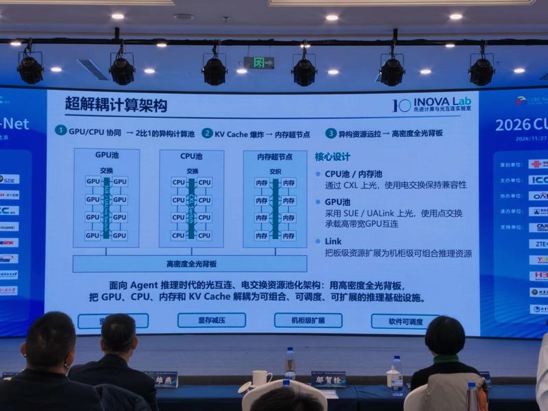
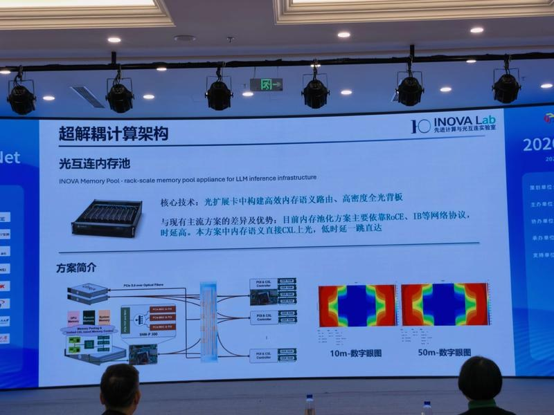
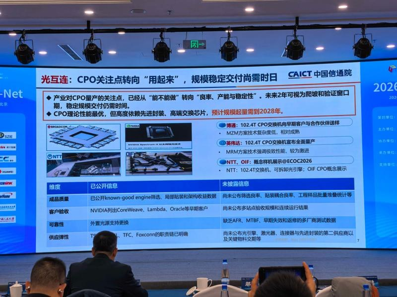

调研纪要 · 2026-11-27 新闻日报
星球 ID: 28855458518111 | 共 199 条帖子 | 精华 43 条
| 查看研究积累
书签
历次国常会研究资本市场与上证指数走势
历次国常会研究资本市场与上证指数走势
提法：
提法：
1. 【资本市场事关经济发展大局】
2. 【加力发挥“国家队”稳市作用】—— 第一次国常会提“国家队”概念
3. 汇金，提供充足流动性保障：【进一步优化中央汇金公司的类“平准基金”功能，提供充足流动性保障】
刚刚发出今天上午召开的国务院常务会议，以较长篇幅提及了资本市场，通稿刚刚发布，创下了两个罕见：
刚刚发出今天上午召开的国务院常务会议，以较长篇幅提及了资本市场，通稿刚刚发布，创下了两个罕见：
1、上午开会，中午发稿，而不是等收盘后发稿，这是比较罕见的。
2、新闻通稿里以三分之一的篇幅谈论资本市场，占比之高、涉及面之广非常罕见。
通稿中关于资本市场的表述如下：
会议指出，资本市场事关经济发展大局。要坚持目标导向、问题导向，坚持逆周期调节和改革攻坚两手抓，持续完善资本市场稳市机制，实施好存量政策，谋划出台增量政策，促进资本市场平稳健康发展。要推动上市公司加大分红回购力度，加力发挥“国家队”稳市作用，进一步优化中央汇金公司的类“平准基金”功能，提供充足流动性保障。完善保险、企业年金、社保基金等中长期资金入市支持引导政策，不断壮大中长期投资力量。加强输入性风险防范应对。要通过深化改革增强资本市场高质量发展的内生动力，加快发展多层次资本市场。要依法强化资本市场全链条监管，坚决查处财务造假、违规减持等行为，有效保护投资者合法权益。
这符合我之前的判断：今年经济有两大亮点，一个是进出口，一个是股市。
股市如果冷下来，对经济影响很大，也会波及消费、楼市。所以，本轮救市决心很大，力度也会空前。
通稿里这几句话非常值得关注：
1、资本市场事关经济发展大局。
2、实施好存量政策，谋划出台增量政策，促进资本市场平稳健康发展。
3、加力发挥“国家队”稳市作用，进一步优化中央汇金公司的类“平准基金”功能，提供充足流动性保障。
4、加强输入性风险防范应对。
总之，稳定资本市场关系经济全局，不仅关系到十五五开局之年，也关系到明年的形势，相信会有更大力度的政策出台。
【华西食品】国常会：加力发挥“国家队”稳市作用，进一步优化中央汇金公司的类“平准基金”功能
【华西食品】国常会：加力发挥“国家队”稳市作用，进一步优化中央汇金公司的类“平准基金”功能
[玫瑰]#板块成长方向等到买入时机：重点按手推荐妙可蓝多
[玫瑰]#价值/红利/周期继续维持持有：伊利蒙牛优然新乳业现代西麦中炬
❗提示：此前无基本面个股受资金面驱动上涨当前或有波动。
[玫瑰]再次提示：#此前未上车乳业板块/未做好配置建议择机配置
[咖啡]下周北京路演，还剩周三到周五可排！
国产算力逻辑再强化❗
国产算力逻辑再强化❗
＃供给端——BIS管制收紧：
① 宣告海外租卡时代终结，算力采购往国产卡倾斜。
② 先进节点芯片境外代工再收紧，直接影响：具备国产n+2产能成胜负手。
……
＃需求侧——国内算力投资高增：
①腾讯2026Q3资本开支814.33亿元，远超市场预期。
②广东省算力规划大幅超出预期，到2030年，力争达到4000 EFlops。
……
✔从中期产业逻辑看，国产自主自强一条链：
＃国产算力芯片→国产晶圆制造→国产设备→先进封测。
我们首选具有稳定国产代工产能的＃寒武纪和昇腾链：
【寒武纪】
【昇腾链】
代工：中芯国际
封测：盛合晶微、伟测科技
设备：长川科技、芯碁微装、强一股份
Drmos：杰华特、芯朋微
散热：鸿日达
此外，其他AI芯片公司早已布局国内先进制程供应链 ，BIS政策影响有限，明年同样将是业绩爆发元年，＃同样可以重视超跌的AI芯片厂商。
【西部计算机】国产算力自主从可选项变为必选项
【西部计算机】国产算力自主从可选项变为必选项
[玫瑰]荷兰外交大臣贝伦德森11月25日在北京明确表示，荷兰政府正努力阻止美国通过《
硬件技术控制多边协同法案 ↗》（MATCH法案），强调“出口管制政策应由荷兰自主决定，不接受具有域外效力的单边决定”。
[玫瑰]国内半导体产业正处于扩产周期，产能利用率、资本开支与订单可见性共同支撑的产业事实。 设备端有望率先提升渗透率，平台型企业以及细分赛道龙头将获得确定性较高、弹性较大的增长。
[玫瑰]标的：1）AI芯片： 寒武纪、海光信息；2）晶圆代工与特色工艺： 中芯国际、华虹公司、芯联集成；3）先进封装与设备：汇成股份、盛合晶微、芯碁微装、先导基电。
物理AI&机器人：#重量级的边际变化不容忽视，2027年具身智能部分垂直场景有望迎来爆发
物理AI&机器人：#重量级的边际变化不容忽视，2027年具身智能部分垂直场景有望迎来爆发
#几点重量级的边际变化：
#1、大脑飞速发展：大脑从之前的VLA和世界模型二元对立开始走向融合，单独拆每一个路线都在快速迭代，且基本可以看到不同路线在快速融合的发展趋势，综合效果上进步飞速。
#下半年事件密集：最重磅的是，GPT-6 Astra直接接到机器人上。据英伟达研究Astra智能体在仿真操作基准上成功率74.8%，对比专用机器人模型最好的51.0%。
#世界模型密集落地：Genie 4、Cosmos 3.5、World Labs Atlas、华为昇腾原生具身世界模型、字节年底版本。
#2、人形机器人标杆的量产启动：特斯拉Optimus在弗里蒙特高量产线启动“早期生产”，首批量产质量机器人下线；马斯克称至少一年可达到年化周产2万台，预计2027年底对外交付，AI5约2027年4月集成，先造1-2万台做自训练数据飞轮。
#我们预计部门具身智能垂直场景有望在2027年迎来爆发，主要基于模型进展迅速，当前的机器人专用模型不够泛化，模型的发展带来泛化能力和落地经济性的快速提升。#交易层面机器人板块当前回踩后有双底信号，基于前期跌幅深悲观预期计价充分+筹码出清彻底+产业端重磅变化+27年大拐点预期，建议重视。
#近期重点安排以下反路演欢迎预约：物流场景：德马科技、兰剑智能、中力股份；电力场景：申昊科技、咸亨国际；具身小脑+执行层：珞石机器人、征和工业
MLCC深度：国产高端化加速，上游原材料打开新空间
MLCC深度：国产高端化加速，上游原材料打开新空间
[红包]MLCC是电子产品中用量最大的元器件之一，采用多层“介电体—内电极”叠层结构，适用于高密度贴装。下游轻薄化、高性能化趋势推动其向小型、高容、高可靠及高频化升级。
[红包]市场空间与产业链：AI服务器成为需求增长的重要动力，村田预计该领域MLCC市场年均增长约30%，2030年规模约为目前的3倍；全球市场有望由2025年的1120亿元增至2027年的1490亿元，复合增速超15%，中国占比将升至45%以上。上游涵盖陶瓷粉末、电极材料、离型膜及设备：钛酸钡是核心介质材料，镍粉用于内电极，少量稀土掺杂剂可调节陶瓷性能。
[红包]供给端：日韩厂商优先保障AI等高端订单，高端产品供应趋紧、价格上涨，部分中高容订单向中国大陆及中国台湾厂商外溢，国产替代加速。全球格局较集中，村田、三星电机、太阳诱电等领先，国内厂商正加快高端布局。
[红包]关注MLCC关键上游原材料及高端进口替代相关标的：高端MLCC制造关注三环集团、风华高科、火炬电子等，上游粉体及关键材料关注国瓷材料、博迁新材、洁美科技等。
【天风新材料】科技行情回暖，AI硬件产业链关注组合
【天风新材料】科技行情回暖，AI硬件产业链关注组合
🔥【行情与逻辑】英伟达管理层不确定性缓解，海外算力采购与1.6T光模块排产预期回稳，前期调整较多的国产算力与AI硬件材料板块情绪修复。以下按产业链环节梳理相关公司：
📈【算力&ai应用】慧博云通、共达电声、华是科技。
🔧【设备零部件与光源】先锋精科、频准激光、光智科技。
🏗️【洁净室】亚翔集成、圣晖集成、柏诚股份、华康洁净。
🧪【CCL三大主材与配套】1）电子布：宏和科技、国际复材、中材科技、中国巨石；2）电子树脂：东材科技、圣泉集团、同宇新材、瑞丰高材；3）铜箔：德福科技；铜冠铜箔；4）硅微粉：联瑞新材、凌玮科技；5）PCB化学品：天承科技；光华科技；6）PCB钻针：鼎泰高科；中钨高新；民爆光电。
📦【载板与类ABF膜】深南电路、兴森科技、生益科技、华正新材、莲花控股。
⚡【MLCC及离型膜】三环集团、风华高科、国瓷材料；洁美科技、斯迪克、东材科技、国风新材。
☎️联系人：鲍荣富/王丹/于那/周丹丹/上官京杰/林晓龙/曾子峻
【天风医药】创新药板块：2027年全球商业化兑现与国内医保放量共振
【天风医药】创新药板块：2027年全球商业化兑现与国内医保放量共振
[太阳]核心逻辑：2027年中国创新药有望从BD出海进一步走向全球销售和利润兑现，海外销售与持续分成叠加国内医保支持，推动投资关注点向可持续盈利和现金流转移。
[玫瑰]海外商业化加速，存量放量与新品上市共同驱动
百济神州依托泽布替尼全球销售体系，欧美放量有望持续释放经营杠杆，带动利润释放；和黄医药以呋喹替尼海外分成和供货收入为基础，赛沃替尼美国注册推进有望拓展海外产品组合。
科伦博泰SKB264迎来2027年美国审评窗口，若获批上市，有望通过默沙东兑现里程碑与销售分成；迪哲医药舒沃替尼若按阿斯利康计划于2026Q4在美推出，2027年有望迎来首个完整销售年度，并关注一线拓展。和誉匹米替尼已获FDA批准，依托德国默克全球商业化渠道，2027年有望加速兑现双位数销售分成，美国首次商业销售还将触发2000万美元里程碑，推动授权成果向持续收入转化。
[玫瑰]医保支持创新，准入、支付与采购三层传导
准入扩容：新增107种药品，其中51个为1类创新药；支付限制放宽：60个品种调整支付限定，其中92%放宽，有利于扩大可报销患者范围；采购放量：2025年国谈药采购额1725亿元、同比增长48%。新目录2027年落地，有望通过提升可及性促进放量，利润兑现仍看销量、净价与费用效率。
[玫瑰]建议关注：百济神州、科伦博泰生物、百利天恒、信达生物、石药集团、复宏汉霖、荣昌生物、和黄医药、迪哲医药、康诺亚、药明巨诺、和誉医药
[咖啡]我们整理了板块55家公司的盈利预测，更多请联系：天风医药 杨松/曹文清
[玫瑰]【dcjsj】技术持续发展高于很多分歧，ai链条坚定看好。
[玫瑰]【dcjsj】技术持续发展高于很多分歧，ai链条坚定看好。
流动性与市场博弈带来短期波动，ai带来的技术革命才是根本：
1.近期AI模型解决人类世纪难题，看到了AI投入推动文明进步的曙光。
2.国产模型于国产芯片上训练不止在ppt上，国内技术发展也在持续。
3.明年有望迎来企业/物理/多模态/研发等AI纯增量级应用落地。
随着扰动因素缓和，行业技术迭代的连续性得到更好支撑。我们持续看好行业技术演进软件与算力生态的价值深化。
#算力：nv海外算力链条、国产算力、AIDC/云等
#应用：AI4S、物理AI、FDE、网络安全等
#【开源中小盘】反弹三剑客
#【开源中小盘】反弹三剑客
#频准激光 #国仪公司 #日联科技
近期路演反复强Call！欢迎交流[抱拳][抱拳][抱拳]
[红包]申昊科技经营更新
[红包]申昊科技经营更新
[太阳]今年三季度扭亏，三四季度是高峰；在手订单18亿（机器人7亿多+监测检测4亿多+算力服务6–7亿）；明年新签约30亿，净利目标约1.5亿；低毛利储能业务收缩至4500万以内。
[太阳]算力中心巡检机器人，1GW≈300台×40万≈1.2亿，已做约1.4GW；阿里从2台到60台、将大规模复制；和林格尔客户拿5GW指标、已签1GW，5GW全采对应1500台、6个亿；人工替代约一年多回本。
[太阳]出海三步走：节点本地化（本地公司+大客户入股绑定），跟字节、阿里去马来西亚，再服务北美数据中心；海外定价约50万/台，预计5000万–1亿美金订单。
🧧【DCTX】九州一轨：金刚石散热项目点火，硅光隐切与金刚石散热双轮驱动成长
🧧【DCTX】九州一轨：金刚石散热项目点火，硅光隐切与金刚石散热双轮驱动成长
[太阳]近期，公司参股企业通创九州金刚石芯片基板项目（一期）正式点火，并与五家产业链企业签署战略合作协议，同时签约推进内蒙古基地建设。北京广播电视台专题报道该项目，#金刚石散热产业关注度进一步提升。
1️⃣产业链优势：定位国内 #首家 单晶金刚石垂链整合项目，长晶、剥离、抛光、划片等核心设备全部 #自研自供，叠加全自动化产线，有望实现#成本持续下行； 直接交付散热器件而非材料，产品价值量及盈利潜力更高。
2️⃣性能优势：金刚石导热性能领先，能够实现芯片端热量快速导出，与液冷形成互补#成为高功率芯片散热的必然趋势。
3️⃣客户优势：依托现有光通信客户资源，优先切入光模块散热，逐步向计算芯片、存储芯片及量子芯片领域延伸。
4️⃣技术与业务拓展：二期计划投资内蒙古基地，28年突破4—6英寸单晶金刚石晶圆制备技术，30年后实现8—12英寸量产，并拓展量子芯片、深紫外LED、高能粒子探测器等独立产品线。
5️⃣成长空间：一期达产后年产6,000万颗，项目总体规划年产10亿颗单晶金刚石器件，远期年收入有望接近百亿元。
6️⃣产业进展：27年有望成为金刚石散热规模化商用元年，#行业内亿元级乃至十亿元级订单有望陆续落地。
[礼物]晶禧半导体卡位硅光隐切稀缺赛道，具备极强的设备与工艺壁垒，有望持续兑现明年业绩；金刚石散热业务开辟第二成长曲线，打开长期估值空间，持续推荐。
❗️安孚科技更新：低估值的DUV产业链标的--天风家电团队
❗️安孚科技更新：低估值的DUV产业链标的--天风家电团队
[太阳]主业南孚电池26年业绩约10e，保持个位数稳健增长，公司目前持股46%，后续54%股权预计采用股份支付+现金结合方式收购；是公司稳定的现金牛业务。
[玫瑰]目前持股易缆微8.5%股权，后续持股比例有望进一步提升；易缆微独创硅光异质集成薄膜铌酸锂技术平台，已确立了数据中心硅光领域单波200Gbps、400Gbps光芯片的全球技术领先地位。当前收入主要来自无源器件（26年约1e，27年预计3-4e）；1.6T光模块已向核心客户送样，验证结果预计26年底落地，产能端已提前锁定，后续有望联合头部客户推出下一代光模块；
[玫瑰]目前持股华昇迈10%股权，且与华昇迈成立合资公司，合资公司业务两大板块：1）面向GKJ整机厂光源销售，当前未放量；2）GKJ后端维保市场，市场存量规模200e，后续每年仍有增量，进入壁垒高，利润率高；
🧧儒意电影更新：电影大盘修复释放盈利弹性，AI与多元业态驱动院线价值重估
🧧儒意电影更新：电影大盘修复释放盈利弹性，AI与多元业态驱动院线价值重估
#优质影片供给丰富，院线主业有望释放盈利弹性。 2026年底《
复仇者联盟5 ↗》《
沙丘3 ↗》等进口大片接续上映，2027年春节档及全年国产头部影片储备丰富。公司持续加大优质内容投资及发行力度，为《
流浪地球3 ↗》主要出品方之一，并参与《
转念花开 ↗》《
狠家伙 ↗》等多部头部影片。公司通过租金优化、人效提升及放映设备升级持续降低盈亏平衡线，有望受益于电影大盘修复有望，带来更大的利润弹性。
#AI电影全链路布局提速，内容供给扩容有望放大院线渠道价值。 公司积极推进AI自制内容，包括AI电影、AI剧集、科教互动内容等多元项目，近期可关注电影级AI制作平台及创作者扶持生态发布。公司已组建AI电影专项发行团队，凭借专业发行、规模化银幕资源及精准用户触达能力，有望承接更多优质内容，进一步发挥头部院线的渠道优势。
#超级娱乐空间战略持续深化，院线向综合娱乐消费场景升级。 公司持续探索演唱会大电影、心灵疗愈、互动影综、赛事直播等多元内容。率先验证创新商业模式后将加快规模化复制，在提升影院资产使用率、拓展客群的同时，带动高毛利非票业务增长，优化整体盈利结构。
#建议关注院线资产的长期价值重估。 我们认为，短期电影大盘修复与降本增效有望共振释放业绩弹性；中长期AI带来的内容供给扩容、分线发行机制深化及多元娱乐业态发展，料将进一步提升院线的内容供给与盈利能力。公司兼具内容投资、自制、专业发行、技术平台及线下渠道优势，有望向线下娱乐生态平台升级。
帝奥微布局 OCS 交换机整套配套模拟芯片，覆盖多通道高压 DAC、基准芯片、高压 Boost 芯片等品类；其中核心多通道高压 DAC 样品已送至客户开展验证，...
帝奥微布局 OCS 交换机整套配套模拟芯片，覆盖多通道高压 DAC、基准芯片、高压 Boost 芯片等品类；其中核心多通道高压 DAC 样品已送至客户开展验证，阶段性反馈良好。公司最新公告拟以自有资金 2 亿元增资全资子公司帝奥微（上海），专项投入光电融合芯片研发，加码 OCS 光交换全套模拟芯片布局，夯实技术落地底座。随着大算力集群建设加速、1.6T 光模块规模上量，集群内部互联压力持续加大，OCS 的应用价值逐步得到重视。OCS 凭借低损耗、大带宽、可重构调度的优势，可支撑 GPU 资源跨机柜动态池化，缓解大集群互联功耗压力，未来渗透率具备提升潜力，帝奥微有望成为国内 OCS 场景重要的模拟芯片供应商，充分受益赛道成长。
[红包]【浙商轻工&汽车】#春风动力： 新301与232不叠加征收，目前泰国、墨西哥出口美国四轮车不受影响
[红包]【浙商轻工&汽车】#春风动力： 新301与232不叠加征收，目前泰国、墨西哥出口美国四轮车不受影响
[太阳]#目前判断新301与232关税大概率不会叠加，泰国、墨西哥工厂出口美国四轮车此前已执行232加征（合计关税15%），因此边际影响有限。
[太阳]泰国、墨西哥工厂设计年产能均为5万台，墨西哥工厂当前月产4000台+，主要生产输美U10PRO+Z10-4，泰国工厂当前月产3000台+，主要生产输美ATV及U8/U6等UTV产品。
[太阳]公司全地形车大单品持续放量、27年继续推新，燃油两轮外销保持较快增长、持续扩充产品矩阵。预计公司26-27年归母净利润为25、31亿元，对应当前PE为18、14x，维持推荐！
🌹欢迎联系：史凡可18811064824/文姬/曹馨茗15620152051
【XN智能制造团队】推同星科技：海外服务器液冷大放量奠定基石，具身机器人灵巧手散热再下一城！
【XN智能制造团队】推同星科技：海外服务器液冷大放量奠定基石，具身机器人灵巧手散热再下一城！
[红包]海外客户服务器液冷换热板零部件+服务器后门散热模组总成已经批量，单套价值量4-5万RMB左右，目前产能处于产能供不应求，毛利率50%左右；
[红包]机器人散热卡位精准，技术前沿
a）灵巧手散热解决方案已经量产，主要对接国际、国内头部机器人企业，目前营收几千万；
b）机器人大脑芯片、胸腔、关节散热产品已经量产。（详细客户欢迎私聊）
[红包]明年主业稳步增长+液冷放量提供基石业绩，预计5e左右，加上机器人明年同步放量，看150e，重点关注
欢迎交流WHB
🍁🍁🍁菱电电控：国七与出海双轮驱动，业绩有望进入加速释放期
🍁🍁🍁菱电电控：国七与出海双轮驱动，业绩有望进入加速释放期
🍁#出海业务超预期，海外客户拓展与产品放量共振。 当前海外关税壁垒较高，国内车企加速海外建厂及本地化生产，EMS作为发动机核心控制系统，需要随车型重新进行当地排放法规适配、控制策略开发及标定。国内联合电子受业务合作及区域定位约束，主要服务中国市场，公司有望凭借自主开发能力跟随车企出海，并拓展海外主机厂客户。公司已开展多个符合欧五、欧六及巴西排放法规的车型标定项目，并获得欧七乘用车混动项目定点。根据现有订单测算，预计明年出海贡献3亿利润。
🍁#国七设备产能超预期，2028年有望进入利润兑现期。 公司排放实验室由原先预期的2个增加至4个，可承接项目数量翻倍。国七预计2027年初出台，2027年有望获取约15亿元订单，按保守的订单对折确认口径，预计2028年贡献约7亿元收入。由于所有出海项目均采用国七程序开发，前期数据可以复用，海外与国七业务具备协同效应。
☀公司今年预计实现净利润1.5亿元，其中海外业务贡献增量约5000万元。2027年预计净利润有望达到3亿元+，2028年如果国七落地 出海与国七业务合计利润有望超过10亿元。 国七研发需求释放叠加海外车型配套放量，公司有望从国内EMS供应商逐步成长为具备全球客户拓展能力的电控平台型企业，建议重点关注！
【华通线缆】华通集团近期会晤莫桑比克总统，深耕非洲[福][福][福]
【华通线缆】华通集团近期会晤莫桑比克总统，深耕非洲[福][福][福]
近日，华通集团代表团与莫桑比克共和国总统进行友好会晤，围绕当地基础设施、能源、工业等重点领域的投资合作方向深入沟通，积极探寻契合当地发展规划的产业合作机遇。
作为深耕电缆、油服装备、铝业板块的国际化工业企业，华通集团长期扎根非洲市场，持续探索 “工业项目 + 能源基础设施协同发展” 的投资路径，在安哥拉布局电解铝生产基地，在坦桑尼亚和喀麦隆布局电线电缆生产基地，积累了在非洲开展工业项目投资、建设、运营的实践经验，坚持属地化经营，带动本地就业、人才培养与产业链配套发展，助力当地工业化建设。
【华通线缆】非洲电解铝龙头，电力保障有望突破，新兴业务有望打开空间！公司在非洲的核心竞争力是通过实实在在的制造业和基础设施投资，获得巨量的便宜的电力。公司在非洲的电力保障有望获重大突破！低估值标的，2026-2028年PE估值为14、6、4倍。未来如果电解铝三期项目及新兴业务落地，业绩有大幅提升潜力！[福][福][福]
菱电电控：国产汽车电控系统龙头，“国七”升级与出海迎新机遇！
菱电电控：国产汽车电控系统龙头，“国七”升级与出海迎新机遇！
🔥#把握“国七”标准升级机遇。“ 国七”标准或将于2027年发布，将带动电控开发标定需求集中释放。回顾2018-2020年国六升级周期，公司技术开发服务收入和产品销售收入CAGR分别为+310%/69%。公司前瞻布局国七法规预研，具备技术储备、实验设备及客户资源三重优势，有望把握国七升级机遇。
🚀#乘用车EMS国产替代加速。 乘用车EMS技术壁垒显著高于商用车EMS，国六时期国内乘用车EMS市场长期由联合电子等海外龙头主导。菱电通过引进海外技术及研发人才，持续突破乘用车EMS技术壁垒，目前已向理想、零跑、江淮、广汽、长安等车企批量供货，并进入吉利、长城供应链，乘用车EMS份额未来有望持续提升。
[太阳]#海外业务加速放量。公司跟随国内主流车企出海，已成功进入部分海外主机厂供应链，重点布局东南亚、中东及拉美市场。2026H1部分出口项目实现量产供货，海外收入同比+166.49%，海外业务陆续量产有望成为新的业绩增长极。
[庆祝]#盈利能力持续提升。公司技术开发服务/海外业务毛利率高达49.87%/37.26%，合计收入占比从2025年的8.97%提升至2026H1的18.70%，未来有望进一步带来业绩高增与弹性。
💰#盈利预测：预计公司26/27/28年归母1.43/1.85/2.70亿（CAGR+37.41%），对应目前33/25/17xPE，给予“增持”评级。
📃报告链接：
国产汽车电控系统专家，国七升级与出海迎新机遇——菱电电控首次覆盖报告 ↗
❗️风险提示：国七落地节奏不及预期，海外客户拓展不及预期
六福集团FY27H1业绩点评：金价下行及产品结构变化拖累毛利，内地零售扭亏为盈
六福集团FY27H1业绩点评：金价下行及产品结构变化拖累毛利，内地零售扭亏为盈
[玫瑰]公司公告：FY27H1营收82.0亿港元/+19.8%，经营溢利8.92亿港元/+14.4%（金价下跌带来约2.9亿港元黄金对冲收益，去年同期为亏损4.09亿港元），股东应占溢利7.12亿港元/+15.0%，每股基本盈利1.21港元/+15.2%。公司宣派中期股息0.55港元/股，派息率45%。
[太阳]金价下行期计价产品销售高增，整体毛利率受拖累。FY27H1公司毛利19.9亿港元/-16.0%，毛利率24.3%/-10.4pct，主因按重量计价的黄金产品销售额+57.34亿港元/+40.0%，占比提升至72.7%/+8.4pct，毛利率20.6%/-9.7pct；定价首饰销售额21.55亿港元/-5.3%，占比降至27.3%，毛利率32.4%/-4.4pct。集团整体同店销售+24.8%，其中黄金及铂金同店+34.7%、定价首饰同店仅+0.9%。
[太阳]港澳市场受益黄金税改及客流红利表现亮眼，内地零售扭亏为盈。分区域看，港澳及其他市场收入+28.0%至49.41亿港元（占比60.3%），其中香港零售收入+26.6%、澳门收入+34.8%，主因内地黄金税改政策实施后两地价差扩大、1-9月访港/访澳内地客流分别同比+14%/+10.7%；港澳及其他市场同店+26.0%。内地市场收入+9.0%至32.54亿港元，其中零售收入由于自营门店拓展和业务改善而大幅+43.3%至21.65亿港元、分部溢利2.96亿港元（上年同期亏损0.14亿港元）；受高基数及金价下跌拖累，内地批发收入-21.8%并录得分部亏损0.49亿港元；内地整体同店+9.6%。
[太阳]门店优化与直营化并进，国际化拓展提前达成全年目标。期内全球净关闭216间门店至2789间（其中“六福珠宝”净关199间），内地品牌店净减251间、自营店逆势净增31间至270间；其他市场净增8间，期内再度进驻新加坡、首度进军欧洲并落地台湾首店，提前达成全年进驻两个新市场的目标，管理层有信心全年其他市场净增30间门店。存货管理改善，平均存货周转日数456日/-34日。
💡黄金税改政策下港澳价差红利延续，2026年10月1日至11月21日港澳及其他市场同店销售在高基数下仍录得双位数增长，内地大致持平，预计FY27Q3整体实现正增长。成本方面，港澳及海外市场存货周转较快，内地仍在使用高价库存，公司指引全年毛利率出现高单位数或低双位数下降。
【瀚蓝环境】27年涨水价落地，内生稳健增长+粤丰增效空间大，分红提升潜力大#寻找红利中的市场化先锋
【瀚蓝环境】27年涨水价落地，内生稳健增长+粤丰增效空间大，分红提升潜力大#寻找红利中的市场化先锋
#事件： 11/25佛山发布通知27年1月1日起统一全市自来水价格： 居民用水第一阶梯单吨2.03元（较南海区现行+0.18元，+9.7%）、第二阶梯2.95元（+0.20元，+7.3%）、第三阶梯5.69元（+0.24元，+4.4%），合表2.12元（+0.17元，+8.7%），非居民用水2.75元（0.30元，+12.2%），特种用水7.00（+2.57元，+58.0%）。25年供水量4.6亿m³，按平均涨幅0.2元/m³测算，增收0.9亿元，增利0.7亿元。
观点重申
#26Q1-3归母同增15%、粤丰增效显著。其中26Q3归母6.40亿元（+0.24%），主要系城服主动优化等影响利润3500万元、能源利润微降、部分项目所得税优惠及国补到期等影响，加回城服主动优化影响后26Q3归母同增6%。#粤丰贡献逐季提升： 26Q3粤丰归母贡献1.63亿元（较26Q1的1.27、26Q2的1.32亿元呈逐季提升态势）
＃粤丰整合效应凸显&内生存增长韧性、持续增长期待：
1、粤丰剩余股权并购： 粤丰100%股权全年并表预计27年业绩27亿元，考虑粤丰剩余股权收购股本增加11%，eps较26年+9.5%
2、粤丰整合、非电拓展： 26Q1-3粤丰子公司净利润约9.9亿元（已超并购前年度净利润水平），主要系吨上网同比+19度、供热30万吨逐步释放中、炉渣涨价等增收，集中采购降本、利息费用&管理费用下降等因素共振，粤丰吨上网与瀚蓝内生仍有12度差距可进一步提升，供热规模有望对标瀚蓝内生达200+万吨/年，盈利释放可期#且超发、供热、炉渣提价均带来toB收益增量、无现金流风险
3、涨水价： 涨水价27.1.1开始实施，年化增收约0.9亿元，增利约0.7亿元
#分红存翻倍提升潜力： 25年分红比例43.4%（同比+4.2pct），假设26年分红比例提至45%-50%，股息率3.9%-4.4%；假设27年分红比例45%-50%，对应股息率4.4%-4.8%，稳态分红潜力可达100%+
风险提示：应收风险、并购及整合进展不及预期等
☎️11/4路演：
进门 ↗
---------------------
❗【天风电新】安培龙更新&推荐（3）：聚焦T链定点节奏+bottleneck新技术2611
❗【天风电新】安培龙更新&推荐（3）：聚焦T链定点节奏+bottleneck新技术2611
———————————
公司近期在T链变化：
1、身体扭矩传感器与T签订NDA，月底前给到供货图纸。
2、T灵巧手新增提出在+拉力传感器解决腱绳易断、蠕变等问题。
【变化1：按照T定供应商环节交易最强主线，我们预判今年是传感器】
我们认为背后折射出的是T定供应商从丝杠、谐波减速器（故23年最强主线是丝杠，25年最强主线是谐波），逐步演进到传感器类（福莱近期签订NDA，以及有一级传感类公司签订）。对应A股投资机会，23-24年年最强主线是丝杠（北特、五洲），25年是谐波（斯菱），故当下很有可能是传感器，且有望和数采需求共振。
【变化2：交易bottleneck环节新技术】
T不止一次提到瓶颈在灵巧手，灵巧手T采用绳驱，国内多采用直驱。绳驱方案优势是轻量化、低成本，最大缺点是腱绳的蠕变、磨损与松动。
安培龙反馈的T拟采用加拉力传感器改善此问题并非个例，我们有看到伯牙智能通过自研【柔性力控绳驱模组】，攻克行业长期存在的腱绳蠕变难题。简单理解，不再单一试图消灭磨损，而是管理他，增加拉力传感器便可管理、监测腱绳运动。
#投资建议：
继续重点推荐安培龙，从目前卡位逻辑和竞争优势看，有望成为本轮机器人行情主线标的。
公司当下仅百亿市值，向上弹性大。23-24年身体丝杠北特从30亿交易至200亿+，24-25年灵巧手丝杠浙江荣泰从70亿交易至450亿，25年谐波斯菱从50亿交易至450亿+。
———————————
欢迎交流：孙潇雅/张童童
🌟算力主线持续演绎，强 call【帝奥微】！
🌟算力主线持续演绎，强 call【帝奥微】！
🎁OCS催化有望明年Q1集中释放，老黄回归，28年费曼架构明确将OCS纳入互联系统中，明年GTC大会有望释放催化。28年谷歌+NV+Open AI等CSP提供相比原单一谷歌预期翻倍以上市场空间，国内算力链加速迭代升级，OCS落地场景空间大。
➠OCS+电交换机互联成为未来产业趋势
➠建议关注OCS整体板块给予：上游零部件#腾景科技、炬光科技、光库科技、八亿时空； 整机及系统#海泰新光、德科立
🌟建议关注高预期差标的#帝奥微❗️
➠帝奥微布局 OCS 交换机整套配套模拟芯片，覆盖多通道高压 DAC、基准芯片、高压 Boost 芯片等品类；其中核心多通道高压 DAC 样品已送至客户开展验证，阶段性反馈良好。
➠公司最新公告拟以自有资金 2 亿元增资全资子公司帝奥微（上海），专项投入光电融合芯片研发，加码 OCS 光交换全套模拟芯片布局。帝奥微有望成为国内 OCS 场景重要的模拟芯片供应商。
【博硕科技】物理AI核心聚焦视觉感知，重视O链端侧核心标的🚀
【博硕科技】物理AI核心聚焦视觉感知，重视O链端侧核心标的🚀
🍩OpenAI甜甜圈项目进展顺利。CNC铣削对于甜甜圈核心光学注塑件是加工刚需，#OpenAI光学结构件供应商均向公司采购设备、首批设备预期200台、ASP70w对应1.4e收入，是目前#实打实在O链出业绩的公司。伴随甜甜圈产品快速起量，#仅单一产品即有望带来显著业绩弹性！
🍩覆盖多家头部终端客户，AI端侧产品落地节奏清晰。#物理AI前提在于看见，光学镜头作为视觉感知核心入口，对应镜头加工及贴合工艺要求极为严苛，多镜片贴合及点胶均是影响产品良率与性能的关键环节。#公司相关加工设备与电致变色薄膜均有布局、Google设备订单预计明后年启动、A客户新品与字节PICO发布在即、相关设备均由公司供应。
🍩原有核心客户需求明确，端侧AI成长逻辑再验证。公司与Whoop合作持续深化，#手环出货量近年持续呈现倍数级增长、叠加新增业务合作、28年对应相关设备收入有望放量。此外，#Amazon产品起量同样值得重视、需求增长趋势非常明确，公司AI端侧业务成长空间远不止于此！
风险提示：业务进展不及预期
中泰机械 王子杰/谢校辉
【FZQC】岱美股份：电子皮肤低估Tier1，股息率5%，底部强call!
【FZQC】岱美股份：电子皮肤低估Tier1，股息率5%，底部强call!
#机器人部件ASP从200美金提升至超3600美金：
1️⃣V3即将量产部件：
1、下肢覆盖件ASP200美金（V3已经确认)
2️⃣V3.5即将配套：
2、织物ASP600美金
3、金属结构件ASP约200美金
＃目前确定性较强部件ASP6000-7000人民币
3️⃣另外，其他期权
4、电机总成关节ASP500美金
5、灵巧手ASP2000美金（2个月后送样）
6、PCBA等ASP潜在超2000美金
＃近期正与T对接灵巧手
#机器人部件ASP从200美金提升至超3000美金：其中下肢覆盖件ASP200美金在V3即将量产，织物、灵巧手、金属结构件等产品在V3.5代陆续配套，另外，公司应客户需要在北美布局PCBA产能，PCBA的潜在ASP超2000美金。
＃公司主业稳中有升、当前股息率5%，公司超80%业务来自海外，受国内车市影响较小，26年受汇兑影响主业利润8.5-9e，27年Rivian、福特、通用等顶棚收入增量20e，保守估算27年利润10e+，主业市值180-200e，机器人增量100e+，目标翻倍，底部持续强call!
则成电子 高端pcb隐形冠军，ai+光模块双轮驱动
则成电子 高端pcb隐形冠军，ai+光模块双轮驱动
#核心业务
光模块pcb：800g/1.6t高速产品与主流光模块厂商密切配合，持续推进测试验证，后续有望受益于算力基建爆发
ai眼镜fpc：自研fipis细间距技术（15μm线宽/线距）实现批量供货，asp 100-200元，毛利率30%+，绑定全球头部品牌并推进新客户合作，24q4开始出货，25年乐观展望千万级营收
汽车电子：ccs打入德国车企供应链，单车价值约100美金，呈现低基数高增长态势
医疗电子：受益于老龄化刚需，享高毛利率，客户黏性强（美敦力、罗氏等世界500强），对冲消费电子波动
#核心优势：技术+产能+国际化
技术：114项专利（21项发明专利），hdi rf/类载板量产能力比肩沪电股份，sip封装技术赋能ai眼镜轻量化
产能：广东基地（fpc）产能提升+惠州基地（ems）新客户订单落地
全球化布局：24年境外收入占比88%，通过欧洲汽车订单、香港控股公司强化供应链韧性，境内收入增速59%，双循环格局成型
#展望：短期看ai眼镜/汽车电子贡献增量业绩，中期看光模块订单兑现，长期享ai硬件+汽车智能化+医疗升级三重β，建议重点关注
风险提示：光模块客户认证进度延迟、消费电子需求不及预期
☎️欢迎交流【中泰先进产业】冯胜/万欣怡13119581746
#电连技术：华为链 + 车载高速连接器国产替代先锋，CPO Socket / 光连接多点卡位
#电连技术：华为链 + 车载高速连接器国产替代先锋，CPO Socket / 光连接多点卡位
①华为终端供应链核心配套，消费电子基本盘硬；自主研发微型射频连接器达国际一流水平，射频 BTB 等关键元件规模化进入头部智能终端供应链，凭精密制造与自动化产线优势稳住基本盘。# 华为产业链 #消费电子 #国产替代
②卡位华为智驾 / 鸿蒙智行生态，车载高速连接器打破国外垄断：产品实锤：汽车连接器品类丰富、量产成熟，已进入吉利、长城、比亚迪、长安、奇瑞、理想、赛力斯、江淮、引望等整车及供应体系
③射频 + 车载高速双线国产替代，技术壁垒实打实：产品实锤：截至 2026 年 6 月末拥有国内外专利 742 项，多项核心技术打破国外垄断，实现射频连接器、车载高速连接器国产替代，产品性能达国际一流
④参股迦连科技卡位高端 Socket 进口替代，押注 CPO/NPO：产品实锤：通过参股基金投资迦连科技，专注 Socket 高端连接器研发生产，为Socket 高端连接器国内进口替代厂商**，研发设计能力较强
⑤新设电连光子加码光互连无源器件：产品实锤：成立苏州子公司电连光子，主攻通信光连接无源器件，完善光通信布局；AI 算力、数据中心、通信基建快速发展带动高速互联组件需求释放，光互连景气度高位，后续持续加强头部厂商协同，提高光连接产品布局比重。
【东吴电子陈海进】AI算力倒逼PCB基材升级，科翔股份陶瓷基板价值梳理
【东吴电子陈海进】AI算力倒逼PCB基材升级，科翔股份陶瓷基板价值梳理
🔥AI算力需求持续爆发下，高功耗算力芯片带来了双重产业痛点：一是大功率运行产生的极致散热压力，二是高密度封装对低延时、低高频损耗的信号传输要求。传统基板受限于导热、介电性能短板，已无法适配新一代AI服务器、碳化硅功率模块的工况需求，陶瓷基板由此从行业选配方案，转变为高端算力硬件的核心基础材料。
⭕依托子公司广州陶积电，科翔股份深度布局高端陶瓷基板领域，搭建起“材料+工艺+应用”一体化产业布局。材料端，公司在低介电常数氮化硅材料取得核心技术突破，将1GHz下介电常数控制在5以内，可有效降低信号延时与高频损耗，目前该材料已完成小批量试制，计划2026年应用于AI服务器，适配下一代算力芯片封装标准。
⭕工艺层面，公司掌握AlN、AMB、DPC等行业先进技术，解决了半导体器件在-40℃至150℃宽温域热循环可靠性难题。同时，企业攻克热电分离陶瓷基板量产、界面结合力、微隙控制等核心工艺壁垒，搭配高精度陶瓷布线技术，形成成熟的量产能力。
⭕凭借全产业链纵向整合能力，公司业务覆盖基材研发到终端封装环节，产品可匹配AI服务器、5G通信、高功率半导体等高端场景。随着算力硬件基材迭代提速，高端陶瓷基板的产业化落地，将为企业带来新的成长动能。
以上内容均整理自公司公告，未代表东吴证券观点
⚠️风险提示：市场竞争，需求，地缘政治风险等
🎁欢迎联系东吴电子：陈海进/解承堯
【招商电新】金洲管道更新20261127
【招商电新】金洲管道更新20261127
#回购股份比例达到7％
公司10月29日审议通过新一轮股份回购，拟回购1至2亿元 ，回购价格不超过17.81元/股。截止11月25日，公司本期已回购近2000万元，成交均价8.519元/股；合计股份回购已达3.2亿元，占总股本7.15％。公司以实际行动维护公司价值及股东利益。
#管道主业受益基建
公司民用管道领先，高度匹配水网、地下管网建设需求，产品应用于给排水、地下管网、特高压塔架、输氢管道，有望充分受益十五五基建红利。输氢管道卡位领先，子公司沙钢金洲率先通过相关认证，已落地国内首批商业化长输氢管道项目。
#液冷业务进展迅速
东莞骅兴液冷产能建设超预期，一期已全面投产，二期预计年内达产，合计年产值20亿元。自8月起正式承接液冷订单，供货Tier1台厂。同时，依托主业产能与液冷客户关系，延伸至二次侧管网。客户反馈需求旺盛，根据产能情况滚动追加订单。
关于华为在 ISSCC 上展示的 HBM 技术的一些想法。
关于华为在 ISSCC 上展示的 HBM 技术的一些想法。
我认为这是华为绕过 EUV 瓶颈的 Tau 式方案。中国最终绕过了 JEDEC，走上了自己的道路。
如果这种方法真的可行，华为就能以 HBM3 级别的引脚速度实现 HBM4 级别的单栈带宽。但如果没有 EUV 级别的 DRAM 微缩技术，就很难进一步提高 HBM 引脚速度。因此，华为采取了完全不同的策略。
晶圆级混合键合也是中国的优势领域。（长江存储也采用晶圆对晶圆（W2W）混合键合技术。）
我发现特别有趣的是，包括三星在内的西方生态系统中的 HBM 制造商，为了实现高引脚速度，都采用了台积电 3nm 等领先的代工工艺来制造逻辑芯片。华为在这两方面都受到限制。它的 DRAM 芯片无法像其他厂商那样扩展，也无法使用领先的代工工艺。因此，它只能通过扩大芯片尺寸来弥补这些工艺上的不足。
当然，如果真那么简单，三星早就这么做了。W2W 工艺最大的缺点在于无法在堆叠前排除单个缺陷芯片，因此各层的良率会成倍增加。
假设每一层的成品率为 95%。堆叠五层后，成品率下降到 77%。
95%的良率已经相当乐观了。如果每层良率只有70%，那么五层堆叠的良率就只有17%了。这简直是灾难。
更令人痛心的是，这会进一步消耗中国本已有限的 DRAM 晶圆供应。芯片到晶圆（D2W）键合技术允许在堆叠前选择已知良品的芯片。对于五层堆叠结构，W2W 工艺每个合格堆叠所需的晶圆数量是 D2W 工艺的 1/y⁴倍，其中 y 为每层的良品率。当堆叠良率为 77%时，W2W 工艺使用的晶圆数量是 D2W 工艺的 1.23 倍。而当良率降至 17%时，这一倍数更是惊人地跃升至 4.16 倍。
换句话说，在这种情况下，中国制造一个 HBM 堆叠所需的晶圆数量将是 SK 海力士的四倍以上。这意味着，中国需要韩国和美光 DRAM 产能总和的四倍以上才能赶上美国的 AI 加速器出货量。（这是最糟糕的情况。）
不过，这确实是一个引人入胜的研究方向。感觉中西方的技术标准正在逐渐分化，就像冷战时期苏联和西方的技术标准分化一样。
从Maxinsights创始人公开访谈，看数采商业化价值20261127
从Maxinsights创始人公开访谈，看数采商业化价值20261127
1. 技术路线：押注裸手Ego。2025年公司探索一遍遥操作、仿真、UMI及Ego等路线，最终选择裸手Ego作为主线。其核心优势在于摆脱机器人本体数量约束，扩大数据采集规模、场景多样性及动作丰富度。
2. 将机器人数据采集转化为分布式劳动密集型产业。 自研EGO头戴设备、全球人员招聘及直接运营管理，在8个国家、超过5万个真实环境开展数据采集。2026年1月实际月度采集量仅1.8万小时，11月处理能力达到45万小时/月，规模化能力显著提升。
3. 降本逻辑：硬件轻量化叠加AI自动化处理。 第二代头戴设备摄像头由6颗减少至4颗，同时优化重量、续航及标定效率。自研MaxLoop系统将质量反馈周期由1—2周缩短至当天，审核成本降低约80%。截至2026年10月，累计采集超过200万小时数据，其中约150万小时完成处理并可用于模型训练。
4. 数据种类：从视觉数据向多模态、高价值数据延伸。 通过自研视觉模型及MaxSLAM，将原始视频转化为手部位姿、空间轨迹、物体交互及语义标注等结构化数据。2026年10月推出MaxGlove，进一步拓展触觉、力相关数据，计划2027年累计采集100万小时力相关数据。未来有望通过数据模态及标注精度升级，实现差异化定价。
5. 商业模式：持续性数据供应。当前主要面向具身智能基础模型企业销售原始视频、结构化动作数据及定制化训练数据集，已有8家客户采用持续性合同。2025年收入约100万美元，2026年预计年化收入运行率达2.5亿美元。2026年10月完成3,000万美元种子轮融资，由Peak XV Partners领投。
A股推荐：凡拓数创、海天瑞声、风语筑等
亚洲新兴市场股市有望录得周度上涨，市场重新站稳脚跟
亚洲新兴市场股市有望录得周度上涨，市场重新站稳脚跟
史诗级利好，终于来了！
史诗级利好，终于来了！
1，一般盘中不会发文，但这个利好实在是太大了！利好核心内容——国常会：加了发挥“国家队”稳市作用 进一步优化中央汇金公司的类“平准基金”功能”。
2，利好的点在于：1）级别足够高。2）表态的足够明确。3）时间特别精准。
3，利好级别，是目前的，理论上的最高级别。我们之所以对之前出台的一些政策，不太感冒的一大原因就是，级别不够。不如上周末出台的政策是交易所级别的，而且并未实质性带来规则上的改变，也并未带来任何流动性的帮助。
4，表态足够明确。关于汇金的问题，这段时间一直都有各种传闻。包括很多人都认为，汇金来市场的主要目的是为了赚钱。甚至大家都觉得汇金在做T。这其实是极其伤人气的。而上周末，我个人期待的政策是汇金出来表态，但汇金一直都没有发公告。我一直很困惑，现在，这一点完全明确了。
5，时间特别精准。其实，这个消息完全可以盘后再发，甚至周末再发。但偏偏是在周五的盘中。这意味着，发布者非常希望这个消息在周五收盘之前，就被市场广泛传播。
6，对我们来说，我们认为，我们想要的都有了。再要更多的，一点都不现实。所以，我们的整体的结论，就是我们的标题，史诗级利好。
7，昨天我们说，我们要苟到年终经济会议。我们预计，年终会议也一定有关于资本市场的大利好。现在，不需要苟到年终会议了，因为市场最大的担忧，已经解除了。
8，从今天开始，不管别人如何，我们都很明确，正式转向乐观。我们认为，底部区间已经极大概率确定，且未来可以期待有明确且有力的反弹。多的话就不多说了，具体的细节周天线上会，和晚上的长文再聊。
与过去国常会相比，这次会议关于股市有4个不同：
与过去国常会相比，这次会议关于股市有4个不同：
1. 规格升级：从"一句带过/听取汇报"到"专题研究改革"
2. 首次出现"平准基金"定性和"国家队"表述，正式定性
3. 政策框架从"稳"升级到"稳+进"双轨
4. 中长期资金入市的表述更具体，直接点名
一个值得注意的细节：这次同时提到 “加强输入性风险防范应对”。
中投，海外的账户已经进场了。规模也差不多7000亿规模
中投，海外的账户已经进场了。规模也差不多7000亿规模
国常会才能指挥中央汇金，这个是真大哥，之前救世都是小弟，中央汇金除了国常会其他什么银监会和人民银行啥的都指挥不了他
这个是最高层表态了，这是 924 的高度
[咖啡]这次的用词不一般，【资本市场事关经济发展大局】【国家队】【提供充足流动性保障】。加上部分板块有点双底的感觉。这位置，悲观已经没有意义了，开始转为寻找机会...
[咖啡]这次的用词不一般，【资本市场事关经济发展大局】【国家队】【提供充足流动性保障】。加上部分板块有点双底的感觉。这位置，悲观已经没有意义了，开始转为寻找机会！
陈果：市场铁底，我觉得2025验证东大无惧特朗普关税战，科技上无惧封锁，尤其Deepseek时刻很重要，
陈果：市场铁底，我觉得2025验证东大无惧特朗普关税战，科技上无惧封锁，尤其Deepseek时刻很重要，
理性角度 ，A股主要宽基指数不应跌破 Deekseek时刻位置，大致类似技术派说的“国运线”强支撑。
【广发通信】近期光互连板块路演反馈
【广发通信】近期光互连板块路演反馈
[太阳]本周二英伟达CEO确认回归后，我们的观点更新为“光互连龙头底部确认，坚实业绩有望引领强劲反弹”。本周二、周三两天我们进行了10.1之后的首次系统性路演，#路演感受反馈如下：
🪶市场对基本面明显过于悲观。本轮光互连板块持续一个季度的股价下跌，我们认为大部分原因来自于海外AI叙事、宏观和政策变量导致的风险偏好降低，而上市公司27、28年基本面并未发生明显变化。#但市场交易层面明显对27、28年业绩定价过于悲观，对于不确定性极度厌恶，在套用历史经验上有刻舟求剑之嫌
🪶大光筹码大幅优化。由于近一个季度海外持续性的利空输入（如利率政策、融资成本担忧、ARR、数据中心审批等），跌幅过快、过大，很多长期看好的投资者被迫减仓。近期我们体感上，筹码已经大幅优化。虽然后续仍会有筹码上的博弈以及急跌之后的反弹兑现，但从半年这个维度来看，我们认为资金的共识正在凝聚
🪶当下观点：
#看半年维度非常看好光互连板块、学会与不确定性共存。外部风险短期无法完全出清，但股价已经反映比较充分。#市场已经把长期的不确定性错误的映射到近一两年的盈利预测上，我们认为过于悲观。预计大光今年Q4、明年Q1业绩的持续兑现会使机构整体上修27、28年盈利预测，明年2月海外csp对capex的表述、3月28年光模块需求的确定都是大幅扭转现有悲观情绪的关键催化。#我们认为当下正是逆情绪布局的好时期，看好后续光互连行情
风险提示：产业发展不及预期
[太阳]【天风通信】光芯片点评：光芯片景气度延续，国内厂商加速导入
[太阳]【天风通信】光芯片点评：光芯片景气度延续，国内厂商加速导入
[玫瑰]事件：光芯片板块今日大涨，前期调整已经较为充分。展望后续，27年光模块的需求清晰，行业仍然保持快速增长，光芯片EML、CW的供应仍然面临一定程度的紧张，中长期看NPO、CPO、OIO等技术也离不开光芯片，因此我们坚定看好光芯片的投资机会。
[庆祝]供不应求贯穿26年全年，27-28年有望延续。光芯片扩长周期长，MOCVD设备，EBL电子束光刻、后道封测设备补充均需要时间，预计新产能释放至少需要1年半以上，Lumentum光芯片产能已售罄至2029年初，客户已开始锁定2030年订单。从未来行业竞争格局的角度来看，北美CSP客户对光芯片厂商的选择存在较高门槛，且供应商的数量不会太多，我们预计海外侧也不会出现价格战的情况。此外，行业马太效应愈发显著，国内头部厂商先发优势非常明显，并进一步巩固竞争优势，业绩弹性较大。
[烟花]光入柜内打开增量空间，行业景气度有望延续。光互联在Scale-up领域是纯粹的增量市场，未来市场规模会更大，且NPO、CPO所用更高功率CW光源的良率更低、单晶圆产能更少（芯片尺寸变大），缺口或扩大。目前看NPO有望于2027年下半年开始出货，后续呈现快速增长，带动光芯片需求进一步增长。
[礼物]未来将中国光芯片公司排除在北美供应链外并不现实。市场目前仍然担忧未来FCC政策可能对光芯片产生影响，我们认为海外光芯片公司的产能供应并不能满足北美客户需求，国内亦可通过磷化铟衬底出口进行反制。此外，地缘政治博弈或加速中国光芯片公司产能的全球化布局，国内光芯片龙头源杰科技此前已在美国进行产能的前瞻布局。
[玫瑰]重申观点：26年只是国产光芯片厂全面导入的第一年，行业景气度有望延续，未来将中国光芯片公司排除在北美供应链外并不现实。建议投资者持续关注：源杰科技、永鼎股份、仕佳光子、东山精密（索尔思）、长光华芯等，以及电芯片的优讯股份、金字火腿（中晟微）。
☎天风通信 🥇王奕红/康志毅*/张建宇*/唐海清
华为产业动作更新261127
华为产业动作更新261127
华为HBM技术将亮相ISSCC！
[玫瑰]根据第一财经，华为将在2027 ISSCC会议上介绍一款定制高带宽内存（HBM）方案，根据论文，该方案采用五层晶圆对晶圆（Wafer-to-Wafer）混合键合技术，具备64通道和4096个DQ（Data Input/Output）数据接口。
作为对比，HBM4的标准数据接口总位宽为2048位。华为此次披露的4096个DQ接口，在接口数量上达到这一数字的两倍。
[玫瑰]华为昇腾芯片用于预训练！
根据财闻，DeepSeek下一代大模型DeepSeek V5计划采用华为昇腾950芯片作为核心训练算力
中国电信星辰AGI Lab联合华为、哈尔滨工业大学（深圳）使用8192张华为昇腾910C芯片，预训练了一个285B参数的MoE大模型，近期细节公布
华为再次证明自身实力
[玫瑰]建议关注：
1）华为连接器核心标的、超聚变（即将上市）、软通动力、慧博云通（公告收购宝德近期上会）、鸿日达
2）华正新材、盛合晶微、伟测科技、杰华特
3）长川科技、拓荆科技、华海清科、北方华创、中微公司
🔥【开源电子】广东省算力规划大幅超出预期、算力全产业链有望受益
🔥【开源电子】广东省算力规划大幅超出预期、算力全产业链有望受益
#事件：11月26日下午，广东省发展和改革委员会印发《
广东省算力发展“十五五”规划 ↗》，总体目标是到2028年，广东算力发展取得重要阶段性成效，智算规模突破1000 EFlops（FP16），到2030年，广东全域智算规模超2500 EFlops（FP16），力争达到4000 EFlops（FP16）。
#算力规划大幅超出市场预期
根据盛合晶微招股书，到2029年全国算力规模有望达到5457 Eflops，而本次广东省算力规划来看，单广东到2030年就有望达到4000 Eflops的算力，规划大幅超出市场预期。
很多领导还没意识到2030年到4000Eflops是什么概念，相当于2029、2030年广东新增算力规模为3000Eflops，相当于广东2年600万张950，每年300万张，若广东占比20%，全国有望每年新增1500万卡，考虑到还有部分算力替代需求，实际数量可能更多。
☎️陈蓉芳/向俊儒
【长城机械 汪湛帆】广东省算力发展规划推出，重视华为链
【长城机械 汪湛帆】广东省算力发展规划推出，重视华为链
💡#广东省算力公司发展规划推出
11月26日下午，广东省政务服务和数据管理局、广东省发展和改革委员会印发《
广东省算力发展“十五五”规划 ↗》，目标到2028年，广东算力发展取得重要阶段性成效，智算规模突破1000 EFlops（FP16），基本建成国际一流、国内领先的算力高地
❗️#投资建议
1、半导体设备公司：金海通、长川科技、芯碁微装
2、Fab厂：中芯国际
🔥国产落地节奏加速+国央企算力采购加码，重视昇腾链
🔥国产落地节奏加速+国央企算力采购加码，重视昇腾链
#地缘：海外算力管制收紧，昇腾超节点有望占据国产芯片出货主力
11月16日BIS新规把远程算力、算力设备转运、境外流片纳入管制；全球银行正在加强对东南亚数据中心客户的尽调，要求披露终端用户并提供合规证明，国模配国芯趋势加速。11月24日华为创新论坛上，华为将韬定律落实为可量化、可验证的工程能力，官宣灵衢UB互联协议完成迭代商用，预计国内昇腾超节点规模化落地节奏提速。
#技术：华为自研HBM技术突破，国产芯片卡口有望逐一解决
11月23日IEEE发布ISSCC 2027议程草案，华为4篇论文入选，其中《A 64-Channel 4096-DQ Custom HBM with Memory Controllers and 5-Layer Wafer-on-Wafer Hybrid Bonding》显示华为自研HBM 64通道、4096 bit位宽（HBM4两倍）、五层晶圆对晶圆混合键合、内存控制器集成。入选论文一般采用实际芯片的测试结果，而非仿真，预示着国产芯片卡口（HBM、晶圆、先进封装）正逐一解决，950PR/DT均已配套华为自研HBM。
#政策：国央企算力采购加码，利好昇腾相关实施服务合作伙伴
广东印发算力发展“十五五”规划，鼓励算力中心优先使用国产芯片，加强国产生态适配，预计其他相关配套政策将持续推出；11月6日，移动网络大会上表示27年算力投资1000亿元以上，今年开工3个GW级智算园区、明年再建2个，总数7个。央国企开始加大算力支出，成为云厂商之后算力支出第二极，利好昇腾相关实施服务合作伙伴。
#持续关注昇腾链与国产算力：浪潮信息、中科曙光、海光信息、慧博云通等
------------------------
欢迎联系中信计算机团队!
[太阳]【国金计算机&科技】华为链：国产当自强，博弈背景下重视全栈自主可控华为链
[太阳]【国金计算机&科技】华为链：国产当自强，博弈背景下重视全栈自主可控华为链
#硬件链全栈自主可控布局_昇腾加速迭代_超节点规模化放量
——1）昇腾产品持续迭代。 华为昇腾由910C向950、960系列升级，950系列已进入规模商用阶段，960DT研发进度较原计划提前三个季度，计划于2027Q1就绪。2028—2029年还将陆续推出970、980系列，形成持续迭代的国产AI芯片产品周期。2）超节点加速放量。 华为采用“超节点+集群”架构弥补单卡性能差距，超节点规模由384卡向1024卡、4096卡扩展，960超节点首次引入NPO光互联。截至2026年9月，910C超节点已部署超1000套，950超节点实现规模商用。3）训练生态持续突破。 DeepSeek已与华为联合开发昇腾原生训练基础设施及128卡超节点方案，并据媒体报道计划进一步采用昇腾950DT开展大模型预训练，国产算力正由推理适配向核心训练场景延伸。
——全栈自主供应体系持续完善。 除昇腾AI芯片外，华为在鲲鹏CPU、灵衢互联及交换芯片、自研HBM方案等领域持续突破，形成覆盖计算、存储、互联及系统集成的技术体系。在海外高端芯片供给约束下，华为产业链具备较强的自主设计与国内供应链协同能力，有望成为国产算力自主化的核心受益方向。
#华为软件链_鸿蒙终端突破亿级_自主生态持续完善
——华为已形成覆盖鸿蒙操作系统、欧拉服务器操作系统、GaussDB数据库、CANN算力软件栈的基础软件体系。2026年11月24日，华为宣布搭载HarmonyOS 5/6/7的手机、平板及电脑设备突破1亿台，可获取应用和服务超46万个，注册开发者超1200万；OpenHarmony生态设备规模超13亿。随着终端装机量持续扩大，鸿蒙生态正由基础适配向AI原生应用、系统级Agent及行业智能化升级。
#海外供给受限_国产当自强_华为链全栈自主可控价值凸显
——我们认为，大国科技博弈背景下，海外高端算力供给不确定性持续强化国内自主化需求，华为作为国内少数具备芯片、超节点、基础软件及终端操作系统全栈布局的厂商，有望持续成为国产科技投资的重要主线。 华为链有望持续受益于国产替代进程及市场风险偏好的共振。
#相关标的：
硬件链：华丰科技（高速线模组及连接器核心供应商）、神州数码、软通动力、拓维信息、慧博云通等（服务器整机合作伙伴）。
软件链：软通动力、润和软件、常山北明、智微智能、法本信息、中软国际等。
☎️联系人：鲍淑娴/陈芷婧/刘高畅
[太阳]【国金计算机&科技】海外算力获取或受限，国产AI算力全链自强
[太阳]【国金计算机&科技】海外算力获取或受限，国产AI算力全链自强
#美国BIS发布先进算力远程访问管制新规
——11月16日，美国商务部工业与安全局（BIS）发布临时最终规则（RIN 0694-AK50），进一步将先进计算芯片出口管制延伸至海外数据中心远程算力服务。
1）远程访问方面，全球数据中心若向中国等D:5国家及澳门总部企业提供超过1,200万aggregate TPP的算力，相关受控先进计算芯片及服务器的出口、再出口或境内转让须申请许可证，存量相关业务设置90天过渡期；
2）芯片出口方面，对新加坡、马来西亚、印尼、泰国、巴西五国新增先进半导体出口许可要求，符合条件的美国总部企业可适用豁免；
3）同时收紧先进芯片代工及封装相关管制，并正式废除此前未实施的《
AI扩散规则 ↗》。新规计划于11月19日刊登《
联邦公报 ↗》并生效。
#出口管制由实物出口延伸至远程算力服务
——此次政策的核心变化，是将监管范围从先进GPU的物理出口进一步延伸至海外算力资源的最终使用方。过去中国AI企业可以通过海外自建数据中心、第三方算力租赁等方式获取部分先进计算资源，新规进一步强化了对海外数据中心客户身份、最终母公司及计算用途的审查。相关安排可能增加中国企业获取海外高端GPU算力的难度，同时影响部分海外数据中心的芯片采购及扩容节奏。但本次规则属于许可证管理，并非全面禁止所有跨境算力调用，具体影响仍取决于受控设备类型、最终用户、实际用途及许可证审批结果。
#国内高端算力稀缺性凸显_自主供给重要性进一步提升
——国内AI基础模型迭代与应用商业化持续推进，训练及推理需求仍有望保持增长。若海外先进算力获取渠道进一步收紧，国内自主可控的高端算力供给重要性有望持续提升，国产AI芯片、晶圆制造、存储及本土云计算产业链有望受益。
国内算力：寒武纪、海光信息、中科曙光、华丰科技、燧原科技、长鑫科技、中芯国际、华虹半导体、沐曦股份、摩尔线程、壁仞科技、慧博云通、软通动力、华勤技术、亿田智能等。
风险提示：美国出口管制政策变化风险、国产算力适配及交付不及预期风险、AI应用需求不及预期风险。
☎️联系人：陈芷婧/鲍淑娴/刘高畅
各位领导，反弹建议重视光通信+物理AI+半导体设备结合标的:华兴源创，瑞松科技！另外超跌小光中建议把握新技术如cpo、以及Q3业绩相对不错的弹性标的:杰普特、东...
各位领导，反弹建议重视光通信+物理AI+半导体设备结合标的:华兴源创，瑞松科技！另外超跌小光中建议把握新技术如cpo、以及Q3业绩相对不错的弹性标的:杰普特、东田微、致尚科技、方正科技、瑞可达！国产链建议重视:华丰科技、意华股份、恒铭达！
【广发电子】推荐量增升级&新品方向
【广发电子】推荐量增升级&新品方向
———————————————
内存接口：澜起科技，聚辰股份。
半导体设备：北方华创、屹唐股份、中微公司、拓荆科技、中科飞测、华海清科等。
国产算力：昇腾产业链、国产GPU等。
AI PCB：沪电股份、鹏鼎控股、深南电路、胜宏科技、生益科技、生益电子、广合科技、景旺电子、方正科技等。
AI ODM：工业富联、华勤技术等。
硅电容：英集芯
硅碳负极电池：珠海冠宇、豪鹏科技等。
———————————————
广发电子团队
[烟花]【长江军工】超跌与航展共振，重点推荐军贸核心标的
[烟花]【长江军工】超跌与航展共振，重点推荐军贸核心标的
🌹【核心逻辑】近期多数军贸标的大幅回撤，航展新闻发布会后的涨幅已基本抹除，估值已处于绝对低位，叠加当前持仓水平低，军贸订单落地，短期航展关注度提升，当前配置价值凸显。
[蛋糕]【建议关注】
1️⃣军机：中航成飞、中航沈飞、中航西飞、洪都航空、中无人机、航天彩虹；
2️⃣雷达：国睿科技、航天南湖；
3️⃣反无：锐科激光、六九一二。
☎️【欢迎联系】王清/杨继虎/张飞13772043376/李麟君
🔥【国金机械】灵巧手是被低估的"本体级"赛道，强call福莱新材+飞亚达
🔥【国金机械】灵巧手是被低估的"本体级"赛道，强call福莱新材+飞亚达
🍁事件：据风投圈 11 月 25 日报道，灵心巧手新一轮融资推进中，目标估值 60 亿美元（较 4 月 B+ 轮 30 亿美元跳升）；2026 年初在手订单超 4 亿元、累计订单破 1 万台，湖州年产 3 万只产线投产，单只组装下线压缩至 25 分钟。
🍁#一级定价锚持续上移，"手"从配件走向独立赛道。灵心从种子轮到 60 亿美元目标估值不到两年。#一级市场正在把这个环节从"部件"重估为"平台"。底层逻辑在于 ①技术密度——22 个自由度+全手触觉+微型传动塞进 400 克，单手集成密度超过本体单一模块，高端腱绳/直驱手售价（10 万+）已超入门级本体价格；②数据入口——手是触觉数据回流的第一探针，头部玩家都在从"卖手"转向"手+数据+技能"的操作平台；③跨本体通吃——不绑定单一整机厂，人形/协作/数采三线放量通吃。手不再是本体的配件，估值逻辑向本体看齐。
[礼物]#灵巧手短中长期逻辑均具备，是机器人链少有的"全周期受益"方向。
① 短期受益数据采集需求爆发（遥操作/数据手套先行）；②中期受益灵巧手独立放量（科研、工业场景先行兑现订单）；③ 长期受益人形本体放量的同步拉动。
❗️重点推荐（按订单置信度排序）：
1️⃣ 触觉——福莱新材（#首推；灵心核心供应商）；
2️⃣ 微型齿轮箱（减速器）——飞亚达（长空齿轮-微型齿轮黄埔军校）。
3️⃣ 传动&整手——兆威机电（微型丝杠+齿轮箱+整手）；
4️⃣ 电机——维宏股份（汉姆电机）；
⚠️风险提示：灵心新一轮融资为目标估值、尚未关账；灵巧手价格不及预期；工业场景渗透率不及预期。
[玫瑰]欢迎联系国金机械 满在朋/倪赵义15928688076
[爱心]【招商医药】Bepirovirsen在华获批，关注乙肝临床治愈投资机会
[爱心]【招商医药】Bepirovirsen在华获批，关注乙肝临床治愈投资机会
[玫瑰]11月26日，Bepirovirsen在华获批上市，Bepirovirsen是全球首个乙肝功能性治愈获批药物，此前已经分别在日本、美国和加拿大获批上市，此次CDE批准用于已接受NAs治疗至少6个月、HBV DNA<90 IU/mL、HBsAg≤3000IU/mL、无肝硬化的CHB成人患者功能性治愈。
[玫瑰]Bepirovirsen两项注册性III期研究B-Well 1和B-Well 均达到了主要终点，在HBsAg≤3000IU/ml人群中实现功能性治愈比例分别为20%和19%，在关键次要终点HBsAg≤1000IU/ml功能性治愈比例分别为25%和28%。
[玫瑰]建议关注：广生堂、中国生物制药、特宝生物等
欢迎联系交流
关于春风动力股价波动点评：
关于春风动力股价波动点评：
依托一厂多基地的布局，公司可以灵活从容应对各类政策变化和挑战，同时参考美国过往执行情况，301与232关税大概率不会叠加；墨西哥、泰国基地此前已执行232加征，受影响整体有限。
现阶段相关政策还未真正落地，持续看好，无需担忧！
【征和工业】大涨点评1127：整柜交付重塑液冷链，酷尔芯卡位ASIC核心tier2
【征和工业】大涨点评1127：整柜交付重塑液冷链，酷尔芯卡位ASIC核心tier2
1. #行业β：整柜交付把液冷从工程活变成零部件活
①AI液冷正从“现场工程”切向“整柜预集成”：IDC数据显示，2026上半年Rackscale#整柜服务器已占全球服务器支出34.5%、同比+250%。英伟达DSX POD把7个Vera Rubin NVL72、504颗GPU的网络/供电/液冷全部工厂预集成，现场部署从6个月压到十几天。
②但#真正决定订单斜率的是ASIC侧： 谷歌TPU v7单芯片980W、100%液冷强制标配；AMD Helios 26Q3末出货、Q4放量；AWS Trainium3 2026年出货4-5万柜、2027年再增30%+。2027年谷歌TPU v8+AWS T3合计上约10万柜，叠加Meta MTIA，#ASIC液冷机柜规模已可与英伟达同期出货分庭抗礼； 且ASIC因托盘双面冷板+大量快拆接头，单柜冷却价值（Trainium3约8.6万美元）反超同代GPU方案，#量价齐升斜率比GPU链更陡。
2. #酷尔芯卡位：标准件化是整柜时代的胜负手
①终端客户结构：#ASIC（谷歌/亚马逊/Meta/戴尔）40-50%、AMD约30%、英伟达约20%。产品端波纹管、DIMM（内存条散热模组，毛利率60%+）、分水器+快接头、水冷板四个点位，正好命中整柜交付痛点——出厂前要打压试漏、快接扭矩、管路洁净度、流量一致性全套测试。
②制造工艺同源、机器人散热协同：征和30年链传动积累的热处理、表面处理、模具、密封件能力可直接平移，#制造工艺同源使产能爬坡与良率管控有现成体系； 更重要的是，#灵巧手高功率密度下的散热瓶颈与酷尔芯液冷/微流道技术方向一致，直指21自由度五指手的堵转发热、电子皮肤热管理。
欢迎交流~
gtht计算机
【阳谷华泰】控股子公司波米科技PSPI稀缺封装材料已经量产，深度绑定华为海思，目前年出货量大几千万，具备500吨产能，全部达产后，产值10亿，全球高端先进封装材...
【阳谷华泰】控股子公司波米科技PSPI稀缺封装材料已经量产，深度绑定华为海思，目前年出货量大几千万，具备500吨产能，全部达产后，产值10亿，全球高端先进封装材料PSPI高度被日本垄断
【东吴电子陈海进】国产算力替代加速，持续推荐“金铲子”芯碁微装
【东吴电子陈海进】国产算力替代加速，持续推荐“金铲子”芯碁微装
📈国产算力替代加速，先进封装战略价值凸显，“金铲子”芯碁微装卡位优渥
📍公司先进封装设备植根于半导体级 LDI 技术平台，可适配 CoWoS、FOPLP、CoPoS 等主流封装工艺。2026 年为公司 WLP 系列设备批量订单元年，前三季度已贡献近亿元收入；国内首台面板级直写光刻设备 PLP2000 亦已获得客户订单，计划于明年发往客户端验证。出海方面，公司 WLP、PLP 系列产品性能比肩海外头部厂商，并依托丰富的客户端量产经验形成国际竞争力；公司正积极推进先进封装业务出海，目前已与多家海外客户保持密切沟通，整体进展顺利。
[红包]观点重申：在国产算力替代加速背景下，公司先进封装业务有望加速放量，"金铲子" 战略价值持续凸显，持续推荐。
⚠️风险提示：市场竞争，需求，地缘政治风险等
🎁欢迎联系东吴电子：陈海进/解承堯
领导好，再次强call芯碁微装，汇报一下当下的预期差
领导好，再次强call芯碁微装，汇报一下当下的预期差
[玫瑰]近期交流过程中大家普遍反馈担心PCB行业28年的资本开支二阶导对芯碁的影响，我们觉得完全不用担心，因为芯碁的PCB业务α足够强，一方面当前市占率才25%，我们认为公司三年一定会干到50%，靠市占率的提升完全可以抵消二阶导的影响，另外ABF作为当前和先进制程以及HBM同样紧缺的材料，是未来国产扩产的重中之重，芯碁的ABF设备未来三年一定是大放量的时段，靠【份额提升】&【ABF大扩产】两个α，芯碁的PCB干成二阶导继续为正是完全可能的，当前属于过分担忧。
[玫瑰]我们推荐芯碁的核心原因还是在先进封装，我们一直强调在半导体板块各个赛道当中未来三年资本开支最强的方向一定是先进封装，这里面包括昇腾系的需求以及新增的重磅玩家入局，芯碁的LDI设备作为国内的唯一，完美受益这一轮大浪潮。另外芯碁已经在和海外客户持续对接，明年上半年我们一定会看到公司的先进封装LDI出海的从0到1的突破，两年时间芯碁先进封装板块收入超过PCB是确定性事件！
[礼物]300亿的芯碁一定是底部，明年也就20倍，应该是芯碁历史上估值最便宜的时候，一定要重视！另外进阶的研究选手，强烈建议研究一下CoPoS封装给芯碁的弹性，如果看不到这个大通胀逻辑可能就定价不到千亿市值。
[庆祝]芯碁微装研究请一定认准东吴电子！我们最坚定发声、跟踪先进封装最前沿产业趋势！有问题欢迎随时电话
🔥【国海军工-11月金股】中航成飞观点重申：军贸大收益品种开启盈利兑现周期
🔥【国海军工-11月金股】中航成飞观点重申：军贸大收益品种开启盈利兑现周期
1、特征：行业具备“持仓底、业绩底、市值底”三个特征，以中航成飞为代表的主机厂尤其明显。
2、军贸是年内及未来5年核心盈利主线，#公司军贸业务是所有军工企业中净利润贡献最大的、且在今年就有望完成产品盈利结构转型。
3、#25Q4以来明星战机军贸市场火爆，斩获多国外贸订单。十五五看翻倍市值空间，欢迎交流[抱拳]
【长江电子】鸿日达：国产算力散热赛道卡位龙头
【长江电子】鸿日达：国产算力散热赛道卡位龙头
散热片：半导体级封装材料
#应用场景：GPU、ASIC、CPU、车载SoC、高端安防、高端存储等对可靠度和使用寿命要求高的芯片，并非只有AI芯片
#产品壁垒：
1、产品表面半导体级别精度的纹路以及对应的模具生产
2、上游高纯铜材＋定制化电镀、冲压设备全链条生产交付能力，公司自研喷淋式电镀设备，且拥有40余条电镀产线许可，良率及扩产能力国内断层领先
3、头部客户的背书
#主要产品形态：公司全覆盖
1、散热片（hat）：包含盖板，既承担散热又起到芯片的保护作用，#是散热的第一步，VC均热板或其他散热产品盖在盖板上方
2、ring环：较多芯片目前采用裸die，尤其AI大尺寸芯片，此时需要ring环起到防基板翘曲的作用，额外搭配其余更前沿的散热技术
3、MLCP：微通道液冷，将盖板镂空并注入特定液体，NV等海外龙头主导的前沿散热技术，与ring环配套
市场概况
#规模：预估国内头部客户采购额超50e，且逐年高速提升，其他AI芯片、智驾、存储厂商需求同步扩张。海外单家封装厂采购额超百亿
#格局：此前中国大陆几乎被台湾供应商垄断，仅鸿日达和另一家非上市公司具备供应能力，但其扩产能力以及大尺寸能力较为有限
投资建议
公司深耕散热领域，当前边际变化最大＋竞争格局最好的卡位龙头，预计27/28年可实现6/15e净利润，初步目标市值300e，远期空间对标台湾健策，当前位置强烈推荐
详情请联系长江电子团队
杨洋/盛硕文18019072667
【长城机械 杨青】奥普特20261127
【长城机械 杨青】奥普特20261127
🧧#物理AI是最大增量：
物理AI是AI算法加持的工业视觉质检，26Q1-3收入3e，占总营收20%+，同比+157%；26年预计3e+，27年6e+；
🧧#下游营收拆分及盈利能力:
1、26年拆分：预计3C有8e+、锂电4e+、半导体2.5e+、汽车1e+；
2、毛利率：预计3C有70%+、锂电40-50%、半导体50-60%、汽车40-50%；
🧧#看点：
1、物理AI属于工业视觉体系中的AI算法板块，与光源/镜头/相机等硬件配合，解决传统算法无法覆盖的复杂工业质检需求；
2、27年是苹果产品大年，27年预计来自苹果增长50%+；
3、苹果新项目采用AI技术，海外厂商此前积累不再形成壁垒，公司与其在同一起跑线，从"备选供应商"升级为"第一梯队首选"；
🧧#业绩预期：
预计26年利润2.4e+/27年利润4e+。强烈推荐!!!
【东吴电子陈海进】江丰电子：靶材提价或超预期，零部件动能充足
【东吴电子陈海进】江丰电子：靶材提价或超预期，零部件动能充足
#下游扩产+先进制程用量提升双逻辑驱动溅射靶材放量
溅射靶材全球市场规模超200亿美元，半导体高景气度下需求持续扩张。竞争格局看，全球靶材高度集中于日本JX、霍尼韦尔、江丰电子等头部玩家，客户粘性极强。先进制程下单片晶圆靶材消耗量显著提升，全球晶圆厂扩产与国产替代深化共振，高端靶材供需偏紧支撑价格上行。
#靶材量价齐升逻辑驱动公司业绩释放
公司核心产品聚焦钽、铜、铝、钛、钨靶材，覆盖130nm-3nm全技术节点，客户覆盖台积电、海力士、中芯等全球主流晶圆及存储厂；公司充分整合产业链上下游，新建产能释放周期精准匹配下游Fab厂扩产周期，靶材涨价预期明确，量价齐升逻辑驱动业绩释放。
#零部件第二曲线加速放量
公司积极布局半导体精密零部件，通过收购凯德石英进一步向石英零部件延伸布局，有望成为公司新增长引擎，首枚静电吸盘于2026年9月试制下线，高端零部件国产替代空间广阔。
[爆竹]风险提示：晶圆厂扩产不及预期；零部件业务进度不及预期；原材料价格波动；市场竞争加剧；
🔥路演/电话/模型：陈海进/王宣宇
[太阳]山外山：2026年Q1-Q3归母净利润同比增长51.82%，自产耗材放量与规模效应持续驱动盈利增长
[太阳]山外山：2026年Q1-Q3归母净利润同比增长51.82%，自产耗材放量与规模效应持续驱动盈利增长
[玫瑰]前三季度业绩延续高增长，设备与自产耗材双轮驱动盈利能力提升。2026年前三季度，公司实现营业收入7.37亿元，同比增长26.11%；归母净利润1.59亿元，同比增长51.82%；扣非归母净利润1.44亿元，同比增长52.81%。26Q3单季度实现归母净利润6426万元、扣非归母净利润5880万元，同比分别增长29.96%、35.57%；根据定期报告测算，环比分别增长61.09%、72.61%。业绩增长主要受益于血液净化设备市场份额提升、自产耗材销售增长，以及产销量提升后单位固定成本下降、毛利率改善。
[玫瑰]公司亮点：
（1）政策东风叠加国产替代，设备龙头地位稳固。受益于“常住人口超过6万的县均能提供血液透析服务”等政策推动，以及县域医共体设备更新需求释放，基层血透设备配置持续推进。2026年前三季度，公司国内血液净化设备业务实现收入3.58亿元，同比增长34.91%。公司披露援引“今日标讯”数据，2026年1-9月，公司血液透析机中标占比达22.95%，位居行业第一，较上半年21.56%进一步提升，设备市场竞争地位持续巩固。
（2）第二增长曲线：自产耗材高速放量，协同效应持续显现。2026年前三季度，公司血液净化耗材业务实现收入1.88亿元，同比增长37.07%；其中，自产耗材收入1.67亿元，同比增长56.50%，明显快于公司整体收入增速。“设备+耗材”联动拓展市场覆盖，产销规模扩大推动单位固定成本下降，持续支撑盈利改善。11月，公司全资子公司天外天新增取得血液透析器Ⅲ类医疗器械注册证，进一步丰富耗材产品矩阵。
（3）海外市场：收入增速回升，认证与渠道建设持续推进。2026年前三季度，公司海外市场实现收入1.55亿元，同比增长17.28%，增速较上半年8.85%提升较大。公司持续优化海外营销团队，加大全球推广及渠道建设力度，并拓展国际连锁透析终端合作。高通、低通血液透析器及血液透析滤过器已通过CE认证，为欧盟市场拓展提供准入基础，海外设备与耗材协同布局有望打开中长期增长空间。
【国海机械】九州一轨：全国首个金刚石基板项目顺利投产，远期10亿颗打开想象空间
【国海机械】九州一轨：全国首个金刚石基板项目顺利投产，远期10亿颗打开想象空间
[庆祝]事件：11月23日，公司参股公司通创九州“金刚石芯片基板建设项目（一期）举行点火仪式；并与可川光子、青禾晶元等五家企业签署战略合作协议，拟在第四代半导体散热器件领域开展合作；同时与呼和浩特金山高新区管委会签订框架协议，拟推进项目在内蒙古落地。
#单晶金刚石散热器件一期规划年产6000万颗、国内单晶金刚石迈入量产阶段
项目总投资约8亿元，建设 3 条生产线，以单晶金刚石散热器件的规模化量产为主，产品面向 AI 算力、光芯片、光通信、高密度存储、量子传感、具身智能及太空算力热管理集成等应用场景。项目达产后，预计年产量可达 6000 万颗。标志着被称为“终极散热材料”的单晶金刚石在国内实质性迈入产业化阶段。
#全产业链优势突出、盈利能力大幅领先行业
项目以自主工艺贯通长晶、加工、金属化至封装测试的全链条，单晶金刚石器件由实验室走向可复制的规模化量产。长晶、剥离、抛光、划片等核心环节装备均由通用半导体自研自供，装备研发与工艺开发同属一个主体，形成“工艺定义装备、装备反哺工艺” 的闭环，盈利能力大幅领先。
#远期规划10亿颗单晶金刚石、GPU金刚石基板2028年有望量产
一期达产6000万颗后，二期计划投资内蒙古基地，2028年突破4-6英寸单晶金刚石晶圆制备技术，2030年后实现8-12英寸量产，并延伸出量子芯片、深紫外LED、高能粒子探测器等独立产品线；项目总体产能规划年产10亿颗单晶金刚石器件。
[红包]近期密集调研跟踪，更多细节欢迎私信
☎️联系人：国海机械 张钰莹/闫智13121190503
【华西中小盘】#申昊科技 逻辑未变：特种场景机器人，电力/算力/深海多场景兑现
【华西中小盘】#申昊科技 逻辑未变：特种场景机器人，电力/算力/深海多场景兑现
🚀高压带电、高密度机房、数千米深海，我们判断是机器人替人最刚需的场景。申昊完整感知、控制、运维底座跨场景复用：电力放量、算力1-n、深海卡位。
🚀#电力：带电作业，基本盘放量
✅开关室操作、配网带电作业已商用，从看升级到干；
✅国网十五五投资4万亿（+40%），员工一年减8万，无人化刚需。
🚀#算力中心：0-1已跑通，1-n放量中
✅11.67亿/8年"机器人＋驻场运维"合同（约570台），27年交付300台、确收1.2亿；中航信柏润、中移杭州跟进；
✅GB300整柜1.5吨、单柜135kW，人搬不动；ABB电气服务全球总裁到访，海外客户送样中。
🚀#深海：极端场景卡位
✅申龙号、玄武号（300m级）、复合式ROV（2000m级），储备6000m级耐压ROV，覆盖海缆维护、深海采矿；
✅浙江发布深海行动方案，2030年深海及关联产业目标超5000亿。
🚀#壁垒：十余年电力数据＋一套完整底座复制到新场景，特种场景极稀缺。
风险提示：算力订单履约不及预期；深海商业化不及预期；宏观及市场系统性风险。
☎️联系人：金兵 (SAC NO: S1120524050001)/ 18616927915 刘文正
[红包]【申万宏源纺服】比音勒芬（002832）：今日回调是极好的上车机会！🔥🔥
[红包]【申万宏源纺服】比音勒芬（002832）：今日回调是极好的上车机会！🔥🔥
🌟今天市场是红利风格杀跌，公司基本面相当优秀，持续领跑行业，恰恰是很好的布局时点。公司依托高端化、品牌多元化、国际化战略落地，不断打开成长空间。电商数据持续亮眼，双十一大超预期，线上保持翻倍级增长，高客单价站稳国货中高端梯队，新客破圈逻辑持续验证。
[玫瑰]主品牌势能强劲向上，年轻化破圈成功，近两年营收、毛利额持续新高，具备释放利润弹性的坚实基础。如果后续营销投入力度回归常规水平，净利率回升、净利润释放只是节奏问题。双十一全周期，比音勒芬主品牌天猫增长180%+，抖音增长200%+，我们根据魔镜数据看，10月比音勒芬男装增长198%，10月其余男装电商全部下滑，唯独比音勒芬逆势高增长，当前强者恒强格局明显，坚定看好公司！
⭕️比音勒芬作为全板块营收、利润双高增长的稀缺标的，领跑行业迎来戴维斯双击，预计26-27年归母净利润8.1/10.2亿元，对应PE为19/15倍，同时具备70%左右的高分红比例，维持强烈首推！今日回调即上车机会！
[太阳]申万宏源纺服：王立平/求佳峰/刘佩/朱本伦
🇨🇳#睿创微纳、中国动力、中航光电
🇨🇳#睿创微纳、中国动力、中航光电
优选27年业绩快增、低估值&长景气：
🚀#睿创微纳，27年11X，判断红外高景气持续、订单仍供不急求，#强调无人&反无人大产业趋势，强调技术牵引产能&成本优势系核心护城河+营收快速增长驱动力，重视公司微波射频业务在卫星互联网、精确制导&数据链&雷达探测 等领域高成长性，#理解其底层MEMS、GaN/As等IC工艺能力牵引的产品高扩延展成长空间。
🚀#中国动力，27年12X，#船舶订单、价格双高景气，重视公司潜在产能上修+维保业务加速布局，Q3#经营性现金流净额环比大幅提升至72亿，货币资金攀升至580亿（需注意市值仅583亿），合同负债/存货持续环比抬升等均反应行业持续高景气。
🚀#中航光电/航天电器，光电27年19X，#连续3个季度毛利率环比抬升 （自25Q4的27.74%抬升至26Q3的30.52%），公司#盈利结构+盈利能力改善的核心变化 值得重视；光电子公司翔通光科技#光通讯业务实现翻倍增长、液冷散热类产品#订单实现翻番增长，呈现数据中心、卫星通信等多新兴市场景气成长态势。
------------
🇨🇳广发军工&化工
【国盛家电】继续看好惠而浦（20261127）
【国盛家电】继续看好惠而浦（20261127）
[红包]核心观点：我们判断近期公司股价下跌主要受关税扰动，但复盘历史，25H1在50%的关税下依然发货，直至125%的关税才停工，WHR寻求外部成本更低的供应商诉求并不会因为关税而变化。
👉具体来看，25.4.10-5.13日对美出口关税加征125%，公司短期停产，但从25.2.4日起关税开始持续加征，4.5日家电关税总体超50%，在此关税波动下，公司25Q1/Q2的收入同比增速36.07%/31.72%，净利率分别为9.54�.22%，收入及利润率均保持了较高水平
[發]【惠而浦】的预期差不小，能不能把他当高股息资产看不外乎就是需要证明他的分红额=1⃣分红率*2⃣盈利的稳定性。
1⃣分红率：过去的分红政策对未来是有参考价值的，#可以参照苏泊尔看看股东持股比例。#
2⃣盈利的稳定性：1）大股东格兰仕加持降本增效+二股东惠而浦集团转移订单的长逻辑没有发生变化，此前的公告也首次#以商业明文协议形式确定了惠而浦中国在中国境内竞争中对WHR的优先资格。2）细看公司过去三个季度的财务节奏跟家电行业的贝塔是分化的，尤其是浓眉大眼也不装了的行业三季报中，公司反而收入开始恢复，利润降幅也在收窄，#对应提升WHR体系的供应商份额的独立逻辑。3）季度之间会有出货节奏的波动，#但拉通以年的维度来看预计公司的订单量其实没有不及预期，据我跟踪四季度是打满状态，可以等待年报验证。4）据我预测27年会有量级不小的新项目平台能上，#相当于部分承担WHR的墨西哥工厂的角色了，叠加PP、铜走弱。
[太阳]是个很传统的家电公司，没性感的故事，但基于公司目前正在发生的变化，股息率之外，我觉得市场对于盈利稳定性和持续性的预期差，还是非常大的。一季报miss之后确实杀了一波，但也给了现在这个很好的位置，位置总归是重要的嘛。
光大同创——物理 AI时代机器人轻量化核心标的，重视先进碳纤维复合材料的产业化机遇❗️
光大同创——物理 AI时代机器人轻量化核心标的，重视先进碳纤维复合材料的产业化机遇❗️
1️⃣ #机器人轻量化核心技术取得突破、产业化加速落地 光大同创为巨深智能研发制造新一代机器人轻量化结构件，采用定制化高模量、高强度碳纤维复合材料体系，融合7075-T6高强铝合金异质材料界面耦合、金属嵌件原位预埋共成型及内压辅助精密成型技术，实现复合材料与金属承力节点的结构级一体化集成，#在保障结构刚度与力学强度的前提下实现至少30%的结构减重❗️相关工艺具备较高技术壁垒，公司正从材料供应商向机器人核心承力结构解决方案供应商进阶。
2️⃣ #市场严重低估轻量化对于物理AI的产业价值 机器人与传统工业设备存在本质区别，随着具身智能向高动态、高自由度、高运动敏捷性演进，本体自重、转动惯量、关节负载及整机能耗将成为制约机器人性能的重要因素。碳纤维复合材料凭借极高的比强度、比刚度，有望逐步从非承力外观件向核心承力结构渗透，#应用场景及单机价值量有望持续打开，轻量化或将成为继执行器、传感器之后机器人产业链的重要投资主线。
3️⃣ #优质具身智能客户合作落地、打开第二增长曲线想象空间 众擎与光大同创的合作，具备较强的产业示范意义。公司通过材料定制、结构设计、异质材料融合及精密成型建立差异化竞争壁垒，相关技术具备向更多机器人本体厂商及不同构型机器人拓展的潜力。#市场目前对公司的认知仍集中于消费电子功能性材料，机器人先进材料及核心结构件业务的潜在价值或尚未充分体现。
重视光大同创从传统功能性材料供应商向物理 AI先进材料及核心结构件平台型企业的价值跃迁，#产业趋势明确、技术壁垒突出、估值体系有望重构❗️
「图片」
「图片」



3 图
【东吴电子陈海进】AI散热：国产算力放量，液冷及光模块散热迎来业绩兑现期
【东吴电子陈海进】AI散热：国产算力放量，液冷及光模块散热迎来业绩兑现期
🔥产业趋势明确，散热板块由主题投资逐步走向业绩兑现。
#服务器侧，海外英伟达Rubin平台持续推动液冷方案升级，国内华为、阿里等下一代自研算力芯片加速导入液冷方案，国内外需求同步释放，推动核心散热零部件产能阶段性趋紧，为国产供应商带来份额提升机遇。#光模块侧，伴随1.6T规模化放量，VC均热板加速导入，打开新增量市场。今年以来，产业链部分核心公司营收及利润均实现较快同比增长，产业趋势已逐步向报表端兑现。
🔥聚焦业绩确定性及持续性，重点关注国产算力产业链。
一方面，优先布局订单、产能及业绩兑现路径清晰，且具备持续成长动力的公司；另一方面，重点关注国产算力核心客户供应链，尤其是具备较强自研芯片技术实力、产能保障能力及明确放量预期的产业链，布局其中卡位领先、供应份额较高的核心散热供应商。
🔥产业链相关标的：
服务器及交换机散热组件：飞荣达、鸿富瀚、德邦科技、鸿日达、鸿富诚等；
光模块VC均热板：飞荣达、苏州天脉、中石科技等；
CDU及核心零部件：英维克、申菱环境、飞龙股份、银轮股份等；
🔗相关报告：
【东吴电子陈海进|深度】光模块散热专题：高速光模块迭代，热管理材料迎升级机遇 ↗
⚠风险提示：市场竞争，需求波动，地缘政治风险等。
🎁欢迎联系东吴电子团队
【DW电子】为什么一定要重视昇腾链？
【DW电子】为什么一定要重视昇腾链？
🔥本轮算力反攻，我们率先喊出"昇腾接棒NV一年一迭代"强Call昇腾产业链。此次华为在IEEE提交论文展示出的自研HBM方案，我们认为是昇腾链反弹走向反转的最重磅催化，持续强Call!
⭕华为自研HBM相关成果获国际顶会认证，且落地在昇腾950系列上，标志着国内正式突破HBM海外垄断，实现高端算力存储环节的自主可控。伴随昇腾自研HBM良率持续改善、产能稳步释放，长期压制昇腾上量的物料约束有望逐步消解。在国内算力国产化刚性需求支撑下，昇腾产业链有望迎来业绩与估值的双击，是当前国产算力赛道中确定性突出、弹性充足的核心主线！
🔥强call昇腾链：
📈芯碁微装：昇腾GPU CoWoS L封装LDI设备独供。卡位先进封装高增速赛道的稀缺标的，明年仅20倍！极度低估！
📈杰华特：昇腾GPU DrMos芯片一供。q4开始上量，明年产品结构调整叠加模拟涨价，超高业绩弹性标的！
📈华丰科技：昇腾超节点224G连接器，配套6.4T NPO Socket在研。
📈兴森科技：昇腾GPU需求有望带动明年ABF业务扭亏。
🔺国产GPU：寒武纪、海光信息，燧原科技、摩尔线程、沐曦股份、天数智芯，壁仞科技
🔺超节点：盛科通信、华勤技术
🔺晶圆制造：中芯国际、华虹宏力
【HYDZ HL】广东算力公司-昇腾链-组合推荐
【HYDZ HL】广东算力公司-昇腾链-组合推荐
中芯国际-Fab
长川-测试机
强一-测试卡
胜科-三方实验室
芯碁微装-直写光刻
伟测-测试
华丰-连接器
生益电子-PCB
鸿日达-ihs
拓竹扫描仪全球发布点评20261127
拓竹扫描仪全球发布点评20261127
[爆竹]事件：拓竹S1手持3D扫描仪正式全球发布，首发到手价11499元。
观点：该产品有望成为全球爆款，继续推荐独家供应商【思看科技】
🎋性能全面提升，比肩2-3w竞品
1、扫描能力：34束蓝激光交叉线扫描，超高扫描精度，性能对标2-3w竞品；
2、扫描体验：一键导入Bambu Studio，适配拓竹生态，采用人体工学手柄，易用性全面提升；
3、扫描后处理：不必再调整复杂参数，用户不再为后处理工具额外付费。
🎋Q4有望成为思看科技业绩拐点
1、出货情况：公司从九月下旬开始提升产能，逐步出货。拓竹扫描仪出货情况有望于四季度体现。四季度为公司收入利润明确拐点。
2、产能情况：公司目前产能充裕，后续仍有望继续扩充产能，为后续第二、第三款中低端产品做准备。
🤖【国金具身】模型突破，真机先行，继续看好物理AI模型突破下的机器人行情
🤖【国金具身】模型突破，真机先行，继续看好物理AI模型突破下的机器人行情
1️⃣#新叙事驱动新高度_模型突破驱动的真机资本开支是这一轮行情核心叙事。近日，海外知名机器人投资人Andrew Kang发布长文《The Great Robot Hardware Bottleneck》，核心两个判断与我们不谋而合：
（1）机器人不一定要等到商业化成熟才会放量。模型研发、真机训练、评测本身就需要大量机器人。作者甚至认为，明年AI实验室可能成为机器人硬件最大的买家。
（2）硬件的供给增速慢于软件的突破速度。26H1全球人形机器人出货约1.9万台，中国厂商占比超97%。未来几年，软件端的加速突破与硬件端有限的供给弹性成为产业主要矛盾。
[太阳]#后续行情怎么看：
2️⃣#短期看T链及模型催化。年底前围绕T链机器人我们有望看到：（1）V3非预编程的视频发布；（2）12月初特斯拉股东大会在机器人工厂召开（真机展示）；（3）围绕V4迭代，供应链陆续赴美并反馈。#同步关注小鹏科技日机器人发布。围绕模型：具身模型阶段性成果的发布持续涌现，确定性关注11月字节世界模型。
3️⃣#中期关注部署阶段三大瓶颈：（1）高质量数据积累；（2）垂类本体突破；（3）硬件量产的节拍和良率提升。如果说26年是人形量产元年，那27年起人形的落地应用将会是产业主旋律。产业进入新阶段，行情也将围绕数据、垂类、硬件这三个核心瓶颈的突破展开演绎。
[礼物]投资建议：坚定看好数据和模型驱动的板块新叙事，高度看软硬结合赛道，变化看T链。建议重点关注：
1）T链：三花、拓普、恒立、五洲、nbhx、hsgf、双环、浙江荣泰、科达利、日盈、福赛、科森、长盈、斯菱、金沃等，新增新泉股份（结构件、手套）、田中精机（设备供应商）；
2）本体/垂类：上纬新材（稀缺）、nbhx、宏润建设、杭州柯林、均普智能、天奇股份、亿嘉和、锋龙等；
3）数采链：日盈（数采手套）、凡拓、奥比、芯动联科、华依、福莱等；
4）OAI等链：兆威、长盈、立讯、中鼎、豪鹏科技等。
☎️联系人：陈传红/宋源峰/张小勇
🔥这个位置积极看多，本轮优先重视t链：#福赛科技、光洋股份、天创股份、科森科技、斯菱智驱，同步重视非t海外模型厂的持续突破，最受益的仍然是本体：#宇树科技、上纬...
🔥这个位置积极看多，本轮优先重视t链：#福赛科技、光洋股份、天创股份、科森科技、斯菱智驱，同步重视非t海外模型厂的持续突破，最受益的仍然是本体：#宇树科技、上纬新材 等。
继续推荐高速连接器环节，坚定看好华丰科技+胜蓝股份！
继续推荐高速连接器环节，坚定看好华丰科技+胜蓝股份！
[太阳]国产算力自主可控逻辑进一步加强：近日英伟达暂停向新加坡、马来西亚、泰国、印尼等东南亚地区出货AI芯片及服务器，此外11月23日BIS新增实体清单企业，海外高端算力获取渠道持续收紧，国产自主可控逻辑进一步加强！
与此同时，11月24日华为创新论坛官宣灵衢UB互联协议完成迭代商用、国产超节点互联生态全面开放成熟，我们预计国内昇腾超节点规模化落地节奏提速，国产算力集群建设将进入实质放量阶段！
[太阳]核心看好超节点高速连接器增量环节！
国产超节点相较传统机柜，最大升级在于集群内部高速互联架构全面迭代。连接器从传统背板形态升级为高精密线缆模组形态，叠加行业速率从112G向224G快速迭代，差分对密度大幅提升，单GPU对应连接器价值量显著提升！
继续坚定看好昇腾系#华丰科技+ 阿里系#胜蓝股份！
【开源电子】翰博高新：11.26股东大会落地并表上海东进，强烈看好最强α湿化学品公司
【开源电子】翰博高新：11.26股东大会落地并表上海东进，强烈看好最强α湿化学品公司
#27年营收指引超预期、材料平台化战略坚定
——上海东进：
26年三个季度已实现营收近14e，净利润1.4e/yoy+30%，四季度订单能见度高。
27年营收目标超过30e#超预期。半导体材料倍增，逻辑/存储fab厂均送样/或小批量出货；考虑客户认证周期通常半年至一年，28年有望实现更大规模增长。已有产值有望达40e，已针对华东、华中区域开展半导体专用产线的选址轮证并规划投产。
指引净利率目标15-20%，对应27年利润4.5-6e。考虑穿透51%控股权益即2.3-3e利润。
——拓合科技：
前身韩国ENF Technology出资在华设立，专注功能性湿化学品互补上海东进，地处珠海补齐华南客户集群供应半径。
各方确认股权估值不大于5.4亿元，预计收购PE低于10x，测算利润5kw-1e，考虑51%股权即0.25kw-5kw利润。
#26q4股东大会后并表上海东进、27年并表拓合
翰博高新11/9发布公告拟收购芯东进部分股权并取得控制权，穿透股权后间接持有上海东进51%权益，纳入公司合并报表范围，预计股东会审议通过后实现并表；11/23公告拟现金收购拓合51%股权，预计27q1交易推进。
#估值方面：
我们认为，公司湿化学品27年利润考虑控股有望达到2.6-3.5e，考虑材料板块27年30-40xpe，对应市值78-140e。显示面板模组主业，保守参考历史平均3x pb，结合25q4净资产11.28e，对应市值34e，累计市值112-174e。保守考虑下当前仍具备高性价比。
#长期来看：
公司“显示材料+半导体材料”双轮战略坚定，资源整合+产业纵深推进有序，考虑地区禀赋及大客户突破，28年及未来半导体材料有望倍增，远期DBF/TGV湿化学品贡献向上弹性。公司α变化趋势明确，跟踪验证框架清晰，建议重点关注。
☎开源电子 陈蓉芳/祁海超
【GH先进制造】正帆科技 半导体硬件弹性第一股，Q3业绩拐点，Q4继续爆发，27E扣非近10e、零部件贡献约7成，当前仅14x，保守看600e🚀
【GH先进制造】正帆科技 半导体硬件弹性第一股，Q3业绩拐点，Q4继续爆发，27E扣非近10e、零部件贡献约7成，当前仅14x，保守看600e🚀
#汉京(热石英)
26H2订单加速放量，短缺背景下海外fab、国内设备快速导入
#鸿舸(gasbox)
爆单，计划扩产至60e
#高纯系统
25低价签单消化尾声，26签单金额及质量显著改善、市场份额提升
欢迎联系 杜先康 18721667399
[玫瑰]西典新能推荐——业绩拐点明确，FCC新产品持续放量
[玫瑰]西典新能推荐——业绩拐点明确，FCC新产品持续放量
#26Q3公司实现归母利润0.71亿元，环比大幅增长
2026Q3公司实现营收7.23亿元（同比+3.11%，环比+10.48%），归母净利润0.71亿元（同比-1.83%，环比+193.57%），扣非归母净利润0.70亿元（同比-1.41%，环比+190.72%）；公司业绩符合预期。26Q3公司利润环比显著增长，主要系储能业务及FFC新品放量所致
#新产品FFC批量出货，后续有望进一步提升盈利能力
公司26Q3业绩环比实现显著改善，除储能业务增长外，动力新产品FFC也持续放量，根据公司公告，公司FFC新品良率已达到批量出货要求，出货占比从26Q1的2.7%提升至26Q3的11.6%；我们预计公司后续将通过FFC的持续推广和新客户新项目的开拓来提升整体盈利能力
#员工持股计划、实控人增持、公司回购彰显长期发展信心
公司十分注重投资者回报，近期公告员工持股计划，规模不超过2,000万元，受让股份总数合计不超过120.99万股，占当前总股本的0.75%，参与总人数包括董事、高管等在内不超196人。此前，公司公告实控人夫妇增持计划，合计增持公司66.2万股，金额达2,060万元。近期，公司还公告了股份回购计划，拟以2500-5000万元自有资金回购公司股份，用于实施股权激励或员工持股计划，回购价格不超过45元/股，截至11月2日已累计回购54.2万股；上述行为反映了公司对自身中长期发展的信心
投资建议：26Q3公司利润出现显著拐点，展望后续，公司新产品FCC凭借性能和成本优势，有望在动力及储能领域获取更多高质量项目，带动盈利能力持续改善。维持“买入”评级。
❗【天风电新】胜宏科技：再次左侧布局梳理-1127
❗【天风电新】胜宏科技：再次左侧布局梳理-1127
———————————
核心观点：
1、AI海外算力PCB板块目前处于明确筑底区间，行业及个股大行情核心锚点为#27Q1报表端业绩拐点确认，拐点落地后将迎来估值与业绩共振行情。
2、当前股价已充分计价市场各类悲观预期，需明确区分短期预期扰动与基本面实质变化，多数市场担忧已无进一步杀价空间。
3、业绩miss之后，市场不再提前相信，只认报表：26Q4是经营拐点，27Q1是报表拐点；当前为左侧布局窗口，右侧兑现节点在2027年Q1业绩报表落地。
🌼市场悲观预期已充分price in。
1、担忧Rubin良率与交付不及预期：
Rubin已实现大批量交付，10月良率趋近GB300高端水平，公司高端产品良率稳居行业第一梯队。
2、担忧海外算力CAPEX下行压制需求：
市场提前透支28年资本开支悲观预期，但公司现有订单已锁定至27Q2。行业核心逻辑未变，Rubin迭代带动单柜PCB价值量翻倍，ASP中枢持续上移，代际价值重构是长期硬趋势，不受短期远期预期波动影响。
3、担忧扩产折旧、费用压制盈利：
公司股权激励摊销费用大幅出清，从前期预估4.64亿降至实际4093万，对净利扰动几乎可忽略。q
🌼投资建议：坚守左侧布局，静待27Q1拐点行情。
当前公司估值处于AI PCB龙头低位，基于大客户27年充足订单储备，维持全年120亿+业绩预判，当前对应PE不足10X。
现阶段无需博弈Q4单季短期超预期，市场短期情绪扰动可交给时间；把握当前底部左侧布局窗口，静待27Q1报表业绩拐点落地，开启新一轮行情。
———————————
欢迎交流：孙潇雅/高鑫
🔥🔥【ZJ机械】华为孙宝亮，引领大凯旺！
🔥🔥【ZJ机械】华为孙宝亮，引领大凯旺！
【凯旺科技】华为防水组件+光通信预期+液冷收购利润超预期，最小市值，最大弹性！[爆竹][爆竹]
[红包][红包]互动易回复：公司为华为供应防水组件。
[红包][红包]孙宝亮,2001年4月至2025年4月任华为技术有限公司线缆和连接器相关技术领域研发工程师,技术专家。多项连接器技术专利发明人,参与行业多项标准起草。2022年8月至今任全国电子设备用机电元件标准化技术委员会(SAC/TC166)副主任委员。2025年5月至今任凯旺科技首席技术官。
[红包][红包]目前领衔凯旺科技MT插芯、光通信玻璃桥产品，送样检测，即将量产，重大市场预期！
[红包][红包]对秦鼎、兴鼎收购完成，这两家液冷公司前三季度利润远超预期，预计明年全年2亿利润，明年一季度完全并表，业绩拐点，值得期待！
【中芯国际】东方电子
【中芯国际】东方电子
【核心观点】
#营收再创新高，盈利持续改善。 公司三季度营收同环比分别增长28%和5%至219.8亿元，再创新高；毛利率同环比分别提升4.4和5.3个百分点至29.9%，显著超过此前指引的26%~28%的区间；毛利润同比环比分别增长50%和27%至65.7亿元；扣非归母净利润同环比分别增长107%和50%至26.4亿元；息税折旧摊销前利润率环比提升2.4个百分点至62.7%。三季度经营现金流净额同比增长23%至78.7亿元，前三季度经营现金流同比大增133%至286.3亿元，体现了公司在行业高景气状况下的产业链地位。公司指引，四季度收入（按美元计）环比增长4%~6%，毛利率为26%~28%。
#公司持续扩产，产能利用率饱和。 月产能（折合8英寸标准逻辑）由二季度的109.65万片增加至三季度的111.68万片。晶圆出货量同环比分别增长21%和6%至303.37万片，首次单季突破300万片，产能利用率环比提升3.6个百分点至97.3%。由于半导体设备的供应时间不断延长，部分设备交期从今年推迟到明年，将造成今年的资本开支预期略降。
#工业与汽车高增长。 公司的车规芯片订单从下半年开始需求明显提升，工业与汽车相关营收同环比分别增长119%和26%至5.9亿美元，在公司整体营收的占比同比提升7.4个百分点至19.3%。公司的手机和消费类客户积极开拓到工业和汽车领域，有望带来公司相关业务的持续增长。中芯是境内最大的专业存储器代工厂，有望受益于高密度产品的持续涨价。此外， BCD电源供应，中高端的网通 IOT，大显示屏 LED 驱动类和指纹芯片等产品需求较好。公司认为，2027年人工智能相关的制造需求非常紧缺的情况会持续。
盈利预测与投资建议
我们预测公司26-28年归母净利润分别为96.00/115.23/133.23 亿元（原26-28年预测为83.79/100.55/124.24亿元，主要调整了营业收入和毛利率），采用 DCF估值法，给予175.93元目标价（原目标价174.92元），维持买入评级。
🌟东财医药唐爱金团队#【安杰思】：Q3业绩底，国采落地+海外品牌出海
🌟东财医药唐爱金团队#【安杰思】：Q3业绩底，国采落地+海外品牌出海
[玫瑰]#Q3单季见底、利空集中释放、26Q4及27年显著修复。26Q1-3营收4.13亿元（-10.04%）、归母1.43亿元（-19.14%）、扣非1.15亿元（-23.06%）；单Q3营收1.12亿元（-28.84%）、归母0.25亿元（-50.95%）。下滑主因是国采执行前主动控渠道库存（去化集中在Q3，目前库存已历史低位，Q4发货已修复）及人民币升值的汇兑损失，剔除汇兑净利润仅-8.8%。前三季毛利率70.82%基本稳定，经营现金流1.69亿（+41.61%）。
[玫瑰]#国采落地、规则转向"反内卷"、公司相对较好价格全线中标市场份额有望提升。消化介入耗材国采覆盖23个品种、首年医疗机构报量约1,927万件，2027年1月起执行、采购周期至2029年底。公司在12个品种上有报量，其中止血夹报量份额14.5%、热切圈套器11.2%、注射针5.2%，均列第三；我们认为公司更好的价格中标结果对未来三年国内销售"提供了较好的市场环境和机遇，公司市场份额有望提升"。
[玫瑰]#出海是主引擎、从"产品出口"到"品牌出海"。前三季境外收入2.96亿（+18.23%），占收入比重升至71.6%；泰国基地预计2027H1投产，承担欧美及东南亚的生产组装并享BOI税收返还，对净利率有正向贡献。
[玫瑰]#估值的安全边际来自净现金。目前市值38亿元，PB1.49倍。扣除借款后净现金约19.2亿。派息按照利润的40%测算，当前股息率约2.2%；10月起实施3,500-7,000万元回购（价格上限82.60元/股）。当前27年pe估值16倍，如剔现金估值仅8倍（GAGR为20%）。
【九州一轨】最新报告昨天已发：《金刚石芯片基板北京产线投产，金刚石散热器件供应商有望脱颖而出》[福][福][福]
【九州一轨】最新报告昨天已发：《金刚石芯片基板北京产线投产，金刚石散热器件供应商有望脱颖而出》[福][福][福]
我们本周一在北京现场见证了公司年产能6000万颗单晶金刚石散热器件北京基地点火仪式，未来内蒙规划年产能10亿颗单晶金刚石散热器件，按照现在价格，年收入有望近百亿级别。
产能准备后，未来期待重要订单突破。
【金刚石散热】2027年有望是“从0到1”的产业化元年，产业内：亿元级别甚至十亿元级别的订单有望逐步落地！[福][福][福]
珈兰特正式收到客户采样示波器大单，1.6T采样示波器业务实现0-1突破。
珈兰特正式收到客户采样示波器大单，1.6T采样示波器业务实现0-1突破。
大光稳住了，华盛昌当前位置看明年不足10倍pe，配置性价比凸显。
凡拓数创管理层交流更新20261127
凡拓数创管理层交流更新20261127
#2026年底数据产能目标月10万小时。公司当前累计采集数据4万小时，日新增数据超1000小时，本月底预计可达7-8万小时。月产10万小时数据产能是对接头部大厂的核心门槛。
#此产能目标依托1000台EGO设备满产、单台设备日产3-4小时有效数据的精准测算验证。公司力争跻身国内数据采集全球前五、冲刺前三。
#数采相关算力+存储总投入已超3000万元。优先部署视频处理芯片，硬件配置可完全匹配千台设备运行需求，12月算力全部到位后，积压待处理数据将正式启动加工。
#夯实业务核心竞争力：1）外部约100人的虚拟动力团队；目前已跑通数据采集、动作适配到模型训练的完整业务闭环，自研强化学习动作适配技术可实现多种空翻动作。2）上市公司采用标准化平台化模式，高效扩充数据体量、降低运营成本。
#行业观点：结合行业发展趋势，市场最终将形成少数平台型厂商垄断格局，公司以产能和技术为抓手，致力于成为行业核心主导厂商。
【GH先进制造】今创集团 轨交内装及核心部件龙头，动车利润占比70%，26 PE 10倍、过去5年最地板价，股息率4.3%，主业稳健、持续外延～
【GH先进制造】今创集团 轨交内装及核心部件龙头，动车利润占比70%，26 PE 10倍、过去5年最地板价，股息率4.3%，主业稳健、持续外延～
欢迎联系 杜先康 18721667399
[太阳]建议关注昇腾标的：芯碁微装
[太阳]建议关注昇腾标的：芯碁微装
昇腾GPU CoWoS-L封装直写光刻设备供应商，芯碁微装独家卡位。
LDI无需掩模板，可实现光刻工序一套设备完成，避免不同设备切换导致的良率损失；大芯片场景下无掩模板尺寸限制，无需拼接，效率和良率优势更明显。
【长江轻工&通信】持续推荐#安孚科技： 投资华昇迈卡位高端光刻光源，硬科技布局再落一子
【长江轻工&通信】持续推荐#安孚科技： 投资华昇迈卡位高端光刻光源，硬科技布局再落一子
＃事件： 公司投资参股杭州华晟迈，持股比例为10%。#华昇迈是国内独家自研ArF、KrF深紫外光刻光源企业，战略定位以高端光刻光源为核心支点，同步在量检测、泛半导体等业务板块构成多维战略布局。
＃核心看点：独家实现高端光刻光源国产替代、极具稀缺性。行业层面，光刻光源长期被海外龙头企业垄断（美国Cymer（ASML子公司）、日本Gigaphoton等），华晟迈从零搭建248nm KrF6000完整光源系统，实现系统级自主突破，有望打破海外垄断、填补国产空白（目前正送样验证），预计量产后具备强定价权与客户粘性。
＃主业南孚电池经营稳健、周五公司发布26H1业绩预增： 预计26H1实现归母/扣非净利润1.80-2.10/1.72-2.06亿元，按中枢计算，分别同比+83%/+84%；其中单Q2按中枢计算，归母/扣非净利润分别同比+73%/+84%。业绩预增主因： 1）南孚电池主业经营业绩稳定增长；2）公司持有南孚电池权益比例大幅提升（从同期约26%提升至目前约46%）。
#向光而行、看好易缆微长期成长： 此前公司领投易缆微切入硅光芯片方向，易缆微推出的1.6T/3.2T光模块硅光芯片、异质集成薄膜铌酸锂硅光方案，已获行业头部客户验证，并实现批量送样。公司实控人袁永刚同时控制东山精密（旗下拥有光模块龙头索尔思光电 ）和蓝盾光电，长期看好实控人产业链协同释放红利。
【宝鹰股份（002047）】: 跨界布局工业级光耦赛道，规划年产2.4亿颗高端光耦 #鹰字对标
【宝鹰股份（002047）】: 跨界布局工业级光耦赛道，规划年产2.4亿颗高端光耦 #鹰字对标
[太阳]1️⃣项目投资概况
全资子公司珠海澜兴科技，正式布局中高端工业级光耦合器研发与生产项目；规划建设5条生产线，达产后设计产能为年产2.4亿颗工业光耦，预计2026年内进入试生产阶段。
[太阳]2️⃣光耦行业应用
光耦合器是电路系统核心隔离元器件，下游应用覆盖工控电源、逆变器、车载电源等领域，工业级产品参数#可适配AI服务器大功率电源配套需求！为算力设备运行提供安全防护。
[太阳]3️⃣日系厂商垄断65%-70%
yi当前高端工业光耦市场主要由海外日系厂商占据: 工业级、车规级高端光耦（储能、工控、服务器电源方向，宝鹰瞄准赛道）日本厂商全球合计65%‑70%；国产替代具备长期成长空间。
[礼物]东尼电子
[礼物]东尼电子
1️⃣摘帽 + 流动性修复（最近期）：ST 标签让它被大量机构排除在股票池外，摘帽后被动资金 + 主动覆盖都会回来，这个修复还没发生
🔹 碳化硅衬底：台积电送样在结果窗口期 ⭐
港股天域半导体（02658.HK，实控人李锡光）以 24.59 元 / 股受让 1627 万股，总价 4.001 亿，较市价折价 9.76%
天域是国内 SiC 外延片头部厂商，6+8 英寸年产能约 42 万片，东尼 2026 半年报已把天域列为 ''半导体核心客户''
双方公告目的：碳化硅供应链保障 + 大直径（8 英寸）材料联合研发，天域 18 个月锁定不减持
🔹 陶瓷基板：2027Q1 产线，单片 2000 元
🔹 铜箔：差异化路线，等日本设备
HVLP4 加工费 14-20 万 / 吨还在涨（天风 11-14），若东尼设备到位切入弹性看100亿。
中国工业利润创五个月来最快增速
中国工业利润创五个月来最快增速
【规上工业企业利润一览】10月量价率拆分：利润增速快速回升，价与率正增提速助力
【规上工业企业利润一览】10月量价率拆分：利润增速快速回升，价与率正增提速助力
#10月规上工业利润同比快速回升至20%，量正增放缓，但价与率正增提速助力，其中率同比回升至双位数增速。中上游板块盈利改善亮眼，化纤制造、黑色冶炼、燃料加工、煤炭采选同比领先。电子通信维持高景气，AI算力硬件相关领域利润增长同样居前。下游板块整体持续相对疲软；
#①量(工业增加值)：正增放缓，电子通信、仪表仪器增速领先，文娱制造、家具制造缩量显著；
#②价(PPI)：正增再度提速，煤炭采选、油气开采挺价领先，黑色采矿、酒类饮料拖累表现；
#③率(利润率)：正增大幅提速至双位数，化纤制造、黑色冶炼增幅领先，非金属采矿、设备修理降幅居前。
建议重点关注疫苗板块：
建议重点关注疫苗板块：
❗国家层面首次全面推行"疫苗处方"，二类苗正式嵌入临床诊疗路径！成人苗渗透率极低基数+医师推荐被研究证实可提升接种率数倍，板块底部区域建议积极关注！
👉🏻#政策核心：从"接种门诊等客"到"诊疗场景主动推荐" 国家疾控局、卫健委、中医药局三部门联合发文，"十五五"期间逐步实现疫苗处方在二级及以上医院、基层医疗机构全覆盖，全科、预防保健、儿科、呼吸内科、老年医学科、妇科、产科、感染科、体检中心等10类重点科室执业医师均可开方，电子处方可闭环流转至接种门诊。官方目录点名：成人端流感、肺炎球菌、带状疱疹、HPV、乙肝，儿童端流感、Hib、肺炎、水痘、HPV、轮状——以自费二类苗为主，且各地可动态调整扩围。✅政策传导链条：地方细则→医师培训→处方量→接种转化→企业发货，预计2027年起逐步体现，关键跟踪各地激励细则（药占比/次均费用考核优化）落地进度。
👉🏻#低渗透率+医师背书=需求弹性来源 我国流感疫苗全人群接种率仅约4%（美国18岁以上成人49.4%），带状疱疹50岁以上人群接种率约1%（美国24.1%），差距均在十倍量级。医务人员推荐有望直接助推接种率提升。疫苗处方把"医师推荐"制度化为诊疗常规动作。
🔔#建议关注目录命中低渗透率品种、目前板块龙头企业PS处于历史低位、当前市值主要反映存量业务底部定价。[玫瑰]建议关注：欧林生物、康泰生物、康希诺、智飞生物、百克生物
💡风险提示：政策风险；处方到自费接种的转化率不确定；目录品种竞争加剧等。
近期AI影视板块有所调整，不必担心，字节世界模型，AI影视剧爆发，复仇五和春节档都是行业景气度非常高，近期的调整坚定看好芒果+院线+互动影游，越是调整时越坚定看...
近期AI影视板块有所调整，不必担心，字节世界模型，AI影视剧爆发，复仇五和春节档都是行业景气度非常高，近期的调整坚定看好芒果+院线+互动影游，越是调整时越坚定看好！[拳头]
【开源通信】左手“MPO&DFAU&Shuffle”，右手“国产算力三条线：超节点、华为链、大芯片”
【开源通信】左手“MPO&DFAU&Shuffle”，右手“国产算力三条线：超节点、华为链、大芯片”
🐯展望2027年，NPO/CPO放量将成为光互联核心叙事之一。中性口径下，CPO预计2027年约10万台、2028年约30万台，NPO 光引擎2027年或达百万只级别、2028年有望大幅增长，相关产品方案正有序推进。
🐯我们继续前瞻性继续看好MPO/DFAU/Shuffle方向。MPO方面，产品向MMC/SN-MT等小型化高密度方向演进，单价通胀逻辑清晰，且受益CPO/NPO放量（以Quantum-X800为例，仅前面板即需144个MPO连接器）。DFAU方面，传统光模块用FAU以4/8通道为主，CPO/NPO用FAU升级至32/36通道，加工、排纤难度跳升、良率承压，可插拔形式还需额外考虑耦合对准，难度进一步提升，“通道数跃升+单器件价值跃升”并行。
🐯AI短剧等Tokens消耗增长明显，国内算力需求或大幅提升。以字节AI短剧产品红果免费短剧为例，2026年9月红果去重总用户量达到4.3亿，在字节内部已超过豆包成为仅次于抖音的第二大应用，9月月活用户达42969万，同比增长81.8%，在短剧视频行业中取得断层第一。我们
认为AI生成降低了内容创作的门槛，或吸引更多AI短剧创作者并向量产转型，进而催生更多算力需求。
🐯外部环境动荡，国产超节点突围窗口或已至。我们认为，海外先进GPU管制进一步收紧或将加剧高性能算力供给短缺，一方面引导国内算力相关资本开支流向国产算力芯片，另一方面或倒逼国产算力芯片以超节点等方式向高端演进，国产算力有望迎来替代窗口期。我们认为，国产算力正以超节点的形式追赶国际先进水平，或迎来突围机会。
🌹MPO&DFAU&Shuffle推荐标的：杰普特、致尚科技、仕佳光子、天孚通信；受益标的：衡东光、长芯博创、光库科技、太辰光等；
🌹国产算力推荐标的：盛科通信、锐捷网络、华工科技、英维克、欧陆通、紫光股份；受益标的：寒武纪、星网锐捷、华丰科技、杰华特、共进股份、申菱环境、高澜股份、同飞股份、烽火通信、光迅科技、光库科技、胜蓝股份、泰嘉股份等。
[玫瑰]杰华特：我们看好公司Q3营收环比再提速，Drmos（毛利率50%+）加速放量，同时也受益9月涨价。两大逻辑将在Q3业绩中体现，且带动Q3毛利率显著提升。...
[玫瑰]杰华特：我们看好公司Q3营收环比再提速，Drmos（毛利率50%+）加速放量，同时也受益9月涨价。两大逻辑将在Q3业绩中体现，且带动Q3毛利率显著提升。Q4营收增速持阶而上。当前26、27年PS仅7.6/4.2倍，#重视极具性价比的杰华特！
恳请支持东吴电子！
【浙商传媒互联网冯翠婷】三人行：字节seedance、即将发布的世界模型等全线可售卖产品的首家代理铲子股❗️
【浙商传媒互联网冯翠婷】三人行：字节seedance、即将发布的世界模型等全线可售卖产品的首家代理铲子股❗️
事件：三人行发布微信公众号：三人行全资子公司三人行时代智算近日与字节跳动相关引擎签署《
合作伙伴协议 ↗》，成为其官方认证AI服务伙伴，获得授权经销字节跳动相关引擎全线可售卖产品，基于该项全行业授权，面向企业客户提供模型API接入等Token服务，重点覆盖、Seedance视频生成模型、即将发布的世界模型等旗舰能力，向企业客户提供一站式模型调用、行业方案交付服务。
重点提示📌
1️⃣目前，在A股上市公司中，三人行是首家和字节跳动AI全线可售卖产品达成该项深度合作的公司。
2️⃣合作覆盖字节跳动相关引擎全线可售卖产品，包括且不限于：
⭐Seedance（稳定API接入与专属算力配额等）、
⭐即将发布的世界模型（仿真场景数据、打通具身智能、工业仿真等业务验证闭环等）、
⭐豆包系AI产品、小豆助理产品等。
风险提示：合作进度及规模不及预期、算力等业务推进进度不及预期、行业监管政策变化等风险。
☎详询浙商传媒互联网冯翠婷17317141123。
❗还是继续强调【瑞芯微】在端侧的稀缺性。
❗还是继续强调【瑞芯微】在端侧的稀缺性。
1、潜在的Jetson管制风险或有利于加速端侧算力国产替代进程，目前国产里面份额/生态做的最好的就是瑞芯微。
2、机器人中低算力场景份额超90%，大算力【带宽、功耗和成本】优势突出。
3、其他端侧领域，协处理器在Aiot2.0时代更好的适配端侧大模型需求。下游机器人、车载、PC、Ai NAS等多场景已落地。
底部重点推荐#三一国际：低估值、高股息、高成长
底部重点推荐#三一国际：低估值、高股息、高成长
1、有色金属价格企稳，铜、黄金价格已连续三天筑底回升
2、公司光伏减值有望在1231之前落地，减值金额在15-20亿，充分出清风险
3、矿车订单强劲，明年印尼订单预期持平（PPA再次下单500台矿车）、非洲和南美将成为主要增量市场，澳洲市场提前布局、预期28年放量
4、低估值&高股息：若光伏减值顺利落地，明年利润预期在30亿以上，当前市值仅6倍PE，65%分红，11%股息率
底部重点推荐！
【中信证券互联网】滴滴出行（DIDIY.OQ）2026Q3业绩前瞻
【中信证券互联网】滴滴出行（DIDIY.OQ）2026Q3业绩前瞻
[红包]核心指标预期：我们预计26Q3实现GTV 1379亿元（yoy+19.1%），平台销售额247亿元（yoy+8.1%），经调整EBITA亏损8.2亿元，EBITA Margin为-0.6%（yoy-1.3pcts）。其中，中国出行GTV 927亿元（yoy+7.7%），经调整EBITA盈利36.1亿元，EBITA Margin为3.9%（yoy+0.4pcts）。国际业务GTV 452亿元（yoy+51.8%），经调整EBITA亏损32.6亿元。
[玫瑰]本次业绩会我们建议重点关注：
1）中国出行订单增速和单均价格，中长期利润率展望；
2）国际业务扩张进度，主要市场的竞争和投入规模；
3）自动驾驶投入节奏及商业化运营进展。
[玫瑰]时间：2026年11月27日
------------------------------
欢迎联系中信证券互联网团队
廖原/徐航/丁晓月/李康威/张苡铭/韩启琛
慧博云通#问询涵已经通过，择机上会，最大的不确定性已经大幅减弱，守得云开见月明，当前的位置买不了吃亏买不了上当，继续强推
慧博云通#问询涵已经通过，择机上会，最大的不确定性已经大幅减弱，守得云开见月明，当前的位置买不了吃亏买不了上当，继续强推
近期第5次到【松发股份】（恒力重工）现场学习，有幸和大领导深入交流[福][福][福]
近期第5次到【松发股份】（恒力重工）现场学习，有幸和大领导深入交流[福][福][福]
根据我们的测算，如果公司第四期的5、6号船坞，以及未来7、8号船坞（主要用于海工）投产后，公司年收入将有望超2000亿元。
公司未来盈利能力有望参考扬子江（2025年毛利率34%，净利率30%）。松发股份2026年Q3单季度毛利率28%，净利率21%。公司造船效率和质量业内领先，主要船型通常较行业平均水平提前2-6个月完工；考虑发动机、发动机等船配公司自制率进一步提高，公司未来盈利能力将持续提升。
初步测算未来3年后：公司收入有望超2000亿元，净利率有望提升至25-30%，净利润有望超500亿元。
公司定位：“造世界一流的船，造全球能定价的船”。公司造船效率、质量业内领先，价格引领中国船企，未来多船型、海工装备等业务持续性强，未来有望加强投资者回报，有望从强周期属性迈向长期价值属性。公司近期市值约1700亿元，未来提升潜力大[福][福][福]
【船舶行业】在散货船订单高峰期来临之前，“继续唱歌继续跳舞”！之前集装箱船订单高峰，今年油轮订单高峰，未来几年，等待散货船订单高峰期逐步来临[福][福][福]
思看科技重磅催化
思看科技重磅催化
#拓竹首款3D扫描仪正式发布
[太阳]国内首发价11499元起，美国售价1699美元。价格超预期，体现产品能力及差异性。
[玫瑰]扫描模型可一键导入拓竹Bambu Studio，打通“实物扫描—数字建模—3D打印”完整闭环。
#扫描仪为思看独供
[玫瑰]思看与拓竹共同设计及开发消费级3D扫描仪，由思看生产并销售至拓竹科技。
[玫瑰]思看在工业级3D扫描仪中全球市占率第二，国内市占率第一，具备全球一流的的技术实力，产品收入一半来自欧美地区。
叠加#机器人视觉方案+数据采集相关拉动，思看科技Q4开始迎来业绩拐点！！
领导好，近期推荐：#华宝股份，底部拐点标的，欢迎联系反路演[愉快]
领导好，近期推荐：#华宝股份，底部拐点标的，欢迎联系反路演[愉快]
[玫瑰]公司今年经营拐点，净现值比有性价比，底部标的，在手现金40+亿，扣除现金估值10+，明年增速20+%，分红保障。近期调研段子如下，建议左侧关注。
【华宝股份】经营拐点逐步显现，收入增长提速与利润率修复共振，重视低估值下的投资机会。
1、传统业务逐步企稳，海外烟草打开增量空间。公司逐步降低对国内传统烟用香精业务的依赖，国际化拓展进入订单兑现阶段。2025年海外收入仅8000多万元，2026年前三季度已达1.53亿元，其中烟草业务超过1亿元，全年海外收入预计达到2亿元。国际烟草客户认证周期长达2~3年，目前公司在部分客户中的供应份额仍处于个位数百分比，后续份额提升空间较大，新型烟草有望进一步打开成长空间。
2、大健康业务进入产能释放期，收入增长与毛利率提升并行。营养与功能制品收入由去年2000多万元增长至今年上半年4000多万元，明年争取达到1亿元。当前订单需求旺盛，产能成为业务增长的主要瓶颈，随着山东、广东、江西基地陆续释放产能，委外生产逐步转向自主生产，叠加高附加值功能产品占比提升，板块盈利能力有望持续改善。香氛与护理业务毛利率已达到50%左右，三年收入翻番目标明确。
3、收入增长提速，利润弹性有望显著高于收入弹性。公司今年争取实现收入同比增长20%，明年增速有望进一步提升。随着新业务规模效应显现、产品结构优化、自有产能释放，以及2027~2028年股份支付费用逐年减少，公司有望迎来毛利率提升与费用率下降的双重驱动。
4、重视充裕现金储备下的估值性价比。截至三季度末，公司货币资金及交易性金融资产合计约45亿元，资本开支相对有限，管理层明确将长期维持较高分红水平。当前市场仍较多按照传统烟用香精业务衰退逻辑对公司定价，但海外烟草、营养健康及香氛护理业务已逐步形成实际收入贡献。扣除富余现金后，主营业务估值具备进一步重估的空间，建议重点关注公司2027年经营利润释放及估值修复机会。
欢迎联系，【东吴商社】吴劲草、张桉桉
思看科技(688583.SH)：拓竹S1扫描仪正式发布，合作落地兑现，消费级产品打开增量
思看科技(688583.SH)：拓竹S1扫描仪正式发布，合作落地兑现，消费级产品打开增量
☆ 拓竹合作落地兑现，工业技术下沉消费市场：拓竹发布S1手持3D扫描仪，系双方五年战略合作成果，联合定义研发、思看负责硬件交付。S1采用蓝激光+红外散斑复合光学方案，复用公司工业级扫描软硬件能力，首发到手价11499元，打通拓竹打印生态，实现扫描-建模-打印闭环。公司配套产线已就绪，业务进入出货放量阶段。
☆ 工业级业务：高端制造基本盘稳固，自动化检测与新品持续渗透。覆盖航空航天、汽车、能源装备等赛道，自动化检测订单向好；关节臂及“关节臂+激光扫描仪”组合方案拉动存量客户复购，剔除ODM扰动后主业增长稳健。
☆ 专业级业务：自有产品迭代升级，AI降低数字化门槛。3DeVOK持续优化，跨平台软件体系重构，AI赋能全扫描流程，覆盖教研、文博、医疗、司法等场景。S1市场反馈亦可反哺自有产品迭代。
☆ 技术研发：三维感知底座持续夯实，支撑物理AI拓展。双目视觉、三维重建、6D位姿算法迭代推进，技术可复用至机器人、数字孪生等方向；彩色扫描、小型无线扫描、自动扫描系统等在研项目有序推进。
☆ 投资观点：拓竹S1落地验证工业技术下沉消费市场可行性，开辟规模化新增量。公司工业基本盘扎实、专业级场景持续拓宽，三维视觉平台价值突出。公司26Q4有望成为上市以来业绩拐点季度，2027年公司有望实现营收利润双双大幅高增，实现上市以来业绩增速新高；且公司具身智能相关业务持续拓展，当前公司股价处于历史底部，公司成长空间广阔。
宏英智能：股权激励+回购，矿山智能化闭环绑定NV物理AI生态
宏英智能：股权激励+回购，矿山智能化闭环绑定NV物理AI生态
[庆祝]#11月26日同时推出激励+回购方案。自有及/或自筹资金回购5,000-6,000万元，价格上限54.39元/股，12个月内实施，用于股权激励或员工持股；同时推出股权激励38万股，考核27/28年营收较25年+100%/120%（10.7/11.8e），绑定核心团队。
[庆祝]绑定头部工程机械主机厂。本次宝马展聚焦智能矿山，#三一现场展示公司智能化座舱无人装载机。公司研讨会发布E-Term端侧计算单元、E-Grid边缘算力方舱、E-Top云端算力集群等，并与三一等7家签署合作协议，覆盖覆盖智能装备研发、工况项目落地等。#NV专家围绕Cosmos、Alpamayo在矿山机械的应用进行分享；公司产品应用RTX、Orin等硬件、并已在本地部署规模化服务器物理仿真。
[庆祝]#“卡特彼勒-NV”合作模式： Jetson Thor上车、Omniverse做数字孪生、AI Factory进制造；英伟达出算力卡、模型与生态，卡特彼勒做整机与场景集成。#宏英定位相同：车载侧提供电控、感知、域控与数采，云端侧由宏英云统一调度，能源侧配微电网；下游通过前装客户进入整机，再向存量机队做无人化、电动化改造。7月19日，索辰科技子公司力控元通与公司签署物理AI矿山战略合作；已有矿山运营项目落地，展望浸没钠电储能+英伟达DSXready生态、成熟期运力运营。
⚠️ 风险提示：下游需求不及预期等。
【中泰机械】宏英智能：智慧矿山卡位#物理AI闭环场景入口，展望千亿运营空间
【中泰机械】宏英智能：智慧矿山卡位#物理AI闭环场景入口，展望千亿运营空间
[庆祝]#无人化矿山是物理AI闭环场景。矿山作业封闭、工况可重复、单位经济性可核算，模型可以在有限变量内持续迭代。#物理AI成为技术主线、公司提供端侧/执行测落地场景、印尼等海外项目已落地。
#公司完成矿区硅基生产力布局。公司智慧矿山方案覆盖挖掘机、装载机、矿卡的电动化与智能化改造，油改电经济性可验证；➡️部署传感器网络与AI360°环视摄像头数采，由宏英云大模型统一协调调度；➡️供电侧配套移动补能车、充电站，#搭建“光-储-充-换-算”微电网能源方案、聚焦电力+运力+算力。
#场景+算力生态。7月19日，索辰科技子公司力控元通与公司签署战略合作，方向明确为物理AI与矿山等工业垂直场景。#车载侧，公司提供电控、感知等装备硬件，且具备数采功能；#云端侧，公司数据中心基础设施部署完备，软硬件一体为矿山无人化提供支持。
[红包]#展望三层台阶千亿空间。1️⃣解决方案：全球市场25年10亿美元、预计30年73亿美元，CAGR 47.4%。2️⃣运营服务：按单台年运量20万方、短倒运距3公里、运费3元/方·公里、全球20万台保有量测算#对应年空间3600亿元、随矿种及场景复杂度上浮。3️⃣矿区侧配套：“智慧矿山建设”作为综合性重大场景入选国家首批136项标志性重大应用场景项目清单，覆盖矿山超2800座、煤矿智能化产能占比不低于70%，单矿智能化投资亿元量级对应千亿市场。
⚠️ 风险提示：下游需求不及预期等。
—————————
☎联系人：谢校辉 杨培梁
[红包]【申万轻工&汽车】艾芬达：电热毛巾架主业稳健，机器人业务出货落地
[红包]【申万轻工&汽车】艾芬达：电热毛巾架主业稳健，机器人业务出货落地
[玫瑰]#电热毛巾架主业高景气， 欧洲刚需标配，土耳其和意大利对手持续退出，份额加速集中；公司行业内市占率领先，26-27年销量稳健双位数以上增长。近期铜价回落，盈利能力有望向上修复。
[玫瑰]子公司浙江云芯机器人产线26年7月投产，并已完成客户验厂，主要产品为机器人结构件、关节模组。客户拓展顺畅，已成功量产供应#北美头部机器人整机企业，并储备多家全球头部机器人客户，27年供应产值有望大幅扩张。
[强]细分赛道隐形冠军，份额加速向上，积极第二主业扩张打开增长天花板，估值具备性价比。
#近期交流详情欢迎私信！
☎️申万轻工&汽车：屠亦婷/黄莎/朱傅哲
东吴计算机~星环科技
东吴计算机~星环科技
[玫瑰]1. AI推理时代的硬件变革
AI推理时代的特点是“小数据块、高频度、大容量”的访问需求，现有以CPU为核心的架构无法满足，CPU在处理高并发时会产生时延，导致GPU空转，效率低下。
为此，英伟达提出GPU将主导存储架构新格局。具体方案包括：#GPU直连高速SSD（如英伟达新架构支持的“Storage Server”），以及HBM和类似HBF的新架构。
硬件侧的重大突破在于，GPU可通过高速连接直接访问分布式的上下文存储，从而显著增加有效存储容量并加快推理速度。
[玫瑰]2. AI推理时代的软件革命与市场机遇
新的硬件架构催生了对“GPU原生（GPU-Native）”数据库的巨大市场需求。这类数据库需完全基于GPU的算力和内存特性进行重构，不再被动适配。AI推理时代将从“计算时代”进入“数据时代”，对数据库软件提出新要求。硬件更新将直接驱动下游软件生态的变革。
GPU-Native数据库市场潜力巨大，初步测算的全局限制市场空间达到1600亿美元，较原有的CPU数据库市场翻倍。
星环科技正处在此轮变革的核心，其产品在AI数据库跑分上多次全球第一，并已启动与英伟达的联合调优项目。
[玫瑰]3. 星环科技核心逻辑
新型软硬件架构——#GPU直连高速SSD + GPU-Nativeshυ据库——是英伟达安身立命之本，没有这些变革，NV无法在推理时代保持霸主地位！
星环科技AI数据库全球领先，直接参与NV GPU-Native数据库调优，软银洽谈星环港股IPO，国外竞品估值1450亿美元。星环科技第一目标市值600亿！
商业调研核心小结20261127
商业调研核心小结20261127
近期我们调研了杭州，南京，苏州以及沈阳，天津，北京商业，以华润及大悦城项目为主，整体结论：
1）商业体销售额增长将进入平稳，部分地区销售额或加速下行
2）重奢从Q3已经开始下行，明年Q1面临高基数，数据依然承压
3）存量竞争激烈，特别是重奢板块，样本城市重奢项目基本饱和，依旧有1-2个待开业项目
4）华润展示了不同城市的产品匹配力以及强复制能力，未来增长依赖新开业项目
5）大悦城整体客流增长数据领先，在年轻客流上及潮牌上逐步形成了强品牌效应，这部分与华润的品牌重叠度较高
同步我们参与了华润浙江，江苏区域公司调研，欢迎交流～感谢关注[Rose]
🌹致欧科技推荐更新（欢迎私信交流）
🌹致欧科技推荐更新（欢迎私信交流）
[太阳]黑五动销：公司在亚马逊平台黑五的销售增速有望延续三季度较高增长；欧洲VC模式保持独家合作优势，美国VC模式2025年在Furniture大类排第九，2026年秋促时已进入前三，快速起量。
[太阳]关税应对：公司整体产能布局灵活，根据美国后续后续关税实际落地情况，可将产能在越南、印尼、柬埔寨、马来西亚四国之间进行调节、叠加First Sale或NDP合规报关方式对冲部分影响。公司预计关税加征对采购成本率的影响在中个位数左右，若行业普遍受影响进行一定程度顺价，则对公司的实际影响会更低，公司也会适度放缓低利润品类的投流节奏，稳定盈利能力。
[太阳]市场规划：欧洲市场仓储物流基础设施壁垒深厚，有望持续保持较高增长；美国市场贡献核心增量，产品维度实现突破，在性价比优势显现后，创新设计款产品快速冲到头部，整体有望保持较快增长；此外，公司持续拓展拉美等新市场
[太阳]产品规划：公司扩品可复制性较强，且扩展至部分家电品类，作为今年新品已做到欧洲第一，且毛利情况优于其他类目，核心原因是公司的平台成交费优势、物流优势可复制，部分品类还叠加材料集采优势等。公司针对推新制定详细的评审环节，保障整体推新成功率。
🪁🪁🪁 福莱新材更新 2611
🪁🪁🪁 福莱新材更新 2611
【1】#电子皮肤：头部客户协议量合计30万套_单手价值量2-3k
——灵心巧手签订10万套采购协议，截至三季度已交付约3.5万套，主要用于O6。按该型号每只手配5个指尖模组，对应约7,000只手。中科硅纪签订20万套框架采购协议，截至11月已交付数千套，后续按客户订单分批供货。
——一个指尖或掌心模组计一套。基础平面指尖约100～200元，曲面指尖约600～800元，掌心约400～500元。若覆盖指尖、掌心及部分指腹，单手价值量估计约2,000～3,000元。目前出货以基础平面款为主。
【2】#数采手套：纯触觉版约3万元/双_触觉加动捕版7.68万元/双
——纯触觉版记录手指和掌心在哪里接触、用了多大力，可与相机画面对齐。全手近400个传感点，采样频率300 Hz，法向力量程0.2～20 N。与灏存科技合作的版本增加惯性测量单元，可同步记录手部动作和位姿。
——客户包括机器人本体厂、模型公司和数据采集公司，近期手套产能为每月100多双。福莱同时供应人手训练用手套和机器人部署用模组，两端采用一致的标定方法，有利于把人手示教时的接触位置、受力大小和方向映射到机器人手上。
【3】#产能&收入：年产能约25万套_27年目标8,000万元
——福莱沿用主业的高分子配方和卷对卷精密涂布工艺，自研标定设备，逐件校准不同触点在相同载荷下的输出。模组已在指定工况下完成百万次重复按压测试。不同客户的手型和曲率仍有差异，部分总装保留人工环节。
——截至3Q，柔性传感器项目累计收入466.75万元。26/27年股权激励目标不含税销售额3,000/8,000万元。
🧧【中信传媒】重点公司近况更新：优质内容供给密集释放，AI影视应用加速落地
🧧【中信传媒】重点公司近况更新：优质内容供给密集释放，AI影视应用加速落地
展望2026年末及2027年，年底进口大片《
复仇者联盟5 ↗》《
沙丘3 ↗》等上映，明年春节档及全年头部电影储备丰富，平台重点剧综陆续上线，叠加AI影视及院线创新业态加速落地，关注优质内容供给扩容带动行业景气度回升。
#儒意电影：AI电影全链路布局提速，优质影片储备丰富。 公司积极推进自制及合作项目，自研电影级AI工作流及创作者扶持计划即将发布，AI电影专项发行团队已组建，内容放量有望放大院线渠道价值。演唱会大电影、心灵疗愈、大屏互动综艺将陆续落地，拓展院线多元变现空间。公司为《
流浪地球3 ↗》主要出品方之一，另有《
熊出没 ↗》《
转念花开 ↗》《
美猴王 ↗》《
狠家伙 ↗》等头部影片投资及发行储备，有望充分受益于2027年电影市场修复。
#芒果超媒：主业环比回暖，真人精品与AI内容接续上线。 公司三季度广告及会员业务释放改善信号，近期《
后会友期 ↗》《
声生不息 ↗》等持续释放热度，后续接力《
大侦探 ↗》《
我们来了 ↗》《
职辞一别 ↗》等重点综艺丰富，《
古乐风华录 ↗》《
美顺与长生 ↗》等剧集有望接续播出。AI方面，公司已公布的AIGC片单中精品女频中剧《
同行相轻 ↗》《
风起玲珑骨 ↗》预计近期上线，《
后西游记 ↗》剩余20集预计寒假上线，另有丰富制作储备。看好优质内容供给扩容及受众拓展对广告、会员业务的拉动。
#上海电影：IP全产业链价值持续释放，集团三大资产协同值得期待。 公司依托60部经典及新生代授权IP，持续拓展商品授权、衍生消费、XR及AI等商业化场景，《
浪浪山小妖怪 ↗》已验证IP全链路运营价值。集团动画（上美影）、真人（上影集团）及科技（上影昊浦/上影制作）三大板块资源丰富，内容储备上可重点关注《
斑羚飞渡 ↗》《
雪孩子 ↗》《
浪浪山小妖怪 ↗》续作等。AI有望进一步提升优质IP及专业创作能力的稀缺价值，关注IP授权、新技术应用及集团资源协同带来的长期成长空间。
【兴证地产】828以来核心城市土拍跟踪
【兴证地产】828以来核心城市土拍跟踪
截至11月23日，我们跟踪的86宗相关地块中，目前有2宗明确要求现房销售（厦门、天津），意味着大部分地块以新预售为主。
828以来公告挂牌并成交地块的楼面价，较周边可比地块平均下降10.2%。剔除托底地块后，楼面价较周边可比地块平均下降4.5%。
在地价下降以及地方细则宽松的情况下，新预售项目的IRR和利润率已经较为接近老预售。在新预售、毛坯竣备、土地款分2年支付、不用保函的情况下，测算平均净利润率为7.7%，平均项目IRR为8.8%。剔除托底地块后，测算平均净利润率为8.1%，IRR平均为8.9%。
可比地块按原预售制度测算的平均净利润率为7.3%，平均项目IRR为9.0%。
数据来源：中指，兴业证券经济与金融研究院整理。仅公开资料整理，不涉及投资建议及研究观点。
欢迎联系：靳璐瑜/夏陶19116406550
🌊昨日，江门川岛一二500kV海缆开标，无中标候选人（流标），引起市场担忧，#我们推测主要系铜价短期大幅下跌、需要重新报价所致。该项目于10月29日启动招标，从...
🌊昨日，江门川岛一二500kV海缆开标，无中标候选人（流标），引起市场担忧，#我们推测主要系铜价短期大幅下跌、需要重新报价所致。该项目于10月29日启动招标，从招标至今，铜价从11.1万元/吨下降至9.5万元/吨，下降15%，或导致此前的报价过高，需要调整价格重新招标。
（[玫瑰]今晨，目前已获得上市公司初步确认原因，并非其他因素）
江门川岛一、二项目合计800MW，采用两回500kV交流海缆集中送出，单回海缆长度达122km，单回价格或达到12亿元以上，远超帆石一二等项目体量。项目已于8月取得军事审批，此后快速推进EPC、陆上集控中心、海缆招标。招标文件计划27年6月交付海缆、27年9月完成敷设，是东缆27年业绩增长的重要支撑。
我们认为，此次流标并不代表项目进度延后，大概率是铜价波动导致的，有望在短期内重新招标，且铜价的大跌也有助于增强项目经济性和业主积极性。
【华泰固收】今日投资提示1127
【华泰固收】今日投资提示1127
【Top Call】
英伟达服务器在东南亚的交付面临不确定性，国内通信网建设再获政策支撑，国产替代逻辑相对占优。
【夜盘主线】
①国贸易代表办公室公布“产能过剩”301调查结果，拟对包括中国在内的14个经济体加征关税，对华拟议税率20%，与此前中美协议一致，若谈判破裂可能升至40%；商务部表示坚决反对、保留采取必要措施的权利，同时希望推动300亿美元对等降税安排尽快落地→20%基准在市场预期之内，冲击有限；40%的升级条款构成尾部风险，出口链估值仍受压制；
②英伟达已通知合作伙伴，暂停向马来西亚、新加坡、泰国、印尼发运AI服务器，起因是美国商务部11月16日新规要求对这四国及巴西出口先进AI芯片须获许可，宽限期90天；知情人士称数千颗B300正在寻找新买家→海外GPU供给外溢、芯片价格降温，对英伟达链海外订单是边际利空，国产算力替代逻辑相对强化；
③沙特吉赞炼油厂遭胡塞武装袭击，部分作业暂停；科威特称重要设施遭伊朗无人机袭击，伊朗否认；欧佩克+周日会议料将产量目标延续至2027年一季度→海湾供应扰动叠加欧佩克+不增产，油价中枢偏强，能化与油气开采板块受益，同时推高通胀预期。
【海外复盘】
昨日美股因感恩节休市；欧洲三大股指全线收涨；美国国债现券休市；国际油价收涨；Comex黄金收跌；LME铜收涨；美元指数收涨；比特币收涨。
【产业热点】
①通信/卫星互联网：工信部等三部门印发《新一代通信网建设实施方案》，要求2030年低轨卫星互联网系统基本建成、适时开展6G网络建设；FCC附条件批准SpaceX部署至多100万颗卫星组建太空数据中心星座→6G、卫星互联网、商业航天获政策与海外映射双重催化；
②国产算力：广东省算力“十五五”规划鼓励算力中心优先使用国产算力芯片，英伟达暂停向东南亚四国交付服务器→国产芯片替代与华为昇腾链逻辑边际改善，海外GPU供给外溢则压制英伟达链议价；
③存储/HBM：华为将在ISSCC 2027展示自研HBM方案，位宽4096bit，为HBM4标准的两倍；铠侠与英伟达合作用SSD把GPU可访问容量扩展至PB级，铠侠收涨12.57%，SK海力士涨2.23%→存储扩容路线获验证，国产HBM进展支撑存储与先进封装；
④PCB/电子材料：昨日A股PCB板块活跃，机构席位小幅净买入，多家公司扩产高端电子树脂→AI覆铜板材料需求向上游传导，景气度在硬件链中相对确定；
⑤油气/煤炭：吉赞炼油厂遇袭，欧佩克+料维持产量目标，昨日港股中国石油股份涨超4%、A股煤炭和油气开采领涨→资源板块在紧缩环境中具备防御与弹性双重属性。
【今日关注】
①欧元区11月经济景气指数。
【市场判断】
隔夜美股休市，外部缺少方向性指引，而美欧韩同步收紧的宏观背景未变，今日A股大概率维持缩量震荡、偏弱整理，仍需等待筹码出清等信号，结构上英伟达暂停向东南亚发运AI服务器，叠加国内通信网络再获政策支持，国产替代逻辑今日或偏强；债市关注信用风险事件扰动、理财赎回状况等。
摩根大通——AI数据中心——电力与液冷模型更新：评估xPU出货量与高压直流（HVDC）路线图
摩根大通——AI数据中心——电力与液冷模型更新：评估xPU出货量与高压直流（HVDC）路线图
摩根大通更新其自建数据中心耗电模型，现预测2028年数据中心电力装机规模达303GW（此前为290GW），对应2025—28年约38%的复合年增长率。三项关键增量变化：其一，CoWoS配额带来额外上行空间，推动GPU／ASIC出货量假设上调；其二，相较4月上一版观点，下一代ASIC设计的TDP（热设计功耗）假设上调；其三，HVDC采用节奏慢于预期，反映散热约束与Kyber机柜延期。综合来看，2028年总耗电预估值较此前仍上调4%。相比之下，白区（white space）内数据中心液冷市场的上调幅度更为可观，因为芯片厂商或需更早推出新的散热规格，以释放半导体性能并进一步改善token／瓦特效率。报告认为，未来两年散热相关标的盈利能见度更佳，而电力的关键拐点仍在于HVDC的更广泛采用；伴随新数据中心建设，储能需求亦有望增长。主要下行风险是潜在供电约束，因为该预测以芯片模组构建量为锚。主题主要受益标的包括台达电（Delta）、AVC、Jentech与nVent。
电力装机与耗电：303GW、1,300TWh
据IEA数据，2025年数据中心电力装机为120GW，至2028年升至303GW，隐含2025—28年约38%的复合年增长率，显著高于历史上约10%—20%的增速；对应约1,300TWh用电量，约占全球需求的4%（2025年约1.7%）。
电力配额正日益成为行业增长的刚性约束，报告认为核电与固体氧化物燃料电池（SOFC）的采用率上升是潜在解法。同时，美国云服务商（CSP）正探索海外增量数据中心建设：前四大CSP年初至今约2,100亿美元投资公告中，约50%投向海外，包括东南亚、北欧与澳大利亚，可在支持本地推理需求的同时，部分缓解本土电力可得性压力。
模型以亚洲供应链隐含的AI芯片出货量为锚，并假设电力供应足以支撑增量数据中心建设。报告提示，受许可、电网与散热约束影响，数据中心扩张节奏存在实质不确定性；实际耗电亦可能低于按芯片TDP推算的隐含GW——例如假设Rubin GPU的TDP为2.3kW，但受散热限制，部署时实际运行功率或仅1.6—1.8kW。因此该测度为需求方向性参考，实际耗电取决于真实利用率、运行状况与基础设施约束。
HVDC放缓，但服务器电源（PSU）市场仍大幅扩张
在电力与冷却装机大幅增长背景下，报告预计2025—28年数据中心电源／液冷市场复合年增长率分别为83%／128%，高于服务器电力装机整体增速（38%），源于技术升级与系统集成度提升。至2028年，每新增1GW数据中心电力，对应电源／液冷的可服务市场（TAM）约为4.3亿美元／2.7亿美元。
HVDC采用假设下调：VR／VR Ultra周期由原先的40%／100%下调至10%／30%—35%，原因是散热约束限制GPU的TDP升级，以及Kyber机柜延后。基准情形下，VR Ultra NVL576需要HVDC电源机柜，而VR Ultra Oberon的HVDC仍属可选。受超级电容认证问题影响，ASIC电源机柜的放量亦被推后。
尽管如此，ASIC的TDP迁移加快、xPU出货上行与通用服务器需求韧性，仍将驱动2025—28年服务器PSU市场增长约83%，至2028年达530亿美元。报告预计竞争格局高度集中（四至五家参与者），台达电为明确龙头。
液冷：规格升级加速，主要由ASIC驱动
报告上调散热零部件TAM预测，现预计2025—28年复合年增长率约128%。主要驱动为：2026年四季度／2027年各大ASIC厂商全面采用双面冷板设计；自2028年起（报告判断为TPU v9起）均热板（heat spreader）出现显著升级；以及英伟达VR Ultra（VRU）散热价值量增长好于预期。ASIC的TDP迁移加快叠加芯片尺寸扩大，以及系统级散热设计更趋复杂，将进一步推进结构性散热升级趋势——散热持续作为释放AI芯片性能的关键。
个股含义
电力环节：台达电（2308 TT）与GE Vernova（GEV）。散热环节：AVC（3017 TT）、Jentech（3653 TT）与nVent（NVT）。
在美国电气设备／工业（EE／MI）板块中，NVT因液冷业务敞口高而站位最优；电力方面，持续的供需偏紧有利于GEV的利润率。但整体而言，2028年数据中心GW装机增速可能放缓，对2027年订单增长构成不利；就灰区（grey space）而言，基于SC26展会观察，电压等级抬升的推进节奏偏渐进。
主要风险
供电约束、许可与电网及散热环节制约、芯片模组实际出货不及假设、HVDC与Kyber及ASIC电源机柜认证进度进一步延后、芯片实际运行功率低于TDP假设，均可能使实际装机与市场规模低于预测。
摩根大通——中国汽车行业：欧盟对中国插混／混动实施数量上限，接下来关注什么？
摩根大通——中国汽车行业：欧盟对中国插混／混动实施数量上限，接下来关注什么？
欧盟委员会于11月24日宣布，自12月1日起对中国插电混动（PHEV）与混合动力（HEV）进口实施为期200天的临时保障性数量上限，按三个时段切分配额。该200天配额由此前10月初北京与布鲁塞尔达成的每年35万辆上限按比例折算而来。摩根大通指出，公告本身并不意外，但提醒投资者中国整车厂（OEM）在2027年仍面临持续的地缘政治风险与不确定性——这正是其近期报告持谨慎立场的关键原因，当时已提示投资者做好"最坏情形成为基准情形"的准备，并下调了多数OEM的2027年盈利预测或评级。值得注意的是，该200天保障上限同样适用于来自日本、韩国及其他市场的HEV／PHEV进口。
关于欧盟政策风险后续应关注的三个节点：
其一，2027年6月18日调查结果。在200天期限（至2027年6月18日结束）内，欧盟将继续调查是否有必要对进入欧盟的PHEV／HEV进口持续实施数量上限，并对欧盟NEV进口及其对经济与汽车产业的潜在影响展开全面分析与调查。若结论为继续实施保障措施适当，则10月初讨论的四年期数量上限将正式落地，自第二年起每年增长6%。对中国而言，这意味着自2026年12月1日起PHEV／HEV限额为35万辆，并每年增长6%直至2030年。摩根大通测算，这实际意味着中国PHEV／HEV出口将从今年预期的80万辆大幅腰斩，若无政策限制2027年本可能超过100万辆。目前对欧盟出口PHEV／HEV的主力为比亚迪、奇瑞汽车与上汽集团。
其二，2027年3月欧盟—英国峰会。在11月20日的英欧峰会上，双方未就英国接入欧盟"Made in EU"协议（IAA框架下）达成具体一致，因此英国是否应对中国NEV征收与欧盟类似关税的争议被推迟至下一轮谈判。年初至今英国约占中国汽车出口的7%，属重要市场。
其三，2027年一季度欧洲议会就IAA（《工业加速法案》）投票。摩根大通提示，IAA核心在于市场准入协议以及欧盟境内地方政府补贴的资格认定。根据其专家电话会纪要，摩根大通认为欧盟将对整车维持渐进式的本地化要求，但对电池的限制可能相对宽松。投资者将在2027年初欧盟委员会、理事会与议会三方对话（trilogue）谈判中，对政策细节——尤其是私人购车者与公务车／车队采购方获取本地补贴的资格——获得更高能见度。
中国OEM应对欧盟PHEV／HEV数量上限的缓解策略：
本地化显然是最有效、最可持续的应对关税与非关税逆风的策略。目前比亚迪、奇瑞汽车、零跑、小鹏与吉利等主要OEM均已有在欧盟建设或提升本地产能的计划。
短期内，摩根大通还将观察中国OEM是否会通过向欧盟出口更多BEV（并承担平均约30%的关税）、或加大对东南亚与拉美等其他市场出口，来弥补欧盟PHEV／HEV的数量缺口——若如此，鉴于日本车企在上述市场根基深厚，日系OEM或面临压力。
200天保障期内数量上限／配额的实施机制（与此前依赖惩罚性关税的BEV措施不同，本次混动保障采用绝对数量天花板）：
硬性准入截断（不得超额进口）：在配额时段内完成欧盟清关的车辆仅缴纳标准10%欧盟进口关税；一旦某时段配额用尽，额外中国混动车将被禁止进入欧盟市场，直至下一时段开启。
混动类型共享配额池：191,780辆的上限为单一共享池，覆盖九座及以下的插电混动（PHEV）、全混动（HEV）与轻混（MHEV）。
豁免项：其一，增程式电动车（EREV）即内燃机仅作发电机、不驱动车轮的车型被排除在配额之外，仍归为纯BEV并适用2024年反补贴关税；其二，欧盟境内制造或组装的车辆不计入进口配额；其三，2026年12月1日前已清关的库存车不计入第一时段配额。
摩根大通提示投资者还应关注欧盟的反规避条款，其目的在于防止中国OEM经泰国等其他海外工厂出口PHEV／HEV规避限制，除非车辆满足60%本地化门槛并获得欧盟认证。
中国方面，如何在这191,780辆配额中于各OEM之间分配尚不明确。摩根大通认为，初期阶段，2026年或过去两年PHEV／HEV销量较高的OEM——如比亚迪、奇瑞汽车与上汽——将获得相对有利的配额。
大摩——新加坡路演反馈：亚洲宏观故事不只关于AI
大摩——新加坡路演反馈：亚洲宏观故事不只关于AI
近期在新加坡路演分享2027年展望时，投资者对AI的担忧加深，并将其视为亚洲前景的关键驱动；摩根士丹利则强调，本轮周期比AI更广：工业资本开支、能源与国防是额外且更大的增长驱动，劳动力市场改善亦支撑消费逐步复苏。
即便把与AI相关的半导体、能源与工业支出一并计入，AI及相关投资仅占亚洲2025—2030年资本开支增量约20%（约9,600亿美元，占年度总增量5万亿美元）；非AI出口与资本品进口正在加速，印度资本开支动能进一步印证非AI驱动的重要性。
一、亚洲周期不只是AI
超大规模云厂商与半导体之外，机会还延伸至工业资本开支、能源与国防；工业投资约占2025—2030年亚洲年度资本开支增量的47%，由地缘碎片化、技术进步与积极产业政策共同推动。
美国与亚洲在AI重要性上截然相反：美国经济团队估计2026年IT资本开支贡献美国资本开支增长的90%以上；亚洲AI相关资本开支仅占增量20%，超大规模云厂商加半导体资本开支在美国相当于GDP的3.3%，在亚洲仅为1.3%。
二、更广资本开支周期的证据
非AI非燃料出口（占亚洲出口73%）自2025年10月贸易协议签署后环比回升，年化增速达22%，中间品、资本品与消费品出口全面改善；中间投入品加速最快，其后是船舶、网络设备与电力转换器等资本品，电动车与白色家电等消费品自4月亦回升。
资本品进口显示投资正扩散至非AI：9月非AI资本品进口三个月移动平均同比增长加速至15%，为2018年1月以来最强（剔除疫情基数效应）。
印度是典型案例：9月资本品进口三个月移动平均同比增长17%，为41个月高点；企业信贷增速升至15年高点22.5%。印度AI相关出口仅占其出口1.0%，直接敞口有限，内需、制造业产能、基建建设与能源资本开支仍是其主要驱动。
三、亚洲对AI资本开支放缓的敞口
基准情形下，美国科技团队对超大规模云厂商资本开支保持建设性看法，预计由2026年的9,500亿美元升至2027年的1.6万亿美元；但投资者仍担忧融资、监管等约束使2027年AI资本开支低于2026年。
亚洲与AI的宏观联系有三条：算力及半导体与部分能源工业资本开支、出口、财富效应。亚洲AI加半导体资本开支2026年、2027年预计分别仅相当于GDP的1.3%和1.5%，而美国为3.3%和5.4%；亚洲超大规模云厂商投资远低于美国，中国亦受技术出口限制约束。
亚洲科技硬件与半导体研究主管Shawn Kim认为2027年半导体资本开支不太可能受冲击，2028年资本开支存在部分下行风险；出口方面，半导体与AI相关商品量价齐升，价格下行风险较高但数量增长仍应健康。韩国与中国台湾是净出口最大受益方，其AI相关商品贸易顺差由年初占GDP的4%和23%，升至2026年10月的16%和30%。
四、周期持续性：早期资产负债表支持扩张延续
地缘政治、技术变革与产业政策在未来数年支撑投资，企业资产负债表仍处于周期早期，意味着扩张仍可延续。
五、复苏正向消费扩散
劳动力市场条件改善正支撑消费逐步复苏，构成亚洲增长中非AI驱动的重要一环。
六、地缘缓和与油价下行的含义
潜在的地缘局势缓和与较低能源价格将通过通胀回落与家庭购买力增强，为亚洲提供额外支撑。
【盘前1127】PH解盘追踪#市场调整稳健布局价值主动ETF鹏华158903！
【盘前1127】PH解盘追踪#市场调整稳健布局价值主动ETF鹏华158903！
1、昨晚美股感恩节休市，不过短期而言空头交易比较极致后，就会出现交易层面的平空，这也算情绪的提振。10月通胀数据落地后，12月加息板上钉钉，但在FOMC之前也会有数据空窗期，非农现在影响小很多，也算短期的情绪底部，昨天至今美股股指也都在修复。另外这两天产业端消息都和马斯克有关，FCC批准SpaceX的太空算力，又捐了一大批股票，昨天卫星ETF鹏华#563790 大幅高开后跟随市场回落。不过AI的核心矛盾没有解决，软银CDS利差还在走阔，资金担忧并没有缓解，而且NV已经暂停向东南亚发芯片，科技封锁趋紧已经进行。
2、看着外围探底回升，A股昨天开盘迎财神庙开门的信心都强一些，果然还是先把节奏拉回均线再跌，沪指也确实是刚拉回到均线就跳水，还得靠大哥尾盘拉1000和创业板来呵护下，阻断流动性持续负反馈。昨天也没有边际上的变化，日韩也是尾盘跳水，全球权益的风险偏好都比较弱。目前A股还是面临筹码出清的压力，从盘后数据看，机构端赎回压力还比较大，而且最近赎回量明显放大，可能到风控线和年底考核了，这块下周到12月应该会有好转。另外，两融余额继续加速流出，但要回到去年低点水平，可能在年前都有出清的压力。
3、A股和美股现在都进入了多空双杀和反复寻底的过程，量能继续萎缩，1000再跌一跌就到了雪球第二条密集敲入带，量化最近也被杀得厉害，持有人深套，但是一点资金的边际波动对于本就流动性不佳的微盘，就是不小的冲击。今天日韩开盘都算平稳，指数只能一点点看了，最近两天波动率收窄，虽然抛压还在但批量负反馈没有出现，短期在3500点附近还可以纠结一段时间，往上3550，往下3350，以时间换空间。创业板正式腰斩，也到了资金预期2000~2100点的强支撑区，总熊头大光也都提前企稳的迹象，xys天孚都站上了20日线，筹码出清后，创业板50ETF鹏华#159681，创业板算力ETF鹏华#158057，创业板成长ETF鹏华#158025 提前反弹一下也不过分。
4、昨天科技泥沙俱下，国产还是在补跌，科创结构性分化，科创半导体设备ETF鹏华#589020 波动还在变大，有些尾盘抢筹。量能最近受限，做多热情基本上就在抱团妖股了，九阳也打出了一个对子，中京炸板了。机器人ETF鹏华#159278 作为题材主线还是有共识，虽然昨天涨停的都是纯投机的，但趋势票回调还是有低吸等指数的机会。酒ETF鹏华#512690 机构开始在买，价值主动ETF鹏华#158903 也是底仓。
（仅供内部参考，不做投资建议，基金投资需谨慎）
看好大光投资机会
看好大光投资机会
今天向各位投资人汇报一下我们对大光的一个观点更新。我们看好中际旭创、新易盛、天孚通信在当前时间点的配置机会，建议各位投资人把握大光的一个底部区间的一个机会。那么核心有以下几个主要的一个原因。
首先我们看到大光从六月底七月初的高点以来，已经经历了接近五个月的调整期。那么以11月26号的一个收盘价为准的话，中继续创新盛天福通信分别距离高点已经回调了69.6%、69.5%和64.2%。26年的YTD的话分别是负的29、负的38以及-7，所以不管是从这个调整的时间，还是说从调整的这个深度来看的话，我们认为这三家公司都已经经历了较为充分的一个调整。第二点的话，我们认为这轮调整主要是由于七月底北美的FCC，以及美股从高点的一个回调，包括新的离职以及这个筹码拥挤度等多重原因叠加造成的。
首先从FCC的落地的实际操作性来看的话，我们认为整体的一个可操作性不高。首先中美的制造业的成本差距就非常巨大。本身制造一个800G光模块中美的成本的话其实有非常明显的区别。面对26 2728年以及未来巨大的数据中心的光模块需求，美国的制造业在中短期根本没有办法去完成这么大的一个多模块的产能的转化。所以我们认为这个FCC对于打工的这个制裁可能性，可行性也是比较低的。那么美股的这个回调的话，其实也比较充分了。那么从这个6月22号的高点的话，这个飞行半导体指数已经调整了接近40%，英伟达的话距离的高点的话也调整了38.65%，AMD的话距离高点也调整了38.34%。所以我们看到美股的这些成长板块，其实距离高点都已经调整了接近40%。那后续的话如果美股有比较明显的反弹的话，大光作为这个海外现地最好的一个国内的一个映射的载体，将有望受益于这个美股的一个反弹的一个机会。
然后黄文轩的离职问题的话，其实在前段时间就已经解决了，包括筹码拥挤度的问题的话，我们看到三季报虽然披露的数据没有通信板块没有特别多的改善。但是我们观察到前两天大光在比较明显反弹的时候，其实很多基金的净值其实变化是不及预期的，所以我们可以判断从这个三季报以后的话，大公这个筹码其实是拥挤度的问题是有比较明显的改善。因此我们认为本轮调整的这个悲观预期的话，其实已经在股价中有了比较明显充分的一个体现，并且很多这个预期都已经得到修复。
第三点的话，从基本面和估值的角度来看的话，以万得一致预期为准。续创新城、天福三家公司的26年PE分别是15倍、14倍和43倍。27年的PE的话分别是七倍和24倍。大工作为国内最好的制造业的一批公司，估值本身就是有较高的一个性价比，这个从我27年去看的话，产业的进展也是非常的快。包括像NPU、CPU为代表的这些光互联的技术，正在加速推进，天赋中心的话也在公告里面去讲的，配套客户的这个CPU产品已经进入到批量交付的阶段。客户的需求也比较明确，27年的话有望放量。周期顺的话在投资者交流里面也讲到了的，产品将在27年的下半年开始起量。那么28年的话客户的需求有望大规模我去释放，并且三家公司的话在近期也完成了大额的回购。
所以综上以上三个原因的话，我们认为当前的时间点，不管是从股价的调整的深度广度，包括悲观预期的改善以及基本面支撑等多个角度。旭创新、易盛、天孚三家公司其实都已经具有了较好的一个配置的一个价值。建议投资人也关注这三家公司在当前时间点的一个投资机会。以上的话，我们就是我们今天针对于这个大光的一个观点的一个汇报，感谢各位投资人的收听。
[太阳]小米可能12月中旬发布智能眼镜2.0
[太阳]小米可能12月中旬发布智能眼镜2.0
[玫瑰]事件：据XR Vision，小米AI眼镜2代或将于12月中旬与小米18标准版手机同步发布，并于当天上市开售。
[玫瑰]据此前相关信息，小米AI眼镜2代包括Q95 Pro、Q 95Pro多色版本(电致变色镜片版本，提供四档镜片调节)、Q95 显示版本。
[玫瑰]我们认为：近期多款智能眼镜发布，智能眼镜是物理AI在人类日常尺度上最具第一人称连续性的可穿戴感知入口之一，也是采集人类真实情境数据的重要前端；#期待27年智能眼镜头部公司IPO、全球消费电子大厂发布产品等形成催化，看好智能眼镜发展驶入快车道，2026-30年CAGR超50%。
[礼物]受益：康耐特光学、博士眼镜、明月镜片。
🌀传音控股调研要点更新 - 1126
🌀传音控股调研要点更新 - 1126
————————————
🌟手机业务
26年全球手机市场预计下滑15%-16%，公司ASP预计同比+30%，在200-300美元价位段持续提升份额。27年行业降幅有望收窄至2%-3%，公司希望跑赢行业，ASP继续提升。
印度、拉美优先做中档（150-350美元），不以低价换份额；100美元以下市场受成本挤压快速萎缩，等待供应改善。
持续通过AI功能、影像/外观创新等实现中高端定位，将连续变焦、长焦自动抓拍下放至200-300美元档位。
当前存储库存约2-3个月，最高时候1个季度，四季度预计存储涨幅趋缓，27Q1 DRAM价格仍可能小幅上涨，全年预计维持高位稳定。
端侧产品AI眼镜、耳机、手表、手环、戒指均有布局，不押注某一单品放量。
🌟移动互联
26前三季度收入同比+40%左右，业务规模约10e，毛利率70%-80%；27年收入预计增长40%，利润增速更快。
内容产品约一半用户来自非传音手机；商业模式由预装一次性收费向拉活、广告分成及用户订阅延伸，视频教育、知识内容已跑通前向收费，27年有望进一步放量。
🌟储能
主要做户储产品，复用3C下沉渠道和产品本地化定制。2024年收入6000万，2025年达3.8亿，2026年前三季度已达11亿，预计全年18亿，明年展望50亿收入、1.5亿净利润，其中，尼日利亚、巴基斯坦市占率目标约30%。
26年受电芯涨价、库存清理影响预计小幅亏损，27年重点通过费用控制及渠道优化实现盈利。
🌟业绩指引
26Q4归母净利预计6-7e，全年32-33e，下修主要系涨价后销量小幅下滑。展望27年业绩双位数增长（若按15%则36-37e），当前对应20XPE。
#中国平安小范围交流要点
#中国平安小范围交流要点
1、权益配置中枢：权益长期配置中枢约20%，债与非债大体维持7∶3。中报股票投资中OCI占比约66%，公司认为60%-70%较合适。FVTPL持仓主要看基本面，若经营逻辑未变，不会仅因股价下跌卖出。
2、高股息策略：随着负债成本下降，可适度降低股息率要求，兼顾成长性；后续关注电信、公用事业等现金流稳定的行业，回避经营风险较高的小银行及强周期资产。成长投资较多通过委外及基金布局，兼顾产业趋势与主动选股。
3、利差与再配置：存量业务打平收益率低于2.5%，仍在下降；净投资收益覆盖率高于100%，预计未来3-5年仍可满足监管要求。久期缺口约2年，暂不急于增配超长债。每年到期资产约1500-1600亿元、总配置资金约5000亿元，到期规模近三年较稳定。
4、资管利润与地产风险：资管利润增长既有经营改善，也包含前期减值在寿险、产险与资管之间的重新分配，相关一次性调整已基本完成。地产风险处于尾部，预计2026-2027年逐步完成出清。
5、寿险价值增长：2027年NBV预期正增长，中长期3-5年维持双位数增长指引，银保短期主要受费用约束及销售激励调整影响，预计银行中收压力可能推动2027年上半年销售恢复，产品结构仍追求储蓄与保障均衡。
6、产险承保：车险以调整结构、保持盈利为主，新能源车出险率持续下降，承保已留有利润空间。非车险增量关注健康险、医疗险；安责险、雇主责任险执行报行合一后，COR同比改善超过5pct。产险保费长期增长预计与GDP大致匹配。
7、股东回报：DPS 中长期与营运利润增长匹配；2023年营运利润下降约20%，DPS仍基本稳定。公司更看重营运利润的可预见性与分红可持续性，认为当前股息水平在市场上具备较强竞争力。
#神华H配售点评
#神华H配售点评
事件概况：2026年11月26日港股收盘后，中国神华与中金、中信订立配售协议：配售最多1.77亿股新H股，配售价38.10港元（较前收盘价41.28港元折让7.70%），占总股本仅0.82%，募资净额约67.26亿港元；约90%用于偿还境内债务，约10%补充营运资金。
核心观点
1. 摊薄有限：仅稀释总股本约0.81%；选H股而非A股融资，对A股股东更友好。
2. 折让适中：7.7%处于港股快速配售常规区间（5%–10%），显示机构对煤电一体化龙头的认可。
3. 去杠杆逻辑清晰：并购致短期借款较2025年末大增543亿元至675亿元，本次募资实质是用微小摊薄置换并购贷款、修复资产负债表，支撑高分红可持续性。
4. 潜在风险：折让+新增H股供给或短期压制股价；配售为尽力基准且附带条件，存在不获全数认购的可能。
整体观点，我们认为神华此次小额融资主要是修复资产负债表，一方面为后续煤化工、煤炭等项目建设提供更加充足的流动性，降低项目融资需求；一方面为持续高分红奠定基础。新一轮稳健Capex推动的公司中长期eps增长可期。
中国神华配售新H股净筹67.26亿港元快评
中国神华配售新H股净筹67.26亿港元快评
[玫瑰]事件：11月27日中国神华在港交所公告，拟以每股38.10港元（折价7.7%）配售最多1.77亿股，预计所得款项净额约67.3亿港元。
[玫瑰]影响分析：
①股份数量变更：本次配售股份数量占公司已发行 H 股股份数量约 5.24%，占公司已发行全部股份数量约 0.82%。
②EPS影响测算：未来每股eps预计摊薄比例＜1%。
③发行目的意义：约90%（约60.54亿）的所得款项净额将用于偿还境内债务及优化资本结构；约10%（约6.73亿）将用于补充一般营运资金。
🔥结论：H股配售摊薄有限，充沛的资金储备为降低负债率以及财务成本，提供更多助力。
风险提示：经营战略执行风险，分红政策变化
【申万汽车】重点更新#福达股份！ 新泉机器人入股长坂落地！
【申万汽车】重点更新#福达股份！ 新泉机器人入股长坂落地！
[太阳]#合作绑定落地： 新泉机器人将先持有长坂 5%，#常州将快速建设500N丝杠专用线：商定10万根产能、CapEx3000万以内！ 公司此前缺乏T逻辑，本次绑定将有力补充，且再次证明公司丝杠的高精度、低成本能力，具备稀缺性！
[太阳]#AIDC燃机曲轴： 竞业协议年底到期，明年5米级曲轴产能1.5 万根（成品）/2 万根（毛坯）可以快速满产。客户#玉柴、康明斯、济柴等，潍柴、卡特交流中。预计弹性：1.1w根*6w价值量=6.6e收入*15～20%净利率≈#1e业绩增量（27单年）。
[太阳]我们认为：1️⃣有变化，近期机器人Tier1绑定，#有T是对公司机器人逻辑的重要催化，重视！2️⃣有业绩，#明年燃机与出海高弹性，打包4.5e业绩，高确定！3️⃣位置好，当前对应27年PE仅17倍，#燃机、机器人全部没给估值！ 当前预期差显著，重点推荐。
#详情欢迎交流~
☎联系人：戴文杰、朱傅哲15061801016、孙晓慧
[礼物]坚定推荐亿嘉和（603666）：“华为基因”注入，海外市场有望迎来重大突破。
[礼物]坚定推荐亿嘉和（603666）：“华为基因”注入，海外市场有望迎来重大突破。
#杨友桂（董事长）在华为27年，深耕中东，欧洲，历任数字能源、华为云营销服体系总裁。
AI算力，新能源并网，让欧美原本老旧的电网难堪重任，中东历经持续战乱，电力，能源急需更新换代。
＃杨总，在中东地区9年，积极参与中东电力，能源体系建设，亦辐射欧洲。“华为基因”注入，组织架构，业务模式都有望更上一层楼。而杨总深谙中东和欧洲游资规则，公司海外业务有望飞速拓展。
#杨总在华为最后一站是华为云，加入亿嘉和之后有望全面深化华为云与亿嘉和的合作，＃从电力、能源板块延伸至人形、轮式等，静待新品发布。
[太阳]请领导们务必重视50亿的亿嘉和，欢迎交流。
【具身智能交流要点小结】
【具身智能交流要点小结】
1、车企在S1模型层（VLA）具备技术积淀，同时在软硬件深度耦合方面有量产经验。从FSD V15的reality view到小鹏WorldGPT，头部车企在加速打通车端和具身智能的技术栈，#27年或是车企落地具身智能的元年。
2、仿真数据不能用于生成训练数据，机器人数据训练量预计为汽车的几十到几百倍。何小鹏原话“从超大数据中筛选极少高价值样本”，重视数采的bottleneck环节。
国产算力（21）：英伟达暂停向东南亚四国发货，海外算力通道再收紧，国产芯片+存量合规算租双线受益【东北计算机】
国产算力（21）：英伟达暂停向东南亚四国发货，海外算力通道再收紧，国产芯片+存量合规算租双线受益【东北计算机】
🔥#英伟达暂停向东南亚发货。出口管制步入执行期，东南亚“中转站”受阻。1）据FT报道，戴尔、超微等服务器合作伙伴已通知马来西亚、新加坡、泰国和印尼买家，英伟达将暂停其订单发货；各方正评估美方新规合规要求，暂不清楚是否为临时安排。2）涉及四国与11月16日BIS远程访问新规范围完全一致。尽管新规留有90天过渡期，英伟达仍选择源头断供，与其成立董事会级合规委员会后的保守转向一脉相承。叠加此前H200对华通道关闭，海外高端算力“直购、租用、中转”三条路径同步收窄。
🔥#两条主线受益。需求回流叠加存量稀缺，国产算力链确定性强化。1）利好国产算力芯片：海外供给收窄加速国产替代。瑞银最新研报预计，在AI基建加码及智能体应用爆发驱动下，本土AI芯片国内市占率将较2025年大增超40pct（2027年83%、2028年88%）；2025-2030年国内AI加速器年出货量将增近6倍至超1000万台（2027/28年GPU出货预计370万/550万颗，仍存20%-30%缺口）。在HBM及先进制程偏紧背景下，锁定产能并深度绑定头部CSP及大模型厂商的芯片企业优势凸显，寒武纪、壁仞科技等有望领跑。2）利好存量合规算租龙头：海外新卡断供推升国内存量高端算力稀缺性，支撑算租价格与上架率；合规门槛抬升下，具备稳定合规拿卡能力的头部算租企业壁垒加深，有望充分受益于格局优化与业绩弹性。
相关公司：（*未覆盖公司不作为推荐标的）
寒武纪、海光信息、摩尔线程、沐曦股份（*）、燧原科技（*）、香江控股（*）、品高股份（*）、协创数据（*）、宏景科技、禾盛新材、大胜达（*）、紫光股份（*）、锐捷网络（*）、中科曙光（*）、景嘉微（*）、浪潮信息（*）等。
风险提示：国产算力交付爬坡不及预期；海外出口管制变化不确定性；算力租赁竞争加剧。
☎️详情欢迎联系东北计算机团队
金属观点更新20261126
金属观点更新20261126
昨天金属价格实现深V反转，金价重回3500上方，铜价收复12000美元，流动性冲击导致的快速下跌阶段性缓和，至于是否已经见底，我们维持谨慎观点。如前期观点所述，目前金属板块的叙事逆风（尤其是工业金属）尚未反转，加息、库存回流、供应激增、需求降速等逻辑还将继续压制金铜铝锂的价格表现。黄金继续作为2027年最看好的品种，且有望率先企稳反弹，11月下旬对加息的定价比较充分，预期进一步恶化的概率较低。近期较积极的信号是【客户情绪已到冰点】，国内外券商和客户几乎全部偏空，因此不排除抢跑资金左侧适度布局，建议控制仓位，谨慎参与。
消费电池（端侧）推荐更新20261126
消费电池（端侧）推荐更新20261126
#硅负极电芯应用加速，ASP同比+54%
以珠海冠宇为例，前三季度硅负极电芯收入同比+473%，其中出货同比+271%，#ASP同比+54%，显著高于非硅负极电芯
继续看好端侧AI趋势下，单体硬件功耗更高，下游厂商对“更大电池包”的需求非常迫切，预计高硅、钢壳、固态等高密度的新技术渗透率有望加速，分别有望带动ASP+20%+、 40%+、20%+，业绩贡献远高于量的增长。
当前珠海冠宇、豪鹏科技、紫建电子2027年10/4.8/2.5亿利润，对应15/13/12x pe，股价处于过去几年低位，重点推荐！
[太阳]#再次强调啤酒配置价值：销量渐稳红利凸显、关注年底提价潜力
[太阳]#再次强调啤酒配置价值：销量渐稳红利凸显、关注年底提价潜力
[啤酒]走出低谷，头部企业销量逐步企稳。受餐饮需求+天气双重影响，1-9月全国啤酒产量下滑6%，Q3啤酒公司销量普遍承压。回顾24/25年，同样是餐饮需求疲软，啤酒当年产量同比下滑-0.6%/-1.1%，我们认为26年天气变量促使产量下滑显著扩大，进入10月份青啤、华润等头部企业销量逐步企稳，展望27年啤酒需求有望回归相对平稳。
[啤酒]#原材料价格走高、关注年底提价潜力。今年以来大宗物料价格持续攀升，铝、大麦、瓦楞纸价格均有提升，Q3表观成本压力已开始集中体现。复盘历史，啤酒行业格局良性，提价频次多传导相对较好。26年5月喜力在福建地区进行提价，表明啤酒企业仍有较高利润诉求。若年底原材料采购价格维持高位，我们认为啤酒仍是大众品中具备较强提价能力的板块之一。
[啤酒]估值低位价值，红利属性增强。啤酒企业现金流充裕，分红能力近年来持续提升，头部企业青岛/华润股息率（TTM）可达4.4%/5.5%，燕京分红意愿显著增强，且多数啤酒公司估值底部、筹码出清，配置价值增强。#红利视角推荐龙头华润、青啤、#个股成长推荐惠泉、燕京。
[庆祝]详情欢迎交流，派点恳请多多支持~
【国金金属】金属行业2027年度策略：资源为锚，静待起潮
【国金金属】金属行业2027年度策略：资源为锚，静待起潮
#工业金属： 铜矿供给约束延续，看好铜价修复；铝供给响应慢、易反复，需求韧性有望超预期，红利属性有望凸显。
#贵金属： 黄金周期性逆风，结构性驱动依旧，27年有望反转；看好银后续弹性。
#能源金属： 锂供给周期&需求周期的碰撞，27年电芯环节有望保持增长。
#稀土&小金属： 稀土供改主线进一步强化；钼受益于高端制造与能化投资回暖；锡基本面坚挺，宏观改善后或迎布局机会；钨、复合氧化锆迎国产替代良机。
#黑色金属： 西芒杜放量利于降本，出口转弱需减产。
风险提示：需求不及预期；供给超预期；宏观及贸易政策变化。
报告链接：#小程序://国金证券研究服务/eZdOS5dljkIVqPo
国金金属吴晋恺/王钦扬/金云涛/黄泽浩/覃雨阳/宁柯/邱铄凯
【东吴电新曾朵红团队】每日速递2026年11月27日
【东吴电新曾朵红团队】每日速递2026年11月27日
市场快报
今日上证综指上涨0.01%，深证成指下跌0.02%，创业板指上涨0.29%，电气设备板块指数收于2223.37点，下跌1.17%，在申万（2014）一级行业中排名25/28。
公告纵览
【宁德时代】11月26日回购14.77万股A股，成交价202.39—204.34元/股，支付2,998.84万元，回购股份拟全部注销。
【汇川技术】回购方案实施完毕，累计回购321.20万股，占总股本0.12%，成交价49.25—78.60元/股，支付约2亿元，用于员工持股计划或股权激励。
【中熔电气】拟发行可转债募资不超过8亿元，其中4.8亿元用于赛诺克新能源科技园项目、1亿元用于电路保护元器件扩产、2.2亿元用于补充流动资金。深交所已受理，尚待审核及证监会同意注册。
【欣旺达】控股股东、实控人兼董事长王威提议以1亿—2亿元集中竞价回购A股，用于注销并减少注册资本，具体方案尚待审议。
【华友钴业】11月26日首次回购160万股，占总股本0.084%，成交价30.13—30.98元/股，支付4,879.92万元。
【天齐锂业】拟在12个月内以不超过53.08元/股集中竞价回购4亿—8亿元A股，用于员工持股计划或股权激励。
【思格新能】11月25日实施每10股转增20股，合计转增约4.98亿股。同日回购21.09万股H股，成交价69.85—71.50港元/股，支付1,498.95万港元，回购股份持作库存股。
【福斯特】第五期员工持股计划完成购股，累计买入712.99万股，占总股本0.27%，成交均价10.80元/股，成交金额7,698.72万元，锁定期12个月。
【天合光能】拟通过全资子公司天合能投向天合储能增资13.5亿元，增资后公司对天合储能的控制权比例由60.14%升至68.43%。本次交易构成关联交易，尚待股东会审议。
【固德威】截至11月26日累计回购254.19万股，占总股本1.05%，成交价38.31-40.88元/股，支付9,998.20万元。
【海伦哲】董事会通过回购方案，拟在12个月内以不超过15.07元/股集中竞价回购1亿—2亿元A股，用于员工持股计划或股权激励。
【泽宇智能】收购智联新能51%股权的交易对方已按协议完成增持，累计买入公司1,051.10万股，占总股本2.60%，使用资金1.96亿元。
行业信息精选
【电动车】理想汽车三季度交付近10万辆，同比增长7.2%，营收288.34亿元，同比增长5.4%，自由现金流转正至19.62亿元。
【新能源】江苏启动2027年增量新能源机制电价竞价，其他风电及光伏项目合计安排125亿千瓦时，报价区间为0.20-0.391元/千瓦时。
交易变动
鑫铂股份
大宗交易
【当升科技】成交价29.58元/股，溢价0.99%，成交10.30万股。
【珠海冠宇】三笔成交价13.76—13.89元/股，溢价5.68%—6.68%，合计成交73.08万股。
ASML首席执行官Christophe Fouquet谈及不得向中国出售EUV以及在出口管制中寻求平衡：
ASML首席执行官Christophe Fouquet谈及不得向中国出售EUV以及在出口管制中寻求平衡：
“我们的立场一直都是，你确实需要出口管制，因为你想要保护最先进的技术。EUV就是一个很好的例子，你也提到了，今天我们不能向中国运送EUV。现在，当这样的规则制定出来时，遵守它是非常重要的。因此，我们从未在中国拥有过EUV机器，因为我们从未运送过一台。更进一步，我们完全有能力追踪我们的工具在哪里，因为正如你所说，一台EUV机器比芯片大得多，它有公交车那么大。”
“我们对出口管制的立场也是，你需要它来保护非常先进的技术，但你也必须以这样的方式使用出口管制，即不要完全挫败那个国家，并促使那个国家在发展上加倍或三倍努力，以试图获得你的技术。我认为保护先进技术很重要，但同样重要的是要确保人们继续依赖我们的技术。出口管制必须找到那种正确的平衡。”
“你不想让任何人完全与技术隔绝。”
“我们今天运往中国的工具已经有13年历史了。自从我们制造那款工具以来，我们已经制造了另外8代光刻机。所以在出口管制方面，我们也相信我们应该创造一种差距，我们称之为代差。让我们保留最先进的技术，但允许不太先进的技术被使用。”
Wccftech〈ASML 執行長警告：全面禁止晶片出口會適得其反，逼中國加碼扶植本土對手〉
Wccftech〈ASML 執行長警告：全面禁止晶片出口會適得其反，逼中國加碼扶植本土對手〉
1、核心論點
1）中國晶片發展最大的障礙，是美國出口管制讓它買不到 ASML（ $ASML）的 EUV 曝光機，而 5 奈米以下晶圓要穩定量產一定要用 EUV。
2）ASML 執行長傅凱（Christophe Fouquet）在 Semafor 的 Future Proof 節目上說，再加更多限制，只會讓中國更積極發展自己的方案。
3）他認為尖端技術應該受到保護，但不能因此把中國完全擋在門外。出口管制要用在保護非常先進的技術，同時不能讓一個國家完全受挫，逼它加倍、甚至三倍投入自主研發。
2、保留「世代差距」
1）ASML 是市值 5,200 億美元的荷蘭曝光設備壟斷者，也是全球唯一能製造最先進 AI 晶片所需 EUV 機台的公司，因此站在華府管制辯論的正中央。
2）ASML 本來就不能把最新設備賣到中國，但傅凱主張，繼續供應落後尖端技術十年以上的舊設備，可以刻意維持一段「世代差距」，讓海外企業不想從零打造競爭設備。
3）全面封鎖則可能反噬，迫使中國加快發展本土替代品，第一步就是自製 DUV 設備。
3、ASML 在中國的市占
1）傅凱說，將近 30 年來，ASML 在中國一直維持極高的市占率，接近 100%，代表中國願意依賴 ASML 的技術，前提是他們買得到。
2）他認為，讓中國晶片廠繼續依賴成熟的西方曝光設備，而不是逼它全面自給自足，政策制定者就能保住前沿 AI 能力，又不會引發一場侵蝕西方在成熟製程優勢的全面競賽。
4、作者觀點與其他看法
1）作者承認，傅凱的說法可以被解讀為在保護自家利益，因為中國若自研設備，ASML 賣到中國的舊世代機台就會變少。
2）但作者也提醒，美國當年的禁令把華為（Huawei）逼到牆角，結果它強勢反彈，讓業界措手不及。
3）蔡司（Zeiss）執行長 Frank Rohmund 認為 EUV 對中國仍然關鍵：用舊 DUV 設備做多重曝光雖然可行，但良率較低、成本較高，不切實際。
4）作者還提到，越是禁止，對方越想得到。中國已經證明有辦法把 NVIDIA（ $NVDA）的頂級 B300 GPU 走私進去，就算全面禁令上路，也可能用更巧妙的方式取得 ASML 的 EUV 機台給本土晶片廠用。
20261126复盘
20261126复盘
宏观：
1. 胡塞武装袭击沙特最大炼油厂及红海两座港口，布伦特原油盘中升破95美元。
2. 韩国央行今天宣布年内第三次加息，将基准利率调升至3.25%。
3. 鹰派委员田村直树：潜在通胀约2%但上行风险突出，应尽快加息至约2%中性水平。
4.四大商业银行已与上市公司签订股票回购增持贷款合同超6000亿元。
5.以色列正直党与民主党就双边组阁协议达成一致。
人工智能：
1. 美国监管机构首次为轨道数据中心开出许可，SpaceX获准部署至多100万颗卫星。SpaceX需2033年11月前完成首星部署，35年完成10万颗发射，40年前100万颗组网完成。
2. Michael Burry清仓空头，Mark Minervini明确看多。
3. Anthropic：27 年 12 月 ARR 达到 2026 年的四倍，由于竞争压力，目标从12倍下调到4倍。不接价格战，靠预训练、后训练、高质量数据重投入乃至收购构筑壁垒，用深度嵌入工作流带来的高切换成本在价格压力下留住客户。
4. 英伟达暂停向四个东南亚国家出货服务器。
5. 广东：鼓励算力中心优先使用国产算力芯片提升国产化替代水平和应用规模。
6. 东南亚的算力放出来正在被美国大型实验室吸收，被认为是A厂不再续约明年 SpaceX 的部分算力的理由。
7. 传智谱3万亿参数旗舰GLM-5.5推迟至明年一季度后、月之暗面Kimi K4或推迟至明年中。智谱人下飞机后火速辟谣。
8. 卖方：央国企可能成为算力投资主力，逐步形成具有公用事业属性的商业模式。算电协同当前瓶颈主要在输配电环节。
9.马斯克：每年都将向全美儿童捐赠SpaceX股票。
机器人：
1. 特斯拉活动：巴特西发电站 Glide 展 12 月 5 日、6 日周末，真人版 Optimus 机器人将会到场。
2. 三星成立并运营一支“机器人团队”，将在年内敲定机器人合作厂商，明年开展技术评估，2028年正式投入产线。
3. 王兴兴：未来5至10年，中国机器人年产量有望超过汽车，达到2000万台以上。
半导体：
1. 传美正在审查是否应将针对中国的美国技术限制范围扩大到用于开发人工智能模型的强大芯片之外。可能新增的限制措施将涵盖英伟达的 Jetson 处理器，该处理器也广泛应用于机器人、无人机及其他自主机器中。
2. 铠侠周四宣布，与英伟达合作通过高性能固态硬盘（SSD）与英伟达SCADA软件，探索将GPU有效可访问容量扩展至PB级。
3. 荷兰抵制美限卖ASML。传两存有望获得更先进一点的2000i和2050i。
4. 卖方：将2027年Q1至Q4 DRAM合约价环比涨幅预期由10%/7%/5%/3%下调至6%/3%/0%/0%，但指HBM挤占下2026-28年仍有4%-5%供需缺口。
消费：
摩根大通上调贵州茅台评级至“增持”，目标价1800元。
煤炭：
卖方：焦煤供给恢复不及预期带动焦煤期货收基差大涨、焦煤股和动力煤弹性股修复，后续若焦煤竞拍成交价跟涨、钢焦冬储启动，同时供暖日耗回升带动电厂补库，板块上行有望延续。
市场相关：
1.卖方：当前2.2万亿量化，微盘持仓仅 7%，但200亿的挪降仓对应14亿左右微盘抛出，对成交额不到200亿的微盘仍然有不小影响。
2.昨天某第三方渠道（有较强的代表性）各类机构在各类基金上的净赎回情况，表格中的数字代表今天的净赎回金额在过去200天的分位数，权益和固收+的基金中赎回量基本上是过去一年前5%分位数。
策略观察：
今日成交13261亿，缩量666亿。早起一看，美股探底回升，今天迎财神的底气也足了些，果然还是能拉回均线再跌，也确实刚拉回均线就跌了，全靠大哥还在拖，今天创业板和1000都有明显拖盘，美股白天没夜盘，日韩尾盘跳水，还是弱。乐观点展望的话，明天白天外盘稳住，指数还有机会往上一点点看看，创业板也正式腰斩，下方2000-2100强支撑区，真要提前反弹一下也不过分吧。
板块方面，通信（美股探底回升，超跌反弹）、煤炭和石油石化领涨，这三个领涨以前也不会同时出现，但现在大家都超跌，逻辑也次要了，有人买就行。
题材方面，最近量能受限，做多热情几乎都在抱团妖股，九阳终于今天又打出了一个对子，中京炸板，科技反而尾盘抢筹，海外算力里大部分票还是没打破下行趋势，xys天孚倒是站上20日线了，筹码出清后，不跟随美股大跌了，就等着美股有个反弹，可以跟一下，问题就是现在抛压小，反弹后抛压肯定不小，要下注也就当下，趁每次美股回调后了。pcb也是在这个位置反反复复折腾，量化气质。国产这边华为链对昨天消息也有正反馈，有华胜盛合等辨识度。机器人今天涨停的也都是纯投机品种，产业趋势硬票回调低吸等指数吧。
📌 高盛中国开盘速递
📌 高盛中国开盘速递
😔【市场情绪】
市场预期中国市场将延续风险偏好回落的状态。隔夜影响最大的事件是英伟达相关新增报道，报道称英伟达已通知其代工合作方，停止向东南亚运送搭载自家芯片的服务器。虽然这条消息不算新鲜 —— 英国《
金融时报 ↗》11 月就已有相关报道，但该动作紧跟 11 月 19 日正式落地的美国 AI 芯片最新出口管制规则；在本就偏弱的市场情绪基础上，这仍然会对国内算力相关公司形成利空。从资金流向来看，上证综指跌破 3500 点的背景下，昨日中国 ETF 资金流入再度走弱，整体现货成交额同样低迷，徘徊在年内低位区间，两融余额持续下行，印证市场情绪偏弱。
📰【新闻资讯】
🔎【中国前瞻：10 月工业利润增速有望加快】
* 再贷款工具贷款（符合预期）：央视报道，农行、工行、中行、建行已和上市公司签署协议，将提供超 6000 亿元贷款，用于股份回购与增持。
💻【TMT 板块】
1、广东省倡导算力数据中心优先采用国产芯片。
2、集邦咨询表示，国内云服务商需求下调压制价格预期，2027 年存储行业收入增速放缓。
集邦咨询最新存储行业研究显示，国内云服务商下调了 2027 年存储订单，给行业价格预期带来下行压力。
🛰️【卫星赛道】
SpaceX 获得美国联邦通信委员会批准，可部署 100 万颗轨道数据中心卫星。
🤖【中国 AI 机器人】
高盛 GIR 发布入门研报，梳理国内需求演变路径，在多条并行技术路线下，评估长期终端行业格局。
🦾【宇树科技讨论：搭建投资逻辑框架，三大核心争议点】
1）当需求从科研、性能测试转向落地生产力场景，宇树科技能否持续维持人形机器人市场份额？
2）如果机器人 AI 能力对外开放、各家均可获取，宇树科技能否作为具身平台建立差异化优势？
3）在产品均价下行、竞争加剧的环境下，宇树科技能否守住利润空间？
📌 杰文斯悖论还成立吗？
📌 杰文斯悖论还成立吗？
🌐 目前的情况
在本轮 AI 热潮当中，杰文斯悖论一直是推理赛道的核心规律：随着 token 单价下行，使用量爆发式增长，最终推高整体总支出。但近几个月，这套运行逻辑已经走弱。token 消耗量没有放缓迹象，但是支出增速大幅回落。
2026 年至今，token 用量增长 44 倍，总支出仅增长 7.6 倍。二者的分化在今年秋季进一步凸显：token 使用量持续上行，自 10 月初开始，支出却几乎停滞、仅有小幅抬升。市场对 token 的需求依旧旺盛，只是采购方在预算不变的前提下，拿到了规模大得多的推理输出。
📊 各季度弹性
弹性指标用来衡量使用量对价格的敏感程度，具体定义为：token 单价每下降 1%，对应的 token 使用量提升百分比。弹性＞1，代表价格下跌时总支出上升，也就是杰文斯悖论；弹性 = 1，代表总支出持平，买家把降价省下的额度全部换成更多 token。
季度弹性对比方式：对比每个季度起始前四周、季度末尾前四周的数据，用 token 量和 token 单价的对数变动比值计算，变化趋势非常清晰。一季度弹性 5.4，二季度弹性 5.5，属于典型的杰文斯区间，低价 token 带动大量新增支出；三季度弹性回落至 1.6，四季度至今弹性仅 1.2。
这不是弹性第一次回落。2024 年 12 月、2025 年 11 月弹性都曾经跌到接近 1，两次都伴随新一轮模型发布再度回升。当前的放缓，有可能只是模型迭代浪潮之间的间歇，而不是趋势性的永久反转。
📈 月度环比增长：token 与支出
把月度环比增速和重大模型发布时间放在一起对照，可以清晰看到两者的分化节点。2026 上半年，支出增速几乎和 token 增速同步；自 7 月起两条曲线开始分叉，token 每月环比增速维持在 39% 附近，支出增速跟不上用量扩张。同一时间段内，单 token 成本持续快速下行，尤其是 Claude、GPT 这类闭源模型体系。
💡 这意味着什么
推理成本下行，依旧在驱动 AI 大规模落地，44 倍的 token 涨幅足以印证这一点，但最近几个月，支出没有同步扩张。客户结构带来明显差异：企业相比 AI 原生高增长公司，成本敏感度更高，更多把降价红利转化为成本节约，而不是追加预算扩大采购。
另外值得关注，2026 年初原生智能体、代码能力上线，是前期高弹性的重要推手。这里引出一个关键问题：如果后续支出增速要重新回到之前的水平，下一轮拉动主线会是什么？
团队会持续跟踪后续新模型发布后的指标变化。
大摩——德福科技（301511.SZ）：业务更新电话会纪要——HVLP出货环比持稳，HVLP4继续爬坡，2027年新增5万吨产能
大摩——德福科技（301511.SZ）：业务更新电话会纪要——HVLP出货环比持稳，HVLP4继续爬坡，2027年新增5万吨产能
在业务更新电话会上，公司表示HVLP出货11月环比或持平于800吨，HVLP4则由10月的260吨进一步增至约350吨。HVLP1-4良率约70%，行业龙头为70-75%。5万吨新产能将分两批于2027年投产：2.5万吨于2027年4-5月，另2.5万吨于2027年8-9月；该等产能将同时采用进口与自研表面处理线，良率差异不大。待新增产能完全爬坡后，德福将成为全球最大的HVLP4生产商。
HVLP出货与良率
11月HVLP出货或环比持稳于800吨，其中HVLP4由10月的260吨进一步增至约350吨。HVLP1-4良率约70%，略低于行业龙头的70-75%。
2027年新增5万吨产能
5万吨新产能分两批投放：2027年4-5月投产2.5万吨，2027年8-9月再投产2.5万吨。两批产能将并行使用进口与自研表面处理线，二者良率差异不大。待新增产能完全爬坡，德福将跃居全球最大HVLP4生产商。
载体箔渗透与批量测试
受光模块（尤其国内厂商）及存储需求拉动，德福已切入载体箔，目前正进行批量测试，规划产能1500万-2000万平方米；行业龙头现有产能约6000万平方米。
电池铜箔满产运行
德福拥有16万吨电池铜箔产能，年产量可达15万吨以上。近几个月在与客户紧密合作下，该业务一直处于满产运行状态。
估值方法与风险
目标价人民币140.00元，基于30倍2028年预期市盈率，低于铜冠的45倍目标市盈率，因德福的PCB产品结构与铜箔综合单吨毛利均低于铜冠。估值反映公司强劲基本面，包括更高端的产品结构、持续的产能扩张，以及ASP与毛利率的提升潜力。上行风险：AI浪潮带动的需求好于预期；供需失衡下加工费上涨快于预期；产能爬坡快于预期。下行风险：全球AI投资放缓下需求弱于预期；新进入者加剧行业竞争致加工费下滑；执行风险致产能爬坡慢于预期。
摩根大通——亚洲科技：黄仁勋回归出任英伟达CEO；我们对板块的五大核心观点（T5T）
摩根大通——亚洲科技：黄仁勋回归出任英伟达CEO；我们对板块的五大核心观点（T5T）
观点一：英伟达产业链EPS下修担忧暂缓；BIS限制调整可控
尽管数据中心建设推迟、电力与厂房瓶颈等长期隐忧仍压制投资者情绪，但我们认为，市场对英伟达供应链短期内EPS遭下修的担忧应可解除。
为配合BIS（美国工业与安全局）更严格的客户筛查规则，以及对GPU销往东南亚的限制，供应链或将出现一定调整；但鉴于供给缺口依然显著，影响预计有限。
更为关键的是，这将缓解市场对系统性放缓的担忧。正如我们此前所述，若未来2–3个月内下修未兑现，相关个股有望迎来20%–25%的上涨。
观点二：英伟达相关交易短期受追捧，关注ODM、测试、基板、KYEC与光通信/CPO
黄仁勋回归将强化市场对英伟达供应链的信心，并支持前沿技术（如CPO，共封装光学）的持续推进。
短期内，英伟达相关交易的直接受益者预计包括：ODM厂商（鸿海，Hon Hai）、测试环节（京元电，KYEC）、基板（欣兴，Unimicron），以及光通信/CPO板块。
观点三：英伟达推动Nemotron及开源生态，开源模型有望重获动能
英伟达着力推进自有Nemotron模型（其能力正日益逼近前沿模型水平），加之对Hugging Face的收购为开源模型提供核心生态支撑，开源模型有望延续强劲势头。
随着企业AI采用加速，我们预计开源模型将持续获得广泛采用；未来数月内，非中国系开源模型有望快速崛起。
观点四：Neocloud融资支持或回暖，但长期前景分化、行业整合加速
随着黄仁勋回归，英伟达对Neocloud（新型云服务商）的背书与资金支持有望部分恢复，短期需求出现滚雪球式下滑的风险可控。
但信贷与融资环境趋紧意味着，长期看行业整合仍是主基调，最终走向大型Neocloud、SpaceX及超大规模云厂商（hyperscalers）集中化。未来两年，ASIC（专用芯片）增速仍可能超过英伟达生态。
观点五：美国供应链回流，正成为亚洲供应链难以回避的长期压制因素
长期来看，供应链向美国回流正变得日益难以避免，即便对英伟达亦是如此。这对亚洲供应链构成潜在的上方压制（overhang）。
大摩——中国人形机器人：大脑取得进展；中国价值链更新
大摩——中国人形机器人：大脑取得进展；中国价值链更新
核心结论：更优的AI有望加速更广泛的人形机器人投资，并支持2027年的选择性商业化；该行认为供应商将受益、但尚未形成规模，且行业格局远未收敛。人形机器人标的仍将由催化剂驱动，近期还有若干催化剂在途。
核心要点
GPT-6 Astra及后续前沿模型引发市场对智能拐点提前到来的期待，推动近期人形机器人板块上涨。
该行预计机器人公司投资将加速：数据、训练机群及初期部署的支出将支撑供应商的订单与营收。
随着更多参与方加速入场（大模型公司，以及科技、制造等其他行业新进入机器人领域的玩家），供应商队伍正在扩张。
在后期整合之前，该行更新了中国价值链标的名单，以反映当前正在扩张的供应链格局。
近期仍有若干催化剂可以延续市场对这一群体的情绪。
前沿模型强化具身智能投资逻辑
近期前沿模型提供了更强证据，表明通用智能可转化为机器人动作：Astra 6.2在XDOF的Ember-O机器人基准测试中将任务成功率从Astra 6的19.6%提升至41.2%，实现翻倍以上；平均预测延迟由15.0秒降至10.1秒、下降33%，表明机器人控制中响应更快。在AA-Robotics v0.1的盒子清理测试中，它以92条手臂指令完成任务，较Fable 5.2减少约75%，显示出该任务中更高的动作效率。
更强能力有望强化投资与学习闭环：性能改善鼓励在数据、训练与部署上的投入；更广泛的运行产生更多样的反馈；开发者据此优化模型与技能。前沿AI还可支持递归式自我改进（RSI），即复盘失败、精炼技能与记忆、并指导为VLA/世界模型更新而进行的额外数据采集。在优必选（UBTECH）执行的一项真实装卸任务中，约50小时迭代将成功率提升至约90%，并把任务时间从约一小时缩短至10分钟以内，构成了前沿AI缩短部署与适配周期的早期证据。
更强模型重塑开发者角色，抬高维持竞争力所需投入：具身智能公司未必需要自建每一层——前沿模型可提供推理与规划（System-2），开发者则聚焦动作模型（S-1）、运动控制（S-0）与部署。前沿AI与专业模型、技能相结合的分层架构，是一条可行的商业化路径。越疆（Dobot）将前沿模型规划、专业感知、自研VLA与技能库相结合，在拾取放置测试中把Flash模型完成时间从约33分钟缩短至53秒；优必选以前沿模型、π0.5与自研Thinker-WM（世界模型）组合，在90次仿真试验中取得38.9%成功率，而单独π0.5为17.8%。差异化将日益来自系统集成、专有数据与客户触达，投资将聚焦动作模型、系统集成与真实世界学习，回报以可靠性、部署成本与重复订单衡量。
更激烈的竞速加速数据与硬件投入
数据仍是关键投入优先级：部分第三方数据提供商已交付约150万小时人类数据，并预计2027年营收增长4至5倍。第一视角（egocentric）与UMI数据需求将支撑采集设备供应商。例如奥比中光（Orbbec）已于9月开始批量出货可穿戴数据采集系统，单套价格在数千元至逾万元人民币不等；管理层预计其2027年数据采集与机器人收入将达到约10亿元人民币，而公司整体2027年收入指引约为20亿元人民币。
真机训练将在大规模商业化之前创造额外零部件需求：苹果、字节跳动、小米等大型科技公司正加大对具身智能的投入。据The Information报道，Meta据称已与傅利叶（Fourier）开发人形原型机用于内部研究。这些努力加速了对人形硬件的需求，更大的内部训练机群将支撑对机械臂、灵巧手、电机、减速器与传感器的需求；OneRobotics披露已交付260套训练中心，印证了训练相关硬件需求。
2027年商业化有望扩展，产能快速扩张
展望2027年，该行预计在选定任务中出现小规模商业化，需重点关注的指标是重复购买、有效工作时长以及机器人相对人力的效率，而非出货总量。优必选目标2026年交付约4,000台工业/商用及1,500–2,000台家用/ToC人形机器人；极智嘉（Geekplus）目标于2026年底至2027年初出货首批约300台人形机器人，定价围绕当地工资与1至3年回收期设计，此前其三年累计出货目标约为1万台（含轮式人形与机械臂工作站）；OneRobotics已披露交付260套并计划在饮品门店开展试点。
预期需求支撑产能快速扩张：绿的谐波（Leaderdrive）2027年目标年产能约200万台，对照2026年出货目标约80万台、2027年150万台；优必选已建成1.7万台人形机器人年产能（柳州1万台自动化程度更高，深圳7,000台更偏手工）；Xynova目标于2027年达到2万台高自由度灵巧手产能。精密加工、设备可得性、熟练劳动力与良率仍是制约因素；在广泛商业化之前，扩产本身即可支撑零部件需求，而招聘、人员流动与产能爬坡可能带来近期利润率波动。该行偏好经工艺能力验证、且具备成本管控能力的供应商，并关注ASP下降是否快于生产率提升。
硬件演进将持续：商业需求将推动在感知、手部与执行器方面的进一步试验。采用与否取决于其在整体硬件与模型架构中的表现，而积累的训练数据会抬高切换传感器设计的成本。灵巧手设计需兼顾可控性、灵巧度与可靠性——Xynova两条产品线中，Prima（直驱）提供解耦关节控制、简化研发与模型训练建模，Flex系列（混合式，腱绳+直驱）因散热与抗冲击改善而更适合持续工业运行。触觉传感同样可能支持多种架构：压阻式方案成熟且成本较低，视觉式触觉传感器生成图像可直接输入多模态模型，有望简化数据整合。
中国价值链名单更新
该行本次更新中国价值链名单。新增企业包括：罗克力（Rokae，3952.HK，集成商），提供人形力控臂、一体化关节模组、轮式人形机器人及具身智能开发平台，2026年上半年具身智能收入1.39亿元人民币、占总收入34%，出货约5,600台，集团收入同比增136%至4.15亿元；上纬新材（Swancor Advanced Materials，688585.SS，集成商），开发启元Q1与T1等消费级具身机器人，11月9日披露合计产量1万台，机器人业务占收入比重仍小、正处于产能爬坡与商业验证阶段；光洋股份（002708.SZ，轴承），拓展机器人专用轴承、关节模组与机器人ODM，已与LimX就轴承、齿轮、减速器与关节模组签署合作，2026年上半年机器人业务收入约1,000万元人民币；福莱新材（605488.SS，传感器），开发压阻式触觉传感器与电子皮肤系统，覆盖主要人形与灵巧手厂商，2026年2月与Linkerbot订立战略合作、后者将采购10万套触觉传感器；安培龙（Ampron，301413.SZ，传感器），开发机器人用六维力/力矩、扭矩及拉压力传感器，已向人形、协作与工业机器人客户送样，部分产品进入小批量或批量交付；长盈精密（Everwin Precision，300115.SZ，结构件），供应人形机器人精密部件（灵巧手传动件、执行器部件与骨架结构件），2026年1至8月交付超110万件，并持有天机智能（开发人形机器人与双臂组件）股权；富赛（Fusai，301529.SZ，结构件），由汽车零部件拓展至机器人部件，部分产品已完成开发、小批试产与客户送样；Robbyant（未上市，集成商），为蚂蚁集团旗下具身AI公司，开发LingBot模型族与R2移动操作平台等机器人基础模型与平台；TARS（未上市，集成商），开发A系列轮式与T系列双足机器人，并推出SenseHub可穿戴数据采集系统与21自由度DexHand灵巧手；以及BrainCo、Linkerbot、Inspire Robots、Wuji、Xynova、Sharpa等未上市灵巧手厂商。同时剔除卧龙（Wolong）、伟创（Veichi）与双林（Shuanglin），理由是人形机器人业务进展相对缓慢。
表现与持续性条件
中国价值链自10月15日以来上涨7%（同期MSCI中国下跌9%）。该行认为动量的支撑仍在，但上涨能否延续取决于订单增长能否转化为盈利可持续增长；AI/具身模型改进、政策支持与客户公告仍可能支撑情绪，该行预计未来几周将出现若干催化剂。随着数据采集需求上升与初期产能放量，供应商范围目前趋于扩大，之后才会走向整合。
近期命题是：在广泛商业化采用之前，开发支出可以拉动硬件订单。其持续性将取决于资金能否延续，以及支出确能改善机器人性能的证据。
大摩——AI药物研发（AIDD）投资者晚餐会纪要
大摩——AI药物研发（AIDD）投资者晚餐会纪要
我们与包括金斯瑞（Genscript）在内的多家AI药物研发（AIDD）公司的投资者关系团队共进晚餐，讨论AI药物发现的行业现状，聚焦AIDD需求演变、竞争格局与长期价值获取。
中国AIDD融资创历史新高，反映AI生物科技公司、大型药企及AI模型公司跨疗法类型的广泛而深入的需求。生物药方面，现阶段超越亲和力的从头设计（de novo design）仍具挑战，需湿实验数据支撑PCC（临床前候选化合物）开发，从而驱动CRO需求。
金斯瑞：更广泛的AIDD采用与更深入的验证推动湿实验增长，连续实验项目可能跨越数月。扩大的PCC产出生成端到端数据集，反哺模型、提升转化率并拓宽管线。DMTA（设计-制造-测试-分析）周期瓶颈驱动生物药企对自动化实验室的需求，后者可规模化生成标准化数据并加速PCC优化。
重点纪要
中国AIDD融资今年创历史新高，其中约三分之二流向生物药模型开发；生物药中超越亲和力的挑战（如免疫原性）需要更多验证与资本。我们预计湿实验追赶将加速AI衍生的PCC，在临床资源有限下使瓶颈转向临床前（pre-IND）研发的优先级排序。
金斯瑞：客户群持续扩大（目前服务150+家AIDD客户），基础模型覆盖的疗法类型更广、验证要求更深，支撑湿实验订单持续增长与产能扩张计划。头部AI模型公司已签署涵盖多个实验任务的服务协议，单个任务需三至四个月交付，尽管单一任务周期较短，总体任务量具可见度。然而，将AI设计候选物导入CDMO（ProBio）漏斗的“跟随分子”（follow the molecule）模式仍处试点阶段。地缘政治方面，当前客户反馈显示对近期美国基因合成政策进展的担忧有限，周转时间与服务品质仍是首要考量；如需，金斯瑞可将其部分订单流程转移至新加坡与美国的现有湿实验设施，以保持生产灵活性。
行业解读
高质量实验数据的获取仍是AIDD的瓶颈，支撑对实验室自动化与一体化发现服务的需求：数据量、完整性与一致性方面的缺口制约先导化合物优化的DMTA周期。高通量机器人实验室可规模化生成标准化数据，并将结果反馈至模型以进一步优化。对更广泛的AIDD行业而言，这凸显了湿实验基础设施的战略价值，因模型性能提升不仅依赖计算算法的进步。药企对内部能力的投入也为外包服务留出空间，以应对专业流程与增量需求。我们看好自动化设备与外包实验服务领域的机遇，差异化将日益取决于数据质量、工作流整合及发现生产力的可衡量提升。
随着发现产能扩张，候选物优先级排序或成为对行业回报更具决定性的约束：更快的设计与实验将使更多项目在经济上可行，加剧对临床预算、试验中心与患者的竞争。已被证明的AIDD生产力提升仍集中于“发现至PCC”环节，其向毒理学结果改善与临床成功的转化仍待确立。这支持了以下平台的角色日益重要：改善靶点选择、解读生物反应、识别哪些候选物值得进一步投入。我们将临床转化率与重复的商业采用视为关键证据，用以判断更优的预测能力能否攫取更大份额的发现经济学。
高盛——中国电网科技：电力变压器出口追踪——10月变压器出口总额同比下降约2%，但对美出口同比增长348%
高盛——中国电网科技：电力变压器出口追踪——10月变压器出口总额同比下降约2%，但对美出口同比增长348%
核心结论：10月中国大型变压器出口连续第三个月同比走弱、但降幅收窄，对美出口维持高增；价格整体稳定、环比小幅上行。该行预计美国本土供需缺口将随全球产能扩张而收窄，变压器短缺缓解下思源电气面临竞争加剧与利润率逐步下行，但可被高毛利GIS与EHV/UHV产品部分抵销；国内电网投资在AIDC资本开支不确定性下提供可见增长。
价格：整体稳定，环比小幅上行
美国电力及特种变压器PPI环比上涨1.9%，同比达5.5%；美国开关设备／燃气轮机PPI环比均小幅上行，同比分别达14%／4%。
韩国大型变压器对美出口均价10月维持强劲，同比+65%（低基数）、环比+12%。
中国10–220MVA变压器对美出口均价10月同比+16%，近三个月（8–10月）滚动均价同比+32%；220–330MVA对美出口均价10月同比-30%，近三个月滚动均价同比-34%。
关键原材料取向硅钢（GOES）与铜价10月环比均上行。
中国出口：总量走弱，对美高增
10月中国大型（>10MVA）变压器出口额约28.87亿元人民币／约4.32亿美元，同比-2%（9月为-3%），约合同比降幅收窄。
分区域：美洲同比+182%（占出口29%），中东同比-45%（占28%），欧洲同比+2%（占18%），亚洲同比-46%（占8%），非洲同比-11%（占7%）。
对美出口额约5.32亿元人民币／约8000万美元，同比+348%（9月为+614%）；按电压等级看，10–220MVA占78%、220–330MVA占22%，大容量占比上升。
其他品类：10月电子式电表出口额同比+41%（9月+50%；正文另处表述为+20%，9月+7%）；断路器（>72.5kV）出口额同比+37%（9月+58%）。
需注意，走弱反映的是近期出货而非订单获取。
韩国出口：相对更强
10月韩国大型（>10MVA）变压器出口额1.92亿美元，同比+142%（9月+53%），其中对美1.47亿美元，同比+114%（9月+126%）；对非美地区同比+324%（9月-11%）。
此外，韩国中压变压器／高压开关设备+GIS／低压开关设备对美出口同比分别+184%／+8002%／+176%。
供需与产能展望
该行仍预计美国本土电力变压器需求／供给缺口将由2025年的72%收窄至2028年（正文另处为2030年）的61%，随更多美国本土产能投产；剩余缺口可能由巴西、土耳其、欧洲、东南亚及中国等全球产能新增填补。
全球主要厂商合计产能到2030年大致较2025年翻倍，多数扩产计划已于2024–2025年公布；2026年迄今的公告使2027–2030年总产能较2025年末现状再上调3%–6%。
个股影响
思源电气（买入，现价106.65元）：鉴于全球激进扩产计划，已计入竞争加剧导致变压器利润率逐步下行，可被高毛利GIS与EHV/UHV产品部分抵销；仍看好其凭借定制化、快速响应服务实现全球份额提升，以及可再生能源并网与老化基建升级驱动的全球电网投资。
国电南瑞（买入，现价24.92元）：国内电网投资在AIDC资本开支不确定性下提供可见增长，该行预测2026–2030年复合增速8%，受“十五五”超5万亿元投资支撑；预计4Q26特高压招标更强，为关键受益者。
华明装备（买入，现价18.48元）：提供防御性的中双位数每股收益增长与约3%股息率。
摩根大通——硬件与网络：800G驱动数据通信与电信（TAM）市场上修，2028年后集成光学接棒主导；光电路交换（OCS）至本十年末将增至三倍
摩根大通——硬件与网络：800G驱动数据通信与电信（TAM）市场上修，2028年后集成光学接棒主导；光电路交换（OCS）至本十年末将增至三倍
LightCounting近期更新了数据通信（Datacom）与电信及数据中心互联（Telecom & DCI）市场的长期预测，大幅上调数据通信前景，对电信及DCI亦作较为温和的上修，两者主要由800G光模块驱动。数据通信TAM现预计2030年达880亿美元（前值约700亿美元），对应2026至2030年近+20%的复合增速，增量主要来自收发器（TRx，尤以传统可插拔模块为主），集成光学（尤其CPO）贡献较小，后者现预计占2030年数据通信市场28%（前值26%）。同期电信及DCI TAM（含TRx、板上光学等）预计2030年达90亿美元（前值80亿美元），对应近+15%的复合增速，上修由800G ZR/ZR+驱动。我们认为两大市场前景改善，对覆盖范围内的光学供应商构成利好，包括APH、CIEN、COHR、CRDO、FN与GLW。
数据通信增长前景上修，800G为最主要驱动
数据通信增长前景依然强劲，总市场预测再度上调，至2030年复合增速近+20%。长期增长由1.6T及更高速率驱动，800G预计在2028年见顶、随后于预测期余下年份回落。然而本轮上修主要由800G带动，其他速率预测仅温和上调。
LightCounting最新展望预计数据通信市场由2026年的440亿美元增至2030年的880亿美元，复合增速近+20%。期内增长主要由1.6T驱动，其复合增速达50%、至2030年规模超400亿美元；其次为3.2T，将由2027年前极小贡献增至2030年近200亿美元。800G则预计增长至2028年近400亿美元后，于预测期余下年份放缓。
本轮展望对800G作出大幅上修，其他速率仅小幅调升。截至2030年的预测期内，LightCounting平均上修幅度约30%，主要由800G市场预测平均上调逾75%驱动，其余多数市场仅温和上调。
集成光学TAM上修主要由CPO驱动
数据通信市场至2028年的增长预计主要由可插拔TRx驱动，2028年之后增长几乎全部来自集成光学。更新后的行业预测预计集成光学市场至2030年接近250亿美元，上修幅度显著，主要由CPO上调所致。在scale-up应用中，由于NPO时延略高于CPO，其采用度预计低于CPO。
2028年前可插拔TRx主导市场扩张，2028年后集成光学更具实质意义。就技术路线而言，近期数据通信增长预计由可插拔TRx主导，2026至2028年TAM增量超250亿美元，而LRO/LPO、NPO与CPO各自增量均不足30亿美元。2028年之后，增长驱动转向集成光学：2028至2030年，NPO与CPO预计分别扩张90亿美元与110亿美元，LRO/LPO增量不足20亿美元，可插拔TRx则转为下滑。
至本十年末，NPO与CPO合计将占数据通信市场逾四分之一。NPO与CPO合计市场至本十年末预计接近250亿美元，约占数据通信市场总规模28%，其中半数部署与scale-up场景相关。由于NPO信号需经更长铜走线传输、引入额外时延，LightCounting预计其在scale-up中普及度较低，至2030年仅占部署量32%。
本轮前景上修几乎全部由CPO驱动。相较其7月更新，LightCounting最新NPO与CPO展望对2026年及以后平均上修约20%，几乎全部来自CPO预测上调。
电信及DCI增长前景温和上修
电信及DCI市场增长前景小幅上调，总市场至2030年复合增速预计近+15%，由800G及更高速率驱动。上修主要归因于高速光学（尤以ZR形态的800G）前景更强。
电信及DCI市场（CWDM与DWDM）预计由2026年的50亿美元增至2030年的90亿美元，复合增速近+15%。按速率划分，期内增长由1.6T驱动，其复合增速约100%、至2030年规模超30亿美元；其次为800G，同期复合增速+25%至约40亿美元。
本轮展望相对7月预测平均上修幅度为十几个百分点区间中段，主要由ZR形态800G光学更强前景驱动。
光电路交换（OCS）至2031年预计扩张逾三倍
Google仍为OCS的锚定买家，其他云服务商预计于2027年开始采用该技术。叠加Google持续增长，这一更广泛采用将推动市场由2026年不足30亿美元扩张至2031年逾80亿美元。Google在2031年预计仍占总市场45%以上，其300端口以上OCS占比接近40%。与此同时，其他云客户预计在2031年于低端口OCS中占据更主导份额，其中在64端口OCS市场占比超90%，此类端口预计主要用于scale-up与恢复（restoration）场景。
大摩——美国经济学：股市要跌到什么程度？
大摩——美国经济学：股市要跌到什么程度？
核心结论：AI投资与财富支撑下的消费是建设性增长展望的两大支柱；常规回调不改变判断，持续10%–20%的下跌将触发增长预测下调，跌幅超20%的熊市则可能威胁本轮扩张。
核心要点
0%–10%跌幅：属常规回调，不改变经济展望，近年家庭财富大幅积累提供了缓冲。
10%–20%跌幅：若跌势持续，将下调增长预测，经济增速低于潜在水平、失业率上行的风险上升。
20%以上跌幅：衰退风险上升，尤其当AI支出转弱、裁员增加时；历史上约一半熊市与经济衰退重合。
下跌的速度与持续时间同样关键：财富积累提供缓冲，但若家庭迅速转向预防性储蓄，对消费的拖累将被放大。
两大支柱与共同脆弱性
该行对2027年及以后增长保持建设性看法，逻辑链条为：AI投资直接推升需求，同时市场对未来回报的预期推高股票估值，增加家庭财富并支撑消费。
这一联系也构成共同风险：AI支出维持韧性可同时支撑企业投资与家庭消费；反之，若市场重新评估AI前景，企业投资与家庭支出可能同步走弱。上周的抛售使这一情景的担忧上升。
家庭财富的规模与分布
2022年二季度至2026年二季度，美国家庭净资产增加50.1万亿美元至196万亿美元，仅最近四个季度即增加20.1万亿美元；作为对照，金融危机后家庭净资产增加55.7万亿美元耗时十年。
增量主要来自金融资产：过去四年50.1万亿美元净资产增量中，46.2万亿美元来自净金融财富，3.9万亿美元来自房地产净财富，其中直接和间接持股贡献最大。
财富高度集中：收入前20%家庭持有约73%的家庭净资产，次高20%持有13%，底部60%合计仅14%；前20%持有57%的房地产资产和87%的公司股票及共同基金份额。
年龄分布同样分化：55岁以上人群约占18岁以上人口的40%，却持有73%的净财富和金融资产，既更多受益于资产价格上行，也更暴露于后续估值变化。
财富如何影响消费
净财富上升会提高家庭目标消费与可支配收入之比；当家庭认为财富增长可持续时，均衡储蓄率下降，消费倾向上升。由于家庭倾向平滑消费，调整是渐进的：财富先抬高目标消费水平，实际支出随后靠拢。
反向机制同样成立：股价下跌带来的负财富冲击可能只是起点，消费与增长走弱会反过来加深股市跌势，各反馈环节相互强化，难以区分起点与终点。
触发重估的门槛
基准情景（2027–28年增长有韧性、通胀缓慢回落）已纳入AI相关支出及其与高收入家庭支出的关联假设；财政与能源逆风主要压制中低收入家庭，偏紧货币政策主要抑制非AI企业支出与住宅投资。
资产价格大幅下跌并非该行股票策略团队的基准情形，其预计标普500未来12个月达8,700点；因此本文考察的负财富效应属悲观情景。
回答两个关键问题：财富需缩水多少才会使家庭转向预防性储蓄（即把损失视为“永久性”），以及消费增速可能因此放缓多少。方法上，一是用历史与统计模型估计何种下跌幅度会导致衰退；二是用同一框架估计何种回调幅度对应低于趋势的增长，后者本身即足以触发对增长、通胀、就业与美联储政策的重估。
历史证据：1980年至2024年的45年间，仅3年未出现标普500至少5%的回撤，21年出现10%以上回撤；93%的年份有5%以上下跌、47%的年份有10%以上下跌，说明此类波动难以让家庭认定财富发生永久性损失。
熊市门槛：1929年以来共22轮熊市，标普500峰谷平均跌幅33.6%、中位27.6%；仅看1980年以来10轮，平均跌幅30.9%。22轮中11轮与NBER定义的衰退重合。据此，该行认为约30%的股市跌幅构成对家庭财富产生实质性负面冲击、并可能引发衰退的合理阈值。
结论
宏观判断的敏感性排序为：10%以内回调不构成重估理由；持续10%–20%回撤对应“增长型衰退”（实际GDP低于潜在、失业率上升但产出仍扩张），将引发预测显著修正；20%以上熊市具衰退性质，约30%的跌幅在历史上足以构成实质性负财富冲击。加速的预防性储蓄行为会放大上述传导。
亚洲股指期货预示上涨，油价走高：市场综述
亚洲股指期货预示上涨，油价走高：市场综述
特斯拉 AI5 芯片的设计合作伙伴、台湾 GUC 公司，由于台积电 3nm（N3）工艺产能有限，优先考虑了谷歌 Axion 和微软自主研发的芯片。因此，特斯拉汽...
特斯拉 AI5 芯片的设计合作伙伴、台湾 GUC 公司，由于台积电 3nm（N3）工艺产能有限，优先考虑了谷歌 Axion 和微软自主研发的芯片。因此，特斯拉汽车大规模搭载 AI5 芯片的计划被推迟至 2028 年。
特朗普称 GDP 数据“造假”，要求在数据修正后展开调查
特朗普称 GDP 数据“造假”，要求在数据修正后展开调查
消息人士称，英伟达芯片买家被要求排除中国租户方可购买 GPU
消息人士称，英伟达芯片买家被要求排除中国租户方可购买 GPU
广发证券：下调我们的DRAM价格展望：我们将2027年第一季度至第四季度的DRAM合约价格环比预期分别从10%/7%/5%/3%下调至6%/3%/0%/0%。
广发证券：下调我们的DRAM价格展望：我们将2027年第一季度至第四季度的DRAM合约价格环比预期分别从10%/7%/5%/3%下调至6%/3%/0%/0%。
 1 图
1 图
每当这个值超过过去一年均值3个标准差时，就是短期拐点区域。现在是2.89 统计学上银行板块已经到拐点了
每当这个值超过过去一年均值3个标准差时，就是短期拐点区域。现在是2.89 统计学上银行板块已经到拐点了
【国盛计算机】AI速递1126
【国盛计算机】AI速递1126
🔥物理AI：
1️⃣国家数据局就《关于完善数据规则 赋能人工智能创新发展的若干意见》公开征求意见，意见稿提出四类举措，支持合法获取的数据用于人工智能训练和推理。（来源：国家数据局官网）
2️⃣宇树科技创始人王兴兴在WISE2026大会上称，具身智能联盟“千台机器人上产线”的目标今年已经实现（来源：36氪）
🔥大模型：
1️⃣#腾讯： 开源草稿模型DFly2，定位为Hy4 flash加速组件，可以在保持模型权重不变、输出不变的前提下，让模型吐字速度成倍提升。（来源：腾讯混元公众号）
🔥算力：
1️⃣英伟达已要求其制造伙伴停止向马来西亚、新加坡、泰国和印度尼西亚运送人工智能服务器，以配合美国出台的新出口管制规定。（来源：财联社）
联系人：孙行臻/徐瀚/李纯瑶/王心悦/夏宇扬
【通向AGI】大模型及落地场景信息速递20261126
【通向AGI】大模型及落地场景信息速递20261126
金融：腾讯云 WorkBuddy 企业版已落地中信建投、中金、泰康保险等 超 250 家金融机构，覆盖对公信贷尽调、投研投顾、合规审查、客户经营等上百个场景（腾讯云副总裁胡利明披露）。度小满客服 Agent 可独立处理 80% 的高频问题，其余转人工。
金融（海外）：Northern Trust 与微软共同开发的客户开户 Agent 将数据准备时间从 2.5 周压缩到 3 天（降幅 83%），11/9 宣布上线。AIG 核保 Agent 使提交材料审核时间减少 90% 以上（Claude 驱动）。挪威最大银行 DNB 将联络中心迁移到 Genesys Cloud，AI 生成的摘要 80% 未经修改即被采纳
Dario Amodei 长文辟谣——否认"主张把人类自由意志交给 AI"，称"荒谬"，并讽刺同行口是心非；恰逢 Anthropic 破发第一周，前沿实验室的路线分歧被公开定价。
. Sand.ai MAGI-2（480B）登顶 AA 图生视频全球第一，30 秒 1080P 每秒 0.5 元（Seedance 1/10），承诺尽快开源；商汤开源 SenseNova-RoboRSI-27B 正式版，RoboDojo 超 GPT-6 Astra。
储能2027年度策略——全球需求拓新局，盈利兑现见真章-1126
储能2027年度策略——全球需求拓新局，盈利兑现见真章-1126
☀️关键结论：
1）逻辑切换：由需求增长转向订单兑现与盈利改善，两条主线=大储盈利修复+户储多区域放量；
2）需求侧：2026/2027全球新增装机430/595GWh，同比+40%/+38%（中国241/+20%、美国90/+22%、欧洲77/+49%、其他187/+80%），多区域共振；
3）盈利侧：以阳光26Q3储能毛利率约21%为基准，中性情景（2027系统售价+4%、低成本批次确收占比75%）测算储能业务静态毛利率回升至约30.5%（+9.5pct），乐观33.1%、保守26.3%。
💡盈利弹性：
①碳酸锂每变动1万元/吨→电芯成本约0.006元/Wh；11/20锂价9.145万元/吨、314Ah电芯0.3555元/Wh，前期高价批次约0.421元/Wh；
②电芯降本≠盈利即时修复，传导存在时滞——关键在高价订单何时确收、能否留住价差；
③低成本确收占比由40%→100%，毛利率约27.3%→32.8%。
[玫瑰]重点推荐：阳光电源、德业股份；关注思格新能、阿特斯、盛弘股份。
寻找消费中的供给改善
寻找消费中的供给改善
1️⃣影院：AIGC降低制作门槛+龙标放开，红果规划27年200部ai电影加速电影供给改善，带动影院客流修复和上座率提升，释放经营杠杆。内容供给增加后议价权下移到渠道，头部渠道价值有望重估。核心：#儒意电影 （预计27年票房恢复但并非全面受益，行业尾部继续出清，公司单银幕产出及存量影院经营效率高，票房市占率行业第一且Q3份额逆势提升，具备经营α，有望受益于竞争格局优化）关注上海电影、幸福蓝海、金逸、横店影视；
2️⃣酒店：供给增速放缓+尾部出清利好酒店龙头，今年以来行业供给端增速由#年初7%降至目前4%，新增毛坯物业减少，存量翻新迭代成本高、风险大，导致扩张速度变慢，门店加密稀释客流影响预计趋于弱化，酒店龙头重心转向核心物业卡位与门店质量提升，同时社保、补税等因素加剧中小酒店经营压力，OTA平台监管后加强酒店品质流量排序，利好连锁化率提升与头部集中。#亚朵、华住、首旅、锦江
3️⃣景区：逻辑一：优质山岳型自然景区资源稀缺，佛教名山祈福+春节窗口有望强化“寺庙经济”催化。逻辑二：索道扩容及交通配套升级缓解客流承载瓶颈，随乘坐人次提升经营杠杆释放。关注#峨眉山 （金顶索道预计27年完成改造）、#九华旅游 （狮子峰索道预计27年建成）。
3️⃣餐饮：高基数下行业同店表现分化，龙头展现更强的经营韧性，叠加社保合规趋严抬升用工成本，经营效率低的中长尾餐饮关店退出，头部有望承接退出供给释放的份额，推动行业集中度提升。关注#海底捞 （主品牌经营相对稳健、高分红率）、#百胜中国 （运营提效与门店扩张支撑业绩韧性，持续分红回购强化股东回报）。均有8%广义股息率；
4️⃣医美：上游供给过剩加速降价，议价权向下游转移，2027年批证加速预计降价趋势延续。下游合规及获客成本加速尾部机构出清，#头部集中度变高。核心：#朗姿 （头部医美机构，26Q3毛销差+4.4pct，较H1加速改善，女装27年进入开店周期+购物中心迁移，医美女装双拐点）、新氧；
每日观点汇报
每日观点汇报
#观点：
[玫瑰]芯碁微装：一定要重视先进封装板块的全球大扩产，并且昇腾链持续引领国产算力扩产，产业链核心卡位芯碁微装深度受益。市场过度担心pcb板块28年capex的二阶导，我们认为当前位置超跌，并且芯碁的pcb业务靠份额和ABF一定会做出自己的超额！当前位置市值对应明年业绩仅20倍，持续推荐！
[玫瑰]国产算力：华为自研HBM在ISSCC 2027取得技术突破，昇腾950系列已搭载；马云今日到访平头哥上海研发区，真武V900预计明年一季度量产适配大模型。海外供给扰动下，国产算力逐步转向商业化兑现，建议关注具备壁垒与供给确定性标的：华为链 #芯碁微装、杰华特、华丰科技、伟测科技、兴森科技、盛合晶微，阿里链 #华勤技术、鸿富瀚、盛科通信、胜蓝股份。
[玫瑰]海外链：NV事件确实在短期内引发了市场显著波动。但相比“ARR增速下滑→模型商业化回报下降→云厂商下调资本开支→GPU、HBM、光互连、数据中心订单预期下修”这中系统性的基本面恶化路径，管理层变动对全行业的冲击更多体现在阶段性情绪与英伟达本身的重估上。从自下而上的产业链跟踪来看，Q4景气度仍在兑现：光互联无源器件厂商反馈800G、1.6T物料拉货较Q3明显提速；AI PCB厂商亦受益于新一代服务器平台放量，整体出货环比显著增长。我们认为，经历回调后，后续走势将从情绪宣泄转向基本面验证。
[玫瑰]沪电股份：Q3 1.6T交换机板，Rubin计算/交换板，谷歌TPU v8产品起降带动毛利率升至44%，Q4新产品上量有望带动利润率进一步提升。27Q1受益青淞三厂产能贡献营收有望突破120亿，全年收入/利润有望达到520/150亿，当前估值仅9倍，持续推荐！
[玫瑰]江丰电子：持续重点推荐！公司靶材涨价开始落地，涨幅超预期，Q3已经有少量客户开始执行新价格，#Q3业绩扣非归母2.3亿大超市场预期已经是先行指标，Q4主要客户预计落地，业绩拐点或即将到来。公司重点布局非金属零部件，经历研发高投入阶段后零部件整体26Q3已实现盈亏平衡，27年起贡献利润，公司并表凯德石英布局石英零部件，26年9月自研静电吸盘试制下线，第二增长曲线扬帆起航。目标市值：靶材700e+零部件600e=1300e
[玫瑰]三环集团：短期受益于高容MLCC涨价，盈利弹性已受财报充分验证；中长期AI期权+MLCC国产替代+SOFC产业趋势强化公司成长韧性。短有景气、长有逻辑，成长确定性和盈利持续性都值得持续看好！
[玫瑰]杰华特：我们看好公司Q3营收环比再提速，Drmos（毛利率50%+）加速放量，同时也受益9月涨价。两大逻辑将在Q3业绩中体现，且带动Q3毛利率显著提升。Q4营收增速持阶而上。当前26、27年PS仅7.6/4.2倍，#重视极具性价比的杰华特！
【山证医药|创新药动态更新】氢溴酸特吉西汀片上市申请获受理，氘代抗抑郁1类新药进入注册审评阶段
【山证医药|创新药动态更新】氢溴酸特吉西汀片上市申请获受理，氘代抗抑郁1类新药进入注册审评阶段
[太阳]吉贝尔26年11月26日发布公告，1类新药氢溴酸特吉西汀片（曾用名JJH201501）NDA获NMPA受理。特吉西汀依托氘代平台，属多受体机制抗抑郁1类新药，可延长半衰期、提高血药浓度及AUC、减慢代谢，改善耐受性。较阳性对照伏硫西汀引入氘原子；对照药为灵北原研多模式抗抑郁药，伏硫西汀疗效与可接受度平衡良好，且是伴认知损害的抑郁症指南一线推荐品种。
[玫瑰] 特吉西汀III期临床入组525例（10mg、15mg、安慰剂各150例，阳性药物组伏硫西汀20mg 75例），服用8周后，10mg、15mg特吉西汀组疗效显著优于安慰剂（具统计学意义），与伏硫西汀20mg组相当；大部分常见不良反应发生率10mg组低于对照、15mg组低于或相当；导致受试者脱落及永久停药率与安慰剂相当、均低于对照。
[玫瑰]国内以SSRI 类抗抑郁药为主，米内网口径下2019年公立终端抗抑郁化药销售额超89亿元；需求端，《
柳叶刀-精神病学 ↗》中国精神卫生调查：成人抑郁障碍终生患病率6.8%、12个月患病率3.6%；过去12个月确诊者中仅9.5%接受过卫生服务机构治疗，全部患者中仅0.5%获充分治疗（专业机构就诊者中为7.1%）；744名过去12月确诊者中75.9%存在社会功能损害。认知症状是抑郁症尚未被满足的临床需求之一。
[太阳]风险提示：III期终点及优效性数据未充分披露、III期未披露认知相关终点且氘代修饰能否继承认知获益待验证、审评进度与结果不确定、医保准入及放量不及预期、集采降价与竞争加剧、研发不及预期等风险。
事件点评——GSK836 中国获批：乙肝从“终身服药”转向“有限疗程治愈”，建议重视广生堂
事件点评——GSK836 中国获批：乙肝从“终身服药”转向“有限疗程治愈”，建议重视广生堂
[太阳]事件：11 月 26 日，NMPA 通过优先审评批准贝普若韦生（bepirovirsen，商品名贺舒可）联合 NAs 用于慢性乙肝功能性治愈，为全球首个以功能性治愈为主要终点获批的乙肝药物（ASO 机制）；此前已于 8 月 24 日（日本）、10 月 20 日（美国）获批。
获批依据为 B-Well 1/2 两项 III 期（29 国、1838 例）：24 周疗程、停药 24 周评估，HBsAg≤3000 人群治愈率 19%（233/1220），安慰剂 0（0/614）；≤1000 人群 26%（200/768，该亚组约占全球确诊 CHB 的 45%）；中国亚组 ≤3000 为 24%、≤1000 为 35%。探索性分析至第 72 周，总体人群另有 49%（598/1220）HBsAg 降至 ≤100 IU/mL。
适应症边界为四项同时满足：NAs 治疗≥6 个月、HBV DNA＜90 IU/mL、HBsAg≤3000 IU/mL、无肝硬化。商业化：中国权益在中国生物制药，正大天晴负责进口、分销、医院准入与推广（5 月签约、初始 5.5 年，覆盖 5000 余家医院，公司口径）。
[太阳]点评
一、范式切换。乙肝的疗效评价从“病毒抑制”变为“停药后 HBsAg 清除”。日、美、中三地监管均接受功能性治愈作为主要终点，为国内同类全口服联合方案铺好了审评路径。
二、落地是精准筛选，并非普惠治疗。四项门槛同时满足的人群，在 7500 万感染者、诊断率约 22%、治疗率约 15% 的现实中进一步收窄。门槛之外由此产生一个原来不存在的环节——“准入准备”：把不达标的患者通过降抗原、压 DNA 送进窗口，这正是国内在研品种的位置。
三、GSK获批的三重外溢效应。审评上终点被接受、同类方案可循此路径；检测上患者主动查 HBsAg 定量、可测人群扩容；渠道上正大天晴完成肝病科教育、后续拓展更快。
四、广生堂三个卡位，按确定性排序：
① GST-HG141（核心蛋白调节剂）——接 NAs 压不下去的低病毒血症（HBV DNA 20–2000 IU/mL）。II 期 24 周 DNA 降至检测下限 84.0%/81.5%，对照 32.1%；III 期 578 例已于 2026 年 2 月完成入组，是国内唯一有 III 期确定性的乙肝口服治愈品种。
② GST-HG131（HBsAg 抑制剂）——把高抗原患者拉进 836 窗口。II 期 12 周 HBsAg 平均降 0.9 log（最高 1.64），76.5% 降至 100 IU/mL 以下；＞3000 人群的联合方案在推进、尚无数据，属待验证的期权（公司不做单药 III 期）。
③ 三联（141＋131＋NAs）——覆盖 836 未治愈的 81%。这部分人的特征是“抗原已压低、但没转阴”：总体人群 49% 已降至 ≤100 IU/mL，而治愈率仅 19%，两者之间的缺口就是三联的目标。2026 年 9 月首例入组、80 例、2027 年底数据，是唯一可能把治愈率抬到 836 之上的路径，全口服在依从性与成本上另有优势。
＃综上，建议重视广生堂。三个卡位不是并列关系，而是“确定性（141）—期权（131）—弹性（三联）”的递进：141 卡的是竞争最少、确定性最高的一段，131 决定能否吃到高抗原人群，三联决定治愈率上限。
[玫瑰]跟踪要点：2027 年 4-5 月 141 III 期总结与上市申请 → 2027 年上半年三联入组完成、年底 II 期数据 → 2028 年年中 141 首批（低病毒血症）上市。
[玫瑰]风险提示：临床数据不及预期；同类小核酸与干扰素路线竞争；定价与医保准入；自建团队放量不及预期；公司仍处亏损。
🔔【国金电新】阳光电源·推荐更新——估值在底部、盈利在拐点、量在加速-1126
🔔【国金电新】阳光电源·推荐更新——估值在底部、盈利在拐点、量在加速-1126
[太阳]维持重点推荐。市场对27年业绩预期中枢约130亿，我们预计明年有较大概率超预期——核心是"估值+盈利+量"三重共振，且"量增50%+"是当前稀缺品种：
1、估值端：当前估值处于底部位置，安全边际较高；明年美国AIDC储能放量，有望推动估值弹性，定价从"周期制造"切回"成长"。
2、盈利端：上游碳酸锂/电芯进入下行通道，下游系统集成环节盈利改善。中性情景2027储能毛利率有望修复至约30.5%（较26Q3约+9.5pct），乐观约33.1%。
3、量的稀缺性（重点）：和别的"盈利改善"标的不一样——多数是靠降本增厚利润，阳光是出货增速50%以上叠加盈利修复的双击。26年前三季储能发货41GWh（+43%），公司指引2027出货可能接近翻倍。
[红包]当前位置重点推荐！（欢迎联系：姚遥/宇文甸）
🌸艾芬达-重大推荐-1126
🌸艾芬达-重大推荐-1126
🤖核心观点：通过子公司浙江云芯对接包括T、Meta在内的北美AI&具身大厂，产品主要为结构件等，已获T客户等大批量订单，年内贡献千万级收入。明年主业预期2亿净利润。#安全边际极高+新晋T链供应商
#为何是艾芬达？ 公司深耕精密部件多年，具备扎实的精加工和热处理能力，在暖通、汽零等领域获得客户广泛认可。子公司产品覆盖结构件、关节模组以及行星架、齿圈等品类，微米级稳定加工能力已达±0.005毫米。#微米级精密结构件已获得客户多轮验证&进入稳定量产阶段
#进展如何？ T客户方面，已批量交付2款结构件产品，ASP约1.5k，当前周产约1500台/机器人，目前正送样另外5款产品，后续ASP预计提升至5k-6k，预计27年交付约10万台机器人所需的结构件；M客户方面，已批量供应8款结构件产品，ASP约2-3k，当前订单量为数千件。另外公司在博世、波士顿动力等客户均有积极进展。#T客户26年收入预计千万级别&27年达上亿元
‼️#如何定价？ 主业方面，公司作为热毛巾架领域的隐形冠军，叠加暖气片新品类扩张，#预计27年2亿利润，给予20倍PE，对应40亿元主业估值；机器人方面，仅考虑T客户，在100万台出货量的假设下，目前单机Asp 1.5k，V4预期单机ASP为5k，份额至少70%。按目前价值量，对应100万台情况下收入为10亿元和3亿元净利润，给予30倍PE，对应90亿元机器人估值；考虑后续价值量提升，机器人估值可展望200-300亿。#第一目标市值看100亿
By Lsk
【艾芬达】更新：#请勿外发，详细内容欢迎私信
【艾芬达】更新：#请勿外发，详细内容欢迎私信
机器人：现有设备支撑2e产值，主要产品为结构件、关节模组。27年保守预计出货1e。
1）特斯拉：tier2，2个结构件产品已经在出货，每个产品单价100元，每日每款出货量1000件，目前出货产品每台机器人上均配6个。5个结构件产品送样中，明年有望落地，7个产品合计单价预计1000元，保守预计单台出货总量至少2000-3000元。净利率20-30%。
2）Meta：tier1，已经获得code和正式订单（几千件），8款铝结构件，合计出货价300-400元。净利率55%。
3）博世：tier1，即将根据图纸打样产品。
4）波士顿动力：tier2，验证中。
毛巾架主业：26年13e收入、1.4e利润。27年15-16e收入目标，利润1.6-1.8e。毛巾架欧洲市占率第一，行业内断层第一（第二名销售额不到1e），每年20%销量增长稳健，毛利率稳健。
估值分析：主业27年中性预期1.7e利润，15-20x，对应26-34e市值。机器人业务按照28年行业出货100万台，公司供应单机价值量3000-5000元，10%净利率，1/3份额，30x，对应30-50e估值。整体估值展望60-80e。
[玫瑰]精测电子：获得存储客户明暗场订单，超跌弹性重点推荐【华西机械】
[玫瑰]精测电子：获得存储客户明暗场订单，超跌弹性重点推荐【华西机械】
公司公告与客户签订了销售合同，半导体前道量检测设备合计订单2亿元！#我们推测为某存储新客户，我们预计订单包括一台明场、暗场等！
从基本面角度看，公司三季报披露#半导体在手订单37亿，#同比+105%，不论怎么说对应当前200多亿市值，存在明显低估！还有主业、先进封装等市值期权！
乳酸行业更新，#金丹科技(SZ300829)
乳酸行业更新，#金丹科技(SZ300829)
①11月25日，河南金丹乳酸科技股份有限公司年产25万吨高纯L-乳酸项目环境影响评价文件审批公示，项目总投资20.41亿元。行业需求大增，上游全产业链涨价。
②拓竹公布双11战报:耗材（PLA 乳酸-丙交酯-聚乳酸 ）增速超过设备增速的两倍。
③11月26日，星汉生物上调乳酸报价，3D打印耗材进入全行业性涨价。
#重申:乳酸的定价模式已经发生变化，涨价频率或将发生变化，戴维斯双击时刻。
西典新能推荐-20261126
西典新能推荐-20261126
推荐一个小市值、逻辑很好的票——西典新能，空间看50%～翻倍
#FCC新产品订单超预期、产能供不应求
#新产品FCC成本低20%、目前产能供不应求
公司主营产品为电池pack里面的CCS结构件，今年最大的两个行业变化：1）车企降本诉求强烈；2）车企自己采购电芯和CCS做电池pack。公司新产品FCC做成的CCS产品比市面上的普通吸塑CCS成本低20%，单车节省约200元，下游客户供不应求，除此前供应宁德外，新开拓车企客户包括红旗、长安、小鹏、零跑等
#FCC瓶颈在后端焊接工艺、公司自制设备壁垒较高
现场参观FCC产线，前端是铜箔拉丝、贴合工艺，相对标准化，真正壁垒在于后端焊接，需要将拉丝贴合完的铜牌和端子FDC进行超声波焊接，各家客户要求尺寸、端子位置不同，焊接良率也决定了成本，公司设备全部自研，市面上难以模仿
#FCC有望贡献业绩弹性、年底产能将进一步翻倍
公司的核心逻辑不在于明年的新能源汽车增速几何，而是即使在存量老车上，新产品FCC也可以替换老产品吸塑方案，实现降本，这是一个低成本新产品渗透率快速提升的过程。目前公司40条线满足不了客户要求，年底要加到100条线，做成FCC满产产值12.5e，做成CCS产值25e，按照10%净利率有望额外贡献2.5e利润弹性
#新拓展：机器人拿到T定点、HW超节点
公司泰国CCS工厂年底有望投产，供应特斯拉储能；公司实控人加拿大国籍，因此供应北美储能公司不受大美丽法案限制；最近公司拿到T的下一代机器人胸腔中电池pack的CCS定点，成功从T的车、储能进入机器人供应链。此外，HW超节点机柜中的BUSBAR，公司已拿到项目定点，明年有望开始放量
预计26/27年有望做到2.4/4.5e利润，明年估值不到10x，FCC公司扩产弹性较大，竞争对手短期难以模仿，重点推荐！
底部公司非常重视股东回报，积极回购、董事长夫妇增持、员工持股计划彰显长期发展信心
祥源调研近况更新
祥源调研近况更新
[太阳]控股股东变更预计27年取得进展，浙旅投旗下具备优质资产，存在资产注入预期与协同效应。若股权问题解决良好，预计未来2-3年存量业务与资产注入共振，将实现较快利润增长，支撑长期业绩提升。
[太阳]26年受股东变更和行业竞争影响，全年业绩预计与去年基本持平略增。【1】湖南：张家界地区受益入境游，百龙天梯、黄龙洞收入略有增长，百龙天梯税收影响利润表现；莽山得益于无障碍游览配套、景交高转化率、两广客源地支撑及全年活动，表现超出预期；【2】岭南：丹霞山上半年索道停运表现一般，9月索道恢复运营叠加央视宣传活动，收入增长迅速，前11月收入有望破亿，2027年有望迎来业绩较快增长；【3】黄山片区：齐云山景区预计盈亏平衡，酒店业务拖累大。【4】四川片区：表现弱于去年。
[太阳]其他业务：【1】茶叶业务：收入规模预计持平，净利润率维持低位。【2】动漫板块贡献千万收入，目标盈亏平衡或微利。【3】低空经济业务：因政策原因，飞行器相关业务推进缓慢，长期看好低空经济，短期业绩压力较大。【4】游轮业务：整体业绩略差于去年，欧洲区域亏损；三峡区域游轮业务定位为宣传窗口和银发经济切入点，采用包船模式，重视收入规模，利润率较低，未来不会大面积增加船只数量。
[太阳]近期可约一对一交流，需要二次确认时间[爱心]
明月镜片：回购注销❗️产品渠道共振、增速提档
明月镜片：回购注销❗️产品渠道共振、增速提档
#我们底部持续重点提示明月机会～
＃公司拟回购 0.75—1.5亿元，上限54元/股（现价溢价46%），其中0.5—1亿元注销、0.25—0.5亿元用于激励。
＃收入盈利提速。Q3收入+20.3%、扣非净利润+33%～
＃高端产品放量。Q3 PMC超亮/1.74/渐进多焦点yoy 76%/170%/49%，合计占比近40%。预计中长期有望保持30%以上增长。
＃医疗与零售渠道拐点向上。Q3医疗渠道+113%，爱尔眼科等合作逐步放量。零售覆盖约4万家门店，经销拓展与存量门店深耕共同支撑增长。
＃智能眼镜带来潜在估值催化。Q4关注小米新品及配套合作进展，有望强化成长预期。
【DW电子】芯碁微装市值测算
【DW电子】芯碁微装市值测算
1）PCB目标全球50%市占率对应50e收入12e 利润，20倍pe对应240e 市值；
2）IC载板国内目标30%份额对应15e收入4.5e利润给40倍对应180e市值；
3）二氧化碳激光钻目标20%份额20e收入对应6e利润给30倍对应180e市值；
仅这三个板块已经600e 市值市值，
4）CoWoS-L当前公司已经和龙头封测厂商合作，今年近20台以上的交付量，单价两千万左右，明年60台以上，对应12e收入4e利润，后年120台对应22e左右收入7e左右利润，假设按照明年4e利润给50倍对应200e市值或者27年收入给20倍ps=240e市值
5）CoPoS封装公司目前给龙头客户即将送样，单价是cowos的两倍，用量是cowos的两倍，贡献市值是cowos的4倍：200*4=800e市值
合计1600e市值，先进封装出海，再增加1000e市值
飞速03355：明年6倍PE，30%收入增速、50%利润增速；99%收入来自于海外（美国55%、欧洲27%），57%毛利、27%净利率。传统ICT通信市场和AI...
飞速03355：明年6倍PE，30%收入增速、50%利润增速；99%收入来自于海外（美国55%、欧洲27%），57%毛利、27%净利率。传统ICT通信市场和AI网络设备业务双轮驱动，软硬一体的解决方案能力和全球60万家企业客户是护城河，未来五年业绩确定性和持续性很高。目前100亿市值，账上现金30亿，持续回购和30%+分红极为重视股东回报，股价在最底部。
【大行科工】折叠车正从“通勤工具”变成“户外时尚单品+情绪消费”，高股息（8.7%）+高成长+低PE，量价与客群三层共振
【大行科工】折叠车正从“通勤工具”变成“户外时尚单品+情绪消费”，高股息（8.7%）+高成长+低PE，量价与客群三层共振
1）增速指引：2026H1收入4.9亿元，同比+54%，未来2-3年营收CAGR超30%，市占率从2024-25年的30%+提升至接近40%，公司判断行业未见天花板、无红海内卷。
2）线下渠道：收入占比60%多，38家经销商、31省全覆盖，零售网点已超1000家，单店投入20万起步，扩张极轻；叠加山姆、高端商场、专卖店。
3）线上翻倍式增长：收入占比30%多，上半年线上收入1.44亿、同比+84%；天猫自行车类目连续13个月第一、京东连续21个月第一；线上引流反哺线下，小红书看改装方案→线下选车改装，OMO闭环成立
4）出海：半年海外收入3,860万、同比+86%，占收入不足一成，亚太占海外5-6成为基本盘，打法：亚太精细化门店、欧美亚马逊独立站+KA+本地销售代表。
客群扩容：一、新增年轻女性群体，遛娃、遛宠物的家庭场景进场，购买动机从“代步工具”转向时尚穿搭、家庭陪伴、情绪价值；二、场景从单一骑行延伸至“4+2”（汽车后备箱+折叠车解决最后几公里）、可上公交轨道无缝接驳、竞速、露营户外
户外健康大β：骑行/户外是后疫情时代健康生活方式的长趋势，“十五五”规划将绿色出行列为全面绿色转型关键环节，慢行设施/自行车专用道持续完善，两轮车新规限速25km/h恰好落在折叠车舒适区间。
——————————
联系人：初敏、李睿娴
【中信证券前瞻】Anthropic解禁时间表
【中信证券前瞻】Anthropic解禁时间表
 1 图
1 图
【天风电新】AI硬件(跑量逻辑)重点标的底部市值测算-1121
【天风电新】AI硬件(跑量逻辑)重点标的底部市值测算-1121
 1 图
1 图
摩根大通——转型对话：能源安全与中国电动车——把握转折点
摩根大通——转型对话：能源安全与中国电动车——把握转折点
中国汽车全球化：从出口转向“本地化生产”
中国汽车出口今年有望接近1,100万辆。面对贸易壁垒，中国整车厂正加快在欧洲、拉美与东南亚扩充本地化产能；欧洲拟议的《工业加速法案》（Industrial Accelerator Act）可能进一步强化本地含量要求。本地化有助于化解市场准入限制，但受劳动力惯例、监管与本地经营环境差异影响，海外工厂爬坡需约一年，而中国国内仅需约两个季度。
本地化能力成为分化关键，短期催化剂偏战术性
比亚迪“在欧洲、为欧洲”战略及日本市场专属kei电动车，显示中国整车厂日益按本地市场定制生产与产品；智能电动车能力则额外受制于本地监管与跨境数据要求。Nick Lai对整体乘用车板块维持审慎，潜在的缓和催化剂包括：2027年初在低基数带动下同比销量改善，或欧洲本地化要求不及市场担忧那般严格；而更根本性的复苏需以中国消费者信心改善为前提。
个股偏好（电动车链）
电动车领域首选标的为中国重汽（Sinotruk）与奇瑞汽车（Chery Automobile），对比亚迪A股维持“减持”（Underweight）。按2026年11月24日收盘：比亚迪A（002594.SZ）人民币75.96元、减持；奇瑞汽车H（9973.HK）21.12港元、增持；中国重汽（3808.HK）33.92港元、增持。
亚太核电：政策驱动融资、中国小型堆与铀价仍是主线
摩根大通指出，利率上行与核电建设走弱之间并无清晰历史关联，表明政策驱动的融资安排、资金可得性与电价机制的重要性高于单纯的市场利率。中国“玲珑一号”（Linglong One）有望展现具竞争力的小型模块化反应堆（SMR）经济性，并可能在未来3至5年支撑中国SMR向“一带一路”市场出口。随着全球核电发展复苏，铀现货价格已连续第五年上涨，支撑整个核燃料循环板块的持续关注。
核电链个股偏好
韩国团队看好斗山能源（Doosan Enerbility，034020.KS，由Sonny Lee覆盖），42,850韩元、增持；澳洲团队首选NexGen Energy（NXG.AX，由Branko Skocic覆盖），10.24澳元、增持。
斗山能源目标价沿革（近期）
2025年9月5日中性、目标价72,000韩元；2026年5月13日增持、目标价上调至160,000韩元；2026年7月9日增持、目标价下调至130,000韩元。
中国重汽与奇瑞目标价沿革（近期）
中国重汽：2026年3月31日增持、目标价47港元；2026年8月27日增持、目标价上调至55港元。奇瑞汽车：2026年9月29日首次覆盖增持、目标价35港元；2026年10月26日增持、目标价下调至30港元。
野村——亚洲PC与智能手机：2027F——AI通胀下出货量骤降
野村——亚洲PC与智能手机：2027F——AI通胀下出货量骤降
核心观点（对2027F持谨慎态度，出货量下行，等待AI周期反转；苹果供应链相对占优，但亦难独善其身）
野村预计，2026F全球PC出货量同比下降12%（此前预测为下降10.3%），2027F将进一步下降12.6%。AI驱动的成本通胀（尤其是内存，预计至2026年3季度将占成本约50%）以及CPU、内存、PCB、高端MOSFET、特种被动元件等关键零部件短缺，导致PC零售价涨幅与供给约束均差于预期。
分品类看，2026F台式机出货量预计下降15.8%（此前为12.5%），2027F再降13.2%；笔记本2026F下调至下降10.4%（此前9.5%），2027F再降12.3%。受产品结构高端化与涨价推动，2026F全球PC市场收入预计增长3%，混合ASP同比上升17%。
季节性方面，2026年上半年笔记出货因品牌在成本上涨前提前拉货而保持韧性，但自3Q26起骤降（同比-18.2%，环比-9%），4Q26F预计进一步恶化（同比-21.5%）。1H27F能见度极低，预计总量同比下降18%–20%；鉴于1H26高基数及1Q27F内存进一步涨价，不排除下降20%–30%的可能。
关键观察点为3Q27F。若至2H27F出现更充分证据（而非仅猜测）表明2028年AI零部件供给充裕，而AI数据中心需求因基础设施、政策、融资及技术升级受挫而承压，PC厂商将主动启动复苏规划；但即便如此，其仍可能错失2H27F季节性需求。
智能手机方面，野村预计2026F全球出货量下降17.0%（此前为12.9%），2027F再降12.1%，对应2026F为10.52亿部、2027F为9.24亿部——为15年来首次跌破10亿部（上一次为2012年）。内存成本至4Q26F已占低端机约50%、高端机35%–40%，DRAM价格2027年初料进一步上涨，龙头存储厂倾向以定价优先保障AI用途。内存涨价自2Q26起压制低端需求，自2H26F起亦波及高端（Android与Apple皆然）。
品牌格局上，2026F苹果与华为凭借内存议价能力（至少在1H26）及强化的产品管线，逆势分别增长约1%与14%；三星预计仅下滑约10%。传音、小米因低端占比较高，同比下滑28%–29%；Oppo、Vivo分别下滑约27%与23%。2027F能见度很低，暂假设苹果、三星、华为温和下滑，其余品牌自2026年低基数再降13%–17%。
iPhone方面，维持2026/2027年产量假设：2026年2.544亿部（同比+5.6%，较5月报告下调2%），2027年2.5亿部（同比-1.7%）。微调1H27季节性：更多低价机型（iPhone 18、18e）前移至1Q27并提升18e占比，iPhone Duo在1Q27/2Q27分布更均衡，反映苹果对价格弹性的审慎；1Q27/2Q27产量调整为4,970万部（同比-14%）与4,680万部（同比-13%）。2027年全年将有八款新iPhone（1H27三款、2H27五款），为历史之最。
区域需求上，中国智能手机零售量前10个月同比下降约10%，其中苹果+8%、华为+6%，其他品牌-13%；剔除苹果与华为后其余品牌下降18%。需求料进一步走弱，因高内存成本态势将延续至2027F并可能在1H27F恶化。
成本结构上，主流14英寸笔记本内存占比由1Q26的30%–35%升至4Q26F逾50%；DRAM/NAND成本至4Q26F累计或上涨约95%/130%。iPhone内存占BOM比重由1Q26约20%升至35%–40%，苹果已于9月发布会调价以缓解成本压力。受此影响，未来数季需求料显现价格弹性，但苹果涨价幅度相对低端机较小、用户价格敏感度较低。
投资主题上，野村偏好苹果供应链敞口、兼具一定AI相关业务但不过度依赖、且估值尚未充分计入AI主题的消费电子标的，维持对Largan、Genius、Zhen Ding、Compeq、Lenovo、AAC的买入评级。
主要关注议题还包括：品牌借白牌子品牌获取更“灵活”的零部件来源（甚至翻新内存）所带来的成本、出货量与品质之间的权衡；向华勤、立讯等中国ODM外包比例上升对台系ODM份额的挤压；游戏本受VGA供给受限拖累，而Super UMA架构（如nVidia GB10、AMD Ryzen AI Max）有望成为缓解独立显卡短缺与内存涨价的路径。
摩根大通——世纪互联（VNET.US）——数据中心需求强劲，但客户迁入进度取决于芯片供应；重申“增持”，目标价下调至12.5美元
摩根大通——世纪互联（VNET.US）——数据中心需求强劲，但客户迁入进度取决于芯片供应；重申“增持”，目标价下调至12.5美元
摩根大通认为，VNET的IDC业务需求前景具备韧性，但国产芯片供应紧张将持续制约2027年新交付机柜的客户迁入率（move-in rate），该限制或延续至2028年，直至国产芯片前端产能进一步释放；据此下调2027/28年调整后EBITDA预测10%/14%，目标价由15美元下调至12.5美元（基于约11倍未来12个月调整后EBITDA），重申“增持”评级。
3Q26业绩方面，调整后EBITDA略低于预期，主因零售IDC利用率偏低及夏季电费成本上升；批发IDC总容量达1,127MW，利用率由2Q26的73.9%降至70.7%，反映芯片供应受限下迁入进度放缓。公司本季新获某头部云客户（摩根大通认为是字节跳动）60MW批发订单，订单储备（backlog）升至922MW；新产能交付节奏未变，未来12个月目标交付约550MW。
资本开支与融资方面，2026全年CAPEX指引下调至人民币80–100亿元，并强调2027年维持审慎资本开支政策；公司融资成本较LPR低50–60bps，获国有金融机构支持，同时通过数据中心REIT发行循环资本、并探讨港交所上市以拓宽融资渠道，整体财务状况健康。
需求端，管理层对云客户（字节跳动等）承诺及芯片供应支持迁入保持信心，并指出新产能附带pay-or-take条款；摩根大通判断，阿里、腾讯潜在CAPEX削减主要反映BIS限制下海外算力采购减少，对VNET服务直接影响有限，但英伟达GPU出货不确定性叠加国产芯片供给受限，仍可能推迟2027年新产能迁入，预计2027年批发IDC利用率降至约63%。该行将资本开支放缓视为前瞻不确定性上升的信号。
预测与估值方面，摩根大通将FY26/27/28营收下调2%/10%/13%至116.08/133.54/156.23亿元，调整后EBITDA下调1%/10%/14%至37.73/44.57/52.46亿元，FY27调整后EBITDA利润率约33.4%；FY27调整后EPS仅0.06元、FY28约0.62元。12.5美元新目标价对应约11倍12个月远期调整后EBITDA，处于上一轮上行周期估值区间中位；现价2.54美元，较目标价具显著上行空间。评级维持“增持”，逻辑为盈利增长强劲、批发订单储备充足、估值不苛刻，中长期ROIC有望在定价稳健、土地成本下降及产品结构改善下逐步提升。
📑高盛｜MiniMax（0100.HK）中国调研要点：聚焦模型路线、算力供给与资产负债表
📑高盛｜MiniMax（0100.HK）中国调研要点：聚焦模型路线、算力供给与资产负债表
🗓️我们于 11 月 25 日在北京与 MiniMax 投资者关系团队开展交流，本次访谈属于 11 月 25‑27 日中国人工智能、数据中心与互联网系列调研活动的一部分。本次交流投资者重点关注及讨论议题如下：
🔐1、算力获取收紧与反蒸馏政策带来的影响，公司判断该类影响处于可控范围：公司表示，当前算力供给环境趋于紧张，但用于模型训练的存量算力资源保持完整。多元化算力部署策略，将帮助公司缓释近期监管变化带来的短期冲击。现有算力储备足以支撑 3T 参数级别 M3 Pro 模型，以及后续更大规模 M4 Flash/Pro 模型管线，同时保障 H 系列模型的迭代开发。管理层认为，反蒸馏相关监管要求，会抬升模型后训练、数据处理以及评估环节的投入门槛；公司将持续加大强化学习（RL）与垂直领域专业能力投入，例如面向金融、网络安全、法律、3D 设计等方向推出十倍专家专项项目。
🚀2、M3 Pro 模型即将发布；重点优化后训练流程与推理效率：管理层透露，M3 Pro 已经完成多轮强化学习迭代，正处于发布筹备阶段。M4 Flash 已经开启预训练，产品策略为先通过较小规模验证全新模型架构、算力集群稳定性以及数据效果，完成验证后再推进 M4 Pro 更大规模版本的开发。公司在提升模型能力的同时，持续把推理效率优化列为优先工作方向。
🎨3、多模态战略持续推进，H3.1、H4 已经纳入产品路线图：H3 开源模型生态持续火热，累计下载量约 1.5 亿次，衍生模型数量约 1500 个；H3 图像版本也已完成开源，H3.1 与 H4 已经在迭代规划当中。公司目标进一步打通文本大模型与多模态模型的融合，以视频生成为例，计划结合代码生成方案的可控性与扩散模型渲染能力，以此提升视频生成的整体质量与生成效率。
💻4、加速国产芯片推理端适配与上量，预计两套国产芯片超节点方案将在 2026 年第四季度投入推理业务使用：公司正在加快国产芯片采购与适配落地。管理层表示，依托原生 FP4 精度以及超节点架构配置带来的大模型推理效率提升，部分国产芯片当前在推理业务场景下，投资回报率已经优于部分海外芯片产品。
💰5、推理端优化带动利润率改善：随着推理成本持续下行，管理层对毛利率进一步提升抱有信心；即便 M3.1 Flash 采取较为激进的定价策略，依旧可以维持健康的毛利率水平。能力更强的 Pro 级别模型将带来更大定价空间，推理架构持续优化也有望进一步抬升利润水平。
📊6、高研发投入背景下的资产负债表与现金消耗周期：管理层强调，7 月融资完成之后，MiniMax 手持现金规模约 30 亿美元，足以支撑短期模型研发与商业化落地。算力是研发开支最主要构成，伴随后续模型参数规模扩张，研发成本预计继续上行，但现有资金储备能够支持 M3 Pro、M4 管线在内的未来 1‑2 代模型迭代。同时公司也在推进此前对外公布的 A 股上市计划。
📈2026 年下半年‑2027 财年资金、经营及可转债偿还关键数据：
2025 年末现金 5.08 亿美元；2026 年上半年末现金 9.31 亿美元；2026 年下半年融资净额合计 20.36 亿美元，其中 7 月配售募资 12.11 亿美元，7 月发行可转债募资 8.25 亿美元，该可转债 2027 年 7 月到期，转股价格 335 港元。
经营预测方面，2026 年末年化经常性收入 12 亿美元，2027 年末年化经常性收入 34 亿美元；2026 下半年营收 4 亿美元，2027 财年营收 17.53 亿美元；2026 下半年营业成本 3.07 亿美元，2027 财年营业成本 12.66 亿美元；2026 下半年研发费用 5.12 亿美元，2027 财年研发费用 10.27 亿美元；2026 下半年息税前经营亏损 4.50 亿美元，2027 财年息税前经营亏损 6.68 亿美元。
可转债偿还：2027 年 7 月到期可转债本金 8.33 亿美元，如果到期未完成转股，需要支付 2.75% 赎回溢价 0.23 亿美元，到期合计偿付 8.56 亿美元。
🎯投资评级、目标价与估值方法：
我们对 MiniMax 给予买入评级，12 个月目标价 760 港元。估值采用自由现金流贴现模型，加权平均资本成本 12%，长期终端增长率 2%。
📑 【摩根大通‑硬件与网络】800G 带动数通及电信市场 TAM 增长，2028 年后集成光学接棒；OCS 市场规模至本十年末将增至三倍
📑 【摩根大通‑硬件与网络】800G 带动数通及电信市场 TAM 增长，2028 年后集成光学接棒；OCS 市场规模至本十年末将增至三倍
LightCounting 近期更新数据通信、电信及数据中心互联（DCI）长期预测，大幅上调数据通信市场预期，小幅上调电信与 DCI 市场预期，两大市场上调核心驱动均来自 800G 光器件。
数据通信整体市场空间预计 2030 年达到 880 亿美元（此前预测约 700 亿美元），2026‑2030 年复合年增速接近 20%；增量主要来自收发器（以传统可插拔模块为主），集成光学（尤其是 CPO）贡献相对更小；预计 2030 年 CPO 占数通市场比重将达 28%（此前预测 26%）。
与此同时，电信及 DCI 市场（包含收发器、板载光学器件等）预计 2030 年规模达到 90 亿美元（此前预测 80 亿美元），2026‑2030 年复合年增速接近 15%，上调动力来自800G ZR/ZR + 产品。上述两大市场景气度改善，利好报告覆盖的光器件供应公司，包括 APH、CIEN、COHR、CRDO、FN、GLW。
📈 数据通信市场增长预测进一步上调
数据通信行业增长前景维持高景气，整体市场预测再度上调，预计到 2030 年保持近 20% 的复合年增长率。长期增长由 1.6T 及更高速率产品驱动；800G 市场规模预计在 2028 年见顶，随后进入下行周期。本次预测上调绝大部分由 800G 贡献，其余速率规格上调幅度有限。
📊 分速率规模预测：
LightCounting 最新测算，数通市场将自 2026 年 440 亿美元扩张至 2030 年 880 亿美元，复合增速接近 20%。
1.6T 产品为核心增长引擎，复合增速 50%，2030 年市场规模突破 400 亿美元；
3.2T 在 2027 年前贡献较小，2030 年市场规模接近 200 亿美元；
800G 增长持续至 2028 年，规模接近 400 亿美元，之后增速回落。
💹 预测修正幅度
本次 2030 年前全周期预测平均上调约 30%，其中 800G 市场预测平均上调幅度超 75%，其余多数速率规格仅有小幅上调。
🧩 集成光学市场空间上调，核心拉动来自 CPO
2028 年之前，数通市场增长主要依靠可插拔收发器；2028 年之后，行业增长几乎全部由集成光学承接。最新行业预测显示，2030 年集成光学市场规模接近 250 亿美元，本次上调主要来自 CPO。在大规模算力部署场景中，由于 NPO 会带来一定时延抬升，其渗透率会低于 CPO。
⏳ 分阶段技术迭代节奏
1、2026‑2028 年：市场扩张主力为可插拔收发器，TAM 增量超 250 亿美元；LRO/LPO、NPO、CPO 各自增量均不足 30 亿美元。
2、2028‑2030 年：增长重心切换至集成光学，NPO 市场规模扩张 90 亿美元，CPO 扩张 110 亿美元；LRO/LPO 增量不足 20 亿美元，可插拔收发器市场规模出现萎缩。
📌 NPO 与 CPO 合计将占据数通市场超四分之一份额
到本十年末，NPO+CPO 合计市场规模接近 250 亿美元，占整体数据通信市场 28%，其中一半部署应用于大规模算力场景。对比 CPO，NPO 铜走线更长带来额外时延损耗，因此在大规模算力场景接受度更低；预计 2030 年 NPO 在该类场景部署占比仅 32%。
本次 NPO、CPO 预测相对 7 月版本平均上调约 20%，上调几乎全部来自 CPO 预期抬升。
📡 电信与 DCI 市场预测小幅上调
电信及 DCI 市场增速预测小幅上修，2030 年前复合增速接近 15%，增长来自 800G 以及更高速率光器件。上调主要源于高速光器件需求向好，重点是 ZR 形态的 800G 产品。
📋 规模与速率拆分
电信 & DCI 市场（含 CWDM、DWDM）自 2026 年 50 亿美元增长至 2030 年 90 亿美元，复合增速接近 15%：
1.6T 复合增速接近 100%，2030 年规模突破 30 亿美元；
800G 复合增速 25%，同期市场规模接近 40 亿美元。
相对 7 月预测整体为百分之十几区间的小幅上调，核心驱动是 800G ZR/ZR + 需求改善。
🔮 OCS 光电路交换：至 2031 年市场规模增长超两倍
谷歌仍是 OCS 核心采购方，其余云服务公司预计自 2027 年开始导入该技术。伴随谷歌持续采购叠加其他云厂商入局，OCS 市场将从 2026 年不足 30 亿美元，扩张至 2031 年 80 亿美元以上。
2031 年谷歌依旧占据整体市场份额 45% 以上，其中谷歌 300 端口以上规格 OCS 产品占整体市场接近 40%；
其余云服务公司会在低端口规格 OCS 占据主导，预计 2031 年在 64 端口 OCS 市场占比超 90%，主要用于大规模算力部署与网络故障恢复场景。
✅ 和不少市场人士此前猜测的一样，德州的数据中心审批冻结并没有持续太久。上周，德州环境质量委员会恢复 “所有和数据中心项目相关许可的发放工作”。
✅ 和不少市场人士此前猜测的一样，德州的数据中心审批冻结并没有持续太久。上周，德州环境质量委员会恢复 “所有和数据中心项目相关许可的发放工作”。
📜 德州环境质量委员会下发了三项空气污染许可，涉及 SpaceX 价值 240 亿美元的博卡奇卡燃气电厂与布朗斯维尔郊外的超算设施、CloudBurst 位于圣马科斯附近的电厂项目，以及 Atlas Energy Solutions 在阿比林东北部的项目。
📝 德州环境质量委员会是在收到即将卸任的共和党州长格雷格・阿博特办公室的指令之后，恢复许可审批的。该指令表示，负责德州电网运营的德州电力可靠性委员会，已经完成收集数据中心对当地社区影响相关信息的工作。
📌 TrendForce：AI 挤占玻璃纤维布产能，推高 PCB 价格；2026 年第四季度 COB/SMD LED 显示屏成本环比上涨 2%
📌 TrendForce：AI 挤占玻璃纤维布产能，推高 PCB 价格；2026 年第四季度 COB/SMD LED 显示屏成本环比上涨 2%
📊 2026 年第四季度成本变动
1）PCB 价格持续上涨。对于像素间距为 1.25 mm 的 P1.25 产品，COB 和 SMD LED 显示屏的整体物料清单（BOM）成本均环比上涨约 2%，延续了第三季度的上涨趋势。
2）受封装价格下跌影响，P1.25 MiP LED 显示屏的 BOM 成本环比下降约 4%。
🔍 PCB 是涨价幅度最大的组件
1）四层板成本环比上涨 10% 至 15%，为本季度所有项目中变动幅度最大的一项。
2）主要原因是上游电子级玻璃纤维布产能被 AI 计算、高速基板等高附加值应用吸收。主要制造公司优先生产高端板，收紧对其他板材的配额并延长交期。
3）玻璃纤维布产能扩建耗时较长，因此短期内新增供应有限，库存仍处于低位。
⚙️ 其他组件
电源价格下跌，高端产品降幅为 5% 至 15%。
MiP LED 封装光源环比下跌约 9%，但价格仍高于标准 SMD 封装和 Mini LED 芯片，因此 MiP 显示屏的整体成本仍相对较高。
Mini LED 芯片、SMD 封装、驱动 IC 和控制器的成本均保持平稳。
🔮 2027 年第一季度展望
PCB 价格仍是影响 LED 显示屏成本的主要变量。预计高端板材将继续涨价，但涨幅放缓；标准双层板价格则可能持平或下跌。
预计其他材料价格将保持平稳或小幅下跌。总体而言，预计 2027 年第一季度 LED 显示屏 BOM 成本将趋于稳定。
 1 图
1 图
📊 高盛：盈利预期不确定性抬升，标普 500 区间大幅拉开，下看 5800、上看 8100
📊 高盛：盈利预期不确定性抬升，标普 500 区间大幅拉开，下看 5800、上看 8100
💬 高盛表示，“投资者对盈利前景的不确定性，使股市近期可能出现的结果分布范围很广”，并列出了这一范围究竟有多大。
🔻 下行情景：将 30 年平均市盈率 17 倍应用于趋势每股收益 340 美元，标普 500 指数约为 5800 点。这相当于 2027 年一致预期盈利的约 13 至 14 倍，“与 2018 年和 2020 年市场低点时的远期市盈率相近”。
🔺 上行情景：如果投资者“对一致预期盈利预测重拾信心”，且估值倍数回升至 10 年均值 19 倍，指数将升至 8100 点，创下新高。
📍 以周三收盘价 7183 点为基准：
5800 点较当前水平低 19.3%，较 10 月 6 日创下的 7819 点纪录低 25.8%，已远低于熊市区间的界线。该指数上次收于这一低位还是在 2025 年 5 月。
8100 点较当前水平高 12.8%，较此前纪录高 3.6%。
高盛预测的趋势每股收益 340 美元，比 2026 年一致预期（370 美元）低约 8%，比 2027 年一致预期（425 美元）低 20%。因此，下行情景实际上是在判断一致预期过高。
📉 高盛市盈率图表中值得注意的是，远期市盈率已从 2025 年末的 23 倍降至约 16 倍，但标普 500 指数却比当时高出约 5%。也就是说，市场已经有一段时间不愿意为一致预期买单了。
⚖️ 还要注意这种不对称：下跌幅度（−19%）大于上涨幅度（+13%），不过高盛并未为两种情况分别估算发生概率。估值下调源于盈利预期的上升速度远快于股价，而非股票遭到抛售。